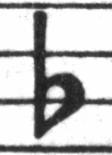

| [Arriba][Índice general][Índice][ ? ] |
GNU LilyPond: Manual de aprendizaje
Este documento también está disponible en formato PDF y como un documento HTML normal de muchas páginas.
Este archivo es la documentación de GNU LilyPond orientada a quienes empiezan con el programa.
Copyright © 1999–2009 por los autores
La traducción de la siguiente nota de copyright se ofrece como cortesía para las personas de habla no inglesa, pero únicamente la nota en inglés tiene validez legal.
The translation of the following copyright notice is provided for courtesy to non-English speakers, but only the notice in English legally counts.
Se otorga permiso para copiar, distribuir y/o modificar este documento bajo los términos de la Licencia de Documentación Libre de GNU, versión 1.1 o cualquier versión posterior publicada por la Free Software Foundation; sin ninguna de las secciones invariantes. Se incluye una copia de esta licencia dentro de la sección titulada “Licencia de Documentación Libre de GNU”.
Permission is granted to copy, distribute and/or modify this document under the terms of the GNU Free Documentation License, Version 1.1 or any later version published by the Free Software Foundation; with no Invariant Sections. A copy of the license is included in the section entitled “GNU Free Documentation License”.
El presente documento es el manual de aprendizaje de GNU LilyPond, versión 2.12.3. Para ver más información sobre la relación entre éste y el resto de los documentos, consulte Sobre la documentación.
Encontrará más información en http://www.lilypond.org/. La página web contiene copias en línea de la presente y otras documentaciones.
| Preámbulo | Prefacio. | |
| 1. Introducción | Qué, por qué y cómo. | |
| 2. Tutorial | Introducción en forma de tutorial. | |
| 3. Conceptos fundamentales | Conceptos básicos necesarios para leer el resto de este manual. | |
| 4. Trucar la salida | Introducción a las modificaciones de la salida. | |
| 5. Trabajar en proyectos de LilyPond | Sobre la utilización en el mundo real. | |
Apéndices | ||
|---|---|---|
| A. Plantillas | Plantillas listas para usar. | |
| B. Tutorial de Scheme | Programar dentro de LilyPond. | |
| C. GNU Free Documentation License | La licencia de este documento. | |
| D. Índice de LilyPond | ||
| [ << Top ] | [Arriba][Índice general][Índice][ ? ] | [ Introducción >> ] | ||
| [ < Top ] | [ Subir : Top ] | [ Introducción > ] | ||
Preámbulo
Debió ser en el transcurso de un ensayo de la EJE (Joven Orquesta de Eindhoven), allá por 1995 cuando Jan, uno de los violistas chiflados, le habló a Han-Wen, uno de los trompistas distorsionados, acerca del gran proyecto en que estaba trabajando. Era un sistema automático para imprimir música (concretamente se trataba de MPP, un preprocesador para MusiXTeX). Resulta que Han-Wen quiso imprimir unas particellas a partir de una partitura, así que empezó a echarle un vistazo al programa, pero se quedó estancado rápidamente. Decidieron que MPP era un callejón sin salida. Después de muchísimo filosofar y de montañas de encendidas conversaciones por correo electrónico, Han-Wen inició el proyecto LilyPond en 1996. Esta vez fue Jan quien resultó absorbido por el nuevo proyecto de Han-Wen.
En ciertos aspectos, desarrollar un programa de ordenador es como aprender a tocar un instrumento. Al principio es divertido descubrir cómo funciona, y supone un divertido reto intentar aquello de lo que aún no eres capaz. Una vez pasado el entusiasmo inicial, hay que practicar más y más. Las escalas y los estudios pueden llegar a aturdir, y si no está motivado por otras personas (profesores, directores o el público) uno siempre está tentado de abandonarlo. Uno persevera y, poco a poco, tocar se convierte en parte de la vida de uno. Algunos días se acoge de forma natural, y es estupendo, y otros simplemente la cosa no funciona, pero uno sigue tocando día tras día.
Igual que hacer música, trabajar en LilyPond puede ser un trabajo muy duro y hay días en que uno se siente como pisando un hormiguero. A pesar de todo, se ha convertido en parte de nuestra vida y seguimos haciéndolo. Con toda probabilidad la motivación más importante es que nuestro programa realmente hace algo útil por las personas. Cuando navegamos por la red encontramos mucha gente que utiliza LilyPond y produce unas partituras impresionantes con él. De esta observación se desprende una sensación algo irreal, pero muy agradable.
Nuestros usuarios no sólo nos transmiten buenas vibraciones por usar el programa, también muchos de ellos nos ayudan enviando sugerencias e informes de fallo; por ello nos gustaría agradecer a todos los usuarios que nos han enviado estos informes, emitido sugerencias o contribuido a LilyPond de cualquier otra forma.
Tocar e imprimir música es algo más que una bonita analogía. Programar juntos es muy divertido, y ayudar a las personas es algo profundamente gratificante, pero en último término trabajar en LilyPond es una forma de expresar nuestro profundo amor por la música. ¡Ojalá le ayude a elaborar montañas de preciosas partituras!
Han-Wen y Jan
Utrecht/Eindhoven, Holanda, julio de 2002.
| [ << Preámbulo ] | [Arriba][Índice general][Índice][ ? ] | [ Tutorial >> ] | ||
| [ < Preámbulo ] | [ Subir : Top ] | [ Antecedentes > ] | ||
1. Introducción
En este capítulo se presentan al lector LilyPond y su documentación.
| 1.1 Antecedentes | ||
| 1.2 Sobre la documentación |
| [ << Introducción ] | [Arriba][Índice general][Índice][ ? ] | [ Tutorial >> ] | ||
| [ < Introducción ] | [ Subir : Introducción ] | [ Grabado > ] | ||
1.1 Antecedentes
Esta sección se ocupa de las metas principales y la arquitectura de LilyPond.
| Grabado | ||
| Grabado automático | ||
| ¿Qué símbolos grabar? | ||
| Representación musical | ||
| Aplicaciones de ejemplo |
| [ << Introducción ] | [Arriba][Índice general][Índice][ ? ] | [ Tutorial >> ] | ||
| [ < Antecedentes ] | [ Subir : Antecedentes ] | [ Grabado automático > ] | ||
Grabado
El arte de la tipografía musical se conoce como grabado (en plancha). El término deriva del proceso tradicional de la impresión musical. Hace sólo unas décadas, la música impresa se hacía estampando la música sobre planchas de zinc o estaño de forma invertida como en un espejo. Después la plancha se entintaba y las depresiones causadas por los cortes y estampados retenían la tinta. Al presionar una hoja de papel sobre la plancha, se formaba una imagen. El estampado y cortado se hacía completamente a mano. Cualquier corrección era muy fastidiosa de realizar, si es que era posible hacerla siquiera, así que el grabado tenía que quedar perfecto a la primera. El grabado era una habilidad altamente especializada; un artesano necesitaba unos cinco años de preparación antes de poder ostentar el título de maestro grabador, y se necesitaban otros cinco años de experiencia para ser un auténtico experto.
Hoy en día, toda la música impresa nueva se produce con ordenadores. Esto tiene unas ventajas evidentes: las copias son más baratas de producir y el trabajo editorial se puede repartir por correo electrónico. Desgraciadamente la penetrante utilización de ordenadores también ha hecho disminuir la calidad gráfica de las partituras. Las impresiones de ordenador tienen un aspecto insulso y mecánico, lo que hace que sea desagradable tocar a partir de ellas.
Las imágenes siguientes ilustran la diferencia entre el grabado tradicional y la salida típica de ordenador, y la tercera imagen muestra cómo LilyPond imita el aspecto tradicional. La imagen de la izquierda presenta el dibujo escaneado de un símbolo de bemol sacado de una edición publicada en el año 2000. La del centro es un símbolo procedente de una edición de Bärenreiter grabada a mano de la misma música. La de la izquierda ilustra los típicos puntos débiles de la impresión por ordenador: las líneas del pentagrama son muy delgadas, el peso del símbolo del bemol es también demasiado ligero como las líneas del pentagrama, y tiene una apariencia rectilínea con esquinas afiladas. En contraste, el bemol de Bärenreiter tiene una apariencia redonda, pesada, casi voluptuosa. Nuestro símbolo del bemol se diseñó según éste, entre otros. Es de forma redondeada y su peso está en armonía con el grosor de nuestras líneas de pentagrama, que son asimismo mucho más gruesas que las de la edición por ordenador.
 |  |  | |
Henle (2000) | Bärenreiter (1950) | Tipografía Feta de LilyPond (2003) |
Tratándose del espaciado, la distribución del espacio debe reflejar las duraciones que hay entre las notas. Sin embargo muchas partituras modernas se atañen a las duraciones con precisión matemática, lo que lleva a unos resultados bastante pobres. En el siguiente ejemplo se muestra un ejemplo dos veces: una utilizando espaciado matemáticamente exacto, y otra con ciertas correcciones. ¿Puede adivinar cuál es cuál?
![[image of music]](90/lily-35e012eb.png)
![[image of music]](1c/lily-f9b0aa77.png)
Cada uno de los dos compases de este fragmento tiene solamente notas de duración constante. El espaciado debería reflejarlo. Desgraciadamente el ojo nos engaña un poco; no solamente percibe la distancia entre las cabezas de las notas, sino que tiene también en cuenta la distancia entre las plicas. Como resultado, las notas de una combinación plica arriba/plica abajo se tendrían que separar más, y las notas de una combinación plica abajo/plica arriba deberían juntarse, todo ello dependiendo de las posiciones combinadas de las notas. Los dos compases de arriba están impresos con esta corrección y los de abajo sin ella, formando grupos de notas pegadas con plica abajo/plica arriba.
Los músicos están normalmente más concentrados en tocar que en estudiar el aspecto de una partitura, y por ello las pequeñeces sobre los detalles tipográficos pueden parecer académicas. Pero no lo son. En las partituras más largas con ritmos monótonos, las correcciones de espaciado llevan a sutiles variaciones en la disposición de cada una de las líneas dándoles una especie de firma visual distintiva. Sin esta firma, todas las líneas parecerían iguales, y se convertirían en un laberinto. Si un músico aparta la mirada o tiene un lapsus de concentración, las líneas podrían perder su lugar sobre el papel.
De forma similar, la fuerza visual de unos símbolos pesados sobre gruesas líneas de pentagrama se sostiene mejor cuando el lector se aleja del papel, por ejemplo cuando está sobre un atril. Una distribución cuidadosa del espacio blanco permite disponer la música muy apretada sin que los símbolos se toquen unos a otros. El resultado reduce a un mínimo las vueltas de página, lo que es una gran ventaja.
Ésta es una característica normal del arte tipográfico. La disposición de la página tiene que ser bonita, no sólo por sí misma, sino sobre todo porque así ayuda al lector en su tarea. Para los materiales destinados a la interpretación, como las partituras, esto es de una importancia doble: los músicos tienen una capacidad de concentración limitada. Cuanta menos atención necesiten para el acto de leer, más se pueden dedicar al acto de tocar la música. Dicho de otra forma: una mejor tipografía se traduce en una mejor interpretación.
Estos ejemplos demuestran que la tipografía musical es un arte sutil y complejo, y que su elaboración requiere una experiencia considerable, que los músicos no suelen tener. LilyPond representa nuestro esfuerzo para llevar la excelencia visual de la música grabada a mano a la era de la informática, y ponerla a disposición de los músicos normales. Hemos ido afinando nuestros algoritmos, diseños de tipografía y preferencias del programa para producir una impresión cuya calidad se equipara con la de las viejas ediciones que tanto nos gusta contemplar y de las que tanto nos gusta tocar.
| [ << Introducción ] | [Arriba][Índice general][Índice][ ? ] | [ Tutorial >> ] | ||
| [ < Grabado ] | [ Subir : Antecedentes ] | [ ¿Qué símbolos grabar? > ] | ||
Grabado automático
¿Cómo nos las arreglamos para implementar la tipografía? Si un artesano necesita más de diez años para convertirse en un auténtico maestro ¿cómo vamos a poder nosotros, simples «hackers», escribir un programa que les quite el trabajo?
La respuesta es: no podemos. Puesto que la tipografía se fundamenta en el juicio humano sobre la apariencia, nunca se puede sustituir completamente a las personas. Sin embargo, se puede automatizar gran parte del trabajo más duro y repetitivo. Si LilyPond resuelve la mayoría de las situaciones comunes de forma correcta, esto ya será una tremenda mejoría sobre los programas existentes. El resto de los casos se podrán afinar a mano. Con el transcurso de los años, el software se puede refinar para que haga un mayor número de cosas de forma automática, de tal forma que los ajustes manuales tienden a ser cada vez menos necesarios.
Cuando empezamos, escribimos el programa LilyPond completamente en el lenguaje C++; la funcionalidad del programa quedaba como esculpida en piedra por los desarrolladores. Este esquema resultó no ser muy satisfactorio por una serie de motivos:
- Cuando LilyPond comete fallos, los usuarios tienen la necesidad de superar las decisiones de formateo. Por ello el usuario debe tener acceso al motor de formateo. De aquí que no podamos dejar establecidas las reglas y valores durante la compilación, sino que los usuarios deben poder acceder a ellos durante la ejecución del programa.
- El grabado de música es cosa de juicio visual y por ello es cuestión de gustos. A pesar de saber tanto como creemos saber, los usuarios pueden no estar de acuerdo con nuestras decisiones personales. Por tanto la definición del estilo tipográfico también debe estar al alcance del usuario.
- Por último, estamos continuamente refinando los algoritmos de formateo y por tanto necesitamos un enfoque flexible para las reglas. El lenguaje C++ fuerza un cierto método para agrupar las reglas que no encaja bien con la manera de funcionar de la notación musical.
Estos problemas se han solucionado integrando un intérprete del lenguaje Scheme y reescribiendo parte del código de LilyPond en Scheme. La actual arquitectura de formateo se construye alrededor del concepto de objetos gráficos, descrita por variables y funciones de Scheme. Esta arquitectura puede tratar al mismo tiempo con las reglas de formateo, el estilo tipográfico y las decisiones de formateo individuales. El usuario tiene acceso directo a la mayor parte de estos controles.
Las variables de Scheme controlan las decisiones de formateo. Por ejemplo, muchos objetos gráficos tienen una variable de dirección que codifica la elección entre arriba y abajo (o izquierda y derecha). Aquí puede ver dos acordes con acentos y signos de arpegio. En el primer acorde los objetos gráficos tienen todas sus direcciones hacia abajo (o hacia la izquierda). El segundo acorde tiene todas las direcciones hacia arriba (o hacia la derecha).
![[image of music]](ad/lily-a808e181.png)
El proceso de formatear una partitura consiste en leer y escribir las variables de los objetos gráficos. Ciertas variables tienen un valor predefinido. Por ejemplo, el grosor de muchas líneas (una característica del estilo tipográfico) son variables con un valor preestablecido. Podemos alterar este valor libremente dando así a nuestra partitura una impresión tipográfica distinta.
![[image of music]](45/lily-b8e84cc1.png)
Las reglas de formateo también son variables que están predefinidas: cada objeto tiene unas variables que contienen procedimientos. Estos procedimientos realizan el trabajo real de formateo y sustituyéndolos por otros podemos alterar el aspecto de los objetos. En el siguiente ejemplo, la regla que define cómo se dibuja la cabeza de una nota se altera durante el transcurso del fragmento musical.
![[image of music]](dd/lily-4ee665c7.png)
| [ << Introducción ] | [Arriba][Índice general][Índice][ ? ] | [ Tutorial >> ] | ||
| [ < Grabado automático ] | [ Subir : Antecedentes ] | [ Representación musical > ] | ||
¿Qué símbolos grabar?
El proceso de formateo toma las decisiones sobre dónde colocar los símbolos. Sin embargo esto sólo se puede hacer una vez que se ha decidido qué símbolos han de imprimirse, o dicho de otro modo: qué notación utilizar.
La notación musical común es un sistema de registro de música que ha venido evolucionando desde hace mil años. La forma que se usa en nuestros días data de los primeros tiempos del Renacimiento. Aunque la forma básica (es decir: puntos sobre una pauta de cinco líneas) no ha cambiado, los detalles continúan evolucionando para expresar todas las innovaciones de la notación contemporánea. Por tanto abarca unos quinientos años de música. Sus aplicaciones se extienden sobre un amplio rango que abarca desde melodías monofónicas hasta monstruosos contrapuntos para gran orquesta.
¿Cómo podemos tratar con una bestia de tantas cabezas, y obligarla a
que se encierre dentro de los límites de un programa de ordenador?
Nuestra solución es trocear el problema de la notación (por oposición
al grabado, esto es, a la tipografía) en fragmentos digeribles y más
fáciles de programar: cada tipo de símbolo se maneja por un módulo
separado que recibe el nombre de «plug-in». Cada «plug-in» es
completamente modular e independiente, de forma que puede
desarrollarse y mejorarse por separado. Estos «plug-ins» se llaman
engravers (grabadores), por analogía con los artesanos que
traducen las ideas musicales a símbolos gráficos.
En el siguiente ejemplo vemos cómo comenzamos con un plug-in para las
cabezas de las notas, el Note_heads_engraver.
![[image of music]](38/lily-e26fb32e.png)
A continuación un Staff_symbol_engraver (grabador del
pentagrama) añade la pauta.
El Clef_engraver (grabador de la clave) define un punto de
referencia para el pentagrama.
![[image of music]](ad/lily-b7b430b0.png)
y el Stem_engraver (grabador de las plicas) añade las plicas.
![[image of music]](de/lily-dde85252.png)
El Stem_engraver (grabador de plicas) recibe una notificación
cuando llega una cabeza. Cada vez que se ve una cabeza (o más, si es
un acorde), se crea un objeto plica y se conecta a la cabeza.
Añadiendo grabadores para las barras, ligaduras, acentos,
alteraciones, líneas divisorias, indicación de compás y armadura
conseguimos una notación completa.
![[image of music]](48/lily-aa409614.png)
Este sistema funciona bien para la música monofónica, pero ¿y con la polifonía? En notación polifónica muchas voces pueden compartir el mismo pentagrama.
![[image of music]](81/lily-ac7b5eb7.png)
En esta situación, las alteraciones y la pauta se comparten, pero las plicas, ligaduras, barras, etc. son propias de cada voz. Por tanto los grabadores han de agruparse. Los grabadores de cabezas, plicas, ligaduras, etc. se unen en un grupo llamado ‘Contexto de voz’, mientras que los grabadores de la armadura, alteraciones, compás, etc. van a un grupo que se llama ‘Contexto de la pauta’. En el caso de la polifonía, un único Contexto de pauta contiene más de un Contexto de voz. De forma semejante, varios Contextos de pauta pueden agruparse en un único Contexto de partitura. El Contexto de partitura es el contexto de notación de más alto nivel.
Véase también
Referencia de funcionamiento interno: Contexts.
![[image of music]](d5/lily-4da76545.png)
| [ << Introducción ] | [Arriba][Índice general][Índice][ ? ] | [ Tutorial >> ] | ||
| [ < ¿Qué símbolos grabar? ] | [ Subir : Antecedentes ] | [ Aplicaciones de ejemplo > ] | ||
Representación musical
Idealmente el formato de entrada para cualquier sistema de formateo de alto nivel es una descripción abstracta del contenido. En este caso, eso constituiría la propia música, lo que plantea un tremendo problema: ¿cómo podemos definir qué es realmente la música? En lugar de intentar hallar una respuesta, le hemos dado la vuelta a la pregunta. Escribimos un programa capaz de producir partituras y ajustamos el formato para que sea tan escueto como sea posible. Cuando el formato ya no puede reducirse más, por definición nos habremos quedado con el contenido musical propiamente dicho. Nuestro programa sirve como definición formal de un documento musical.
La sintaxis también es el interfaz de usuario de LilyPond, así que es fácil teclear
{
c'4 d'8
}
un Do4 (Do central) negra, y un Re4 (el Re por encima del Do central) corchea.
![[image of music]](a3/lily-4ac8db18.png)
A una escala microscópica, dicha sintaxis es fácil de utilizar. A una escala mayor, la sintaxis también requiere una estructura. ¿De qué otra forma podríamos introducir piezas complejas como sinfonías u óperas? La estructura se forma mediante el concepto de expresiones musicales: al combinar pequeños fragmentos de música dentro de otros mayores, se pueden expresar ideas musicales más complejas. Por ejemplo
f4
![[image of music]](71/lily-4525b349.png)
Los acordes se pueden construir encerrando las notas entre << y
>>
<<c4 d4 e4>>
![[image of music]](ca/lily-8d9298b5.png)
Esta expresión se coloca en secuencia encerrándola dentro de llaves
{ … }
{ f4 <<c4 d4 e4>> }
![[image of music]](48/lily-f2a8b3f3.png)
Lo anterior, a su vez también es una expresión, y por ello se puede combinar
de nuevo con otra expresión simultánea (una blanca) usando <<,
\\, y >>
<< g2 \\ { f4 <<c4 d4 e4>> } >>
![[image of music]](a0/lily-41ba6474.png)
Las mencionadas estructuras recursivas se pueden especificar de forma nítida y formal dentro de una gramática independiente del contexto. El código de análisis también se genera a partir de esta gramática. En otras palabras, la sintaxis de LilyPond está definida de una forma clara y sin ambigüedades.
Los interfaces de usuario y la sintaxis son lo que la persona ve y con lo que trata principalmente. En parte, son fruto de preferencias personales y como tales están sujetas a mucha discusión. Aunque las discusiones sobre el gusto tienen su mérito, no son demasiado productivas. Dentro de la escena global de LilyPond, la sintaxis de la entrada tiene una importancia relativamente pequeña: inventarse una sintaxis elegante es fácil, pero escribir un código de formateo decente es mucho más difícil. Esto también queda ilustrado por la cantidad de líneas de código de los componentes respectivos: el análisis y la representación se llevan menos del 10% del código fuente.
| [ << Introducción ] | [Arriba][Índice general][Índice][ ? ] | [ Tutorial >> ] | ||
| [ < Representación musical ] | [ Subir : Antecedentes ] | [ Sobre la documentación > ] | ||
Aplicaciones de ejemplo
Escribimos LilyPond como un experimento de cómo condensar el arte del grabado de música dentro de un programa de ordenador. Gracias a todo este duro trabajo, el programa ahora se puede usar para hacer trabajos útiles. La aplicación más sencilla es imprimir notas.
Añadiendo los nombres de acordes y la letra, obtenemos una hoja guía de acordes (lead sheet).
![[image of music]](4d/lily-7a6c7386.png)
También se puede imprimir notación polifónica y música para piano. El ejemplo siguiente combina algunas otras construcciones exóticas.
![[image of music]](2c/lily-647cf69c.png)
Todos los fragmentos mostrados se han escrito a mano, pero esto no es necesariamente así. Puesto que el motor de formateo es casi completamente automático, puede servir como medio de salida para otros programas que manipulan música. Por ejemplo, se puede usar también para convertir bases de datos de fragmentos musicales en imágenes con destino a páginas web y presentaciones multimedia.
Este manual también es un ejemplo de aplicación: el formato de entrada es texto sencillo, y por ello se puede empotrar fácilmente dentro de otros formatos basados en texto, como LaTeX, HTML, o en el caso concreto de este manual, Texinfo. A través de un programa especial, los fragmentos de entrada se pueden sustituir por imágenes musicales dentro de los archivos de salida PDF o HTML resultantes. Esto convierte la tarea de mezclar música y texto dentro de los documentos, en algo muy sencillo.
| [ << Introducción ] | [Arriba][Índice general][Índice][ ? ] | [ Tutorial >> ] | ||
| [ < Aplicaciones de ejemplo ] | [ Subir : Introducción ] | [ Sobre el Manual de aprendizaje > ] | ||
1.2 Sobre la documentación
Esta sección explica la distintas partes de la documentación.
| Sobre el Manual de aprendizaje | Este manual es una introducción a LilyPond que porporciona explicaciones en profundidad sobre cómo crear notación. | |
| Sobre el Glosario Musical | Este manual explica términos musicales y aporta traducciones de términos a otros idiomas. | |
| Sobre la Referencia de la notación | Este manual es la porción más importante de la documentación. Proporciona información detallada sobre la creación de notación. Este libro da por supuesto que el lector ya conoce el material básico cubierto en el Manual de aprendizaje y que está familiarizado con los términos musicales ingleses presentados en el Glosario musical. | |
| Sobre el manual de Utilización del programa | Trata sobre los programas concretos y los asuntos específicos de distintos sistemas operativos. | |
| Sobre la lista de fragmentos de código | Es una colección de ejemplos breves de LilyPond. | |
| Sobre el Manual de Referencia de Funcionamiento Interno | Este documento proporciona información sobre la programación interna de LilyPond, que es necesaria para construir los trucos. | |
| Otros documentos | Existen algunas otras porciones de la documentación, como las Noticias y los archivos históricos de las listas de correo. |
| [ << Introducción ] | [Arriba][Índice general][Índice][ ? ] | [ Tutorial >> ] | ||
| [ < Sobre la documentación ] | [ Subir : Sobre la documentación ] | [ Sobre el Glosario Musical > ] | ||
Sobre el Manual de aprendizaje
Este libro explica cómo empezar a aprender LilyPond, así como algunos conceptos clave en términos sencillos. Se recomienda leer estos capítulos de forma secuencial.
- Introducción: explica los antecedentes y las metas generales de LilyPond.
- Tutorial: da una amable introducción a la tipografía musical. Los usuarios que se acercan por primera vez deben comenzar por aquí.
- Conceptos fundamentales: explica algunos conceptos generales sobre el formato de los archivos de entrada de LilyPond. Si no está seguro de dónde colocar una instrucción ¡lea este capítulo!
- Trucar la salida: muestra la manera de cambiar el grabado predeterminado que produce LilyPond.
- Trabajar en proyectos de LilyPond: trata los usos prácticos de LilyPond y cómo evitar ciertos problemas bastante comunes. ¡Léalo antes de emprender proyectos grandes!
El Manual de aprendizaje contiene también apéndices que no forman parte de la lectura lineal recomendada. Pueden ser útiles para una mirada posterior:
- Plantillas: muestra plantillas de piezas de LilyPond, listas para usar. Tan sólo tiene que cortar y pegar una plantilla en un archivo, escribir las notas, y ¡habrá terminado!
- Tutorial de Scheme: presenta una breve introducción a Scheme, el lenguaje de programación que usan las funciones musicales. Se trata de material para trucos avanzados; muchos usuarios jamás llegan siquiera a tocar el Scheme.
| [ << Introducción ] | [Arriba][Índice general][Índice][ ? ] | [ Tutorial >> ] | ||
| [ < Sobre el Manual de aprendizaje ] | [ Subir : Sobre la documentación ] | [ Sobre la Referencia de la notación > ] | ||
Sobre el Glosario Musical
Glosario musical: explica términos musicales e incluye traducciones a varios idiomas. Si no está familiarizado con la notación o la terminología musicales (especialmente si no es un anglófono nativo), es muy recomendable que consulte el glosario.
| [ << Introducción ] | [Arriba][Índice general][Índice][ ? ] | [ Tutorial >> ] | ||
| [ < Sobre el Glosario Musical ] | [ Subir : Sobre la documentación ] | [ Sobre el manual de Utilización del programa > ] | ||
Sobre la Referencia de la notación
Este libro explica todas las instrucciones de LilyPond que producen notación impresa. Da por supuesto que el lector está familiarizado con los conceptos del manual de aprendizaje.
- Notación musical: trata ciertos temas agrupados según las construcciones de notación. Esta sección proporciona detalles sobre notación básica que probablemente serán de utilidad en casi cualquier proyecto de notación.
- Notación especializada: también trata los temas agrupados por construcciones de notación. Esta sección proporciona detalles sobre notación especial que solamente será útil para ciertos grupos de instrumentos (o voces).
- Entrada y salida generales: trata de información general sobre los archivos de LilyPond y el control sobre la salida.
- Problemas de espaciado: trata asuntos que afectan a la salida global, como la elección del tamaño del papel o la especificación de los saltos de página.
- Cambiar los valores por omisión: explica cómo hacer los ajustes que permitan a LilyPond producir exactamente la notación que desee.
- Interfaces para programadores: explica cómo crear funciones musicales con Scheme.
El manual de Referencia de la notación también contiene unos apéndices con útiles tablas de referencia.
- Lista bibliográfica: contiene un conjunto de libros de referencia muy útiles para aquellas personas que desean saber más sobre notación y grabado.
- Tablas del manual sobre notación: son un conjunto de tablas que relacionan los nombres de los acordes, instrumentos MIDI, nombres de los colores y la tipografía Feta.
- Hoja de referencia rápida: es una manejable referencia de las instrucciones de LilyPond más comunes.
-
Índice de instrucciones de LilyPond:
un úndice de todas las
\instruccionesde LilyPond. - Índice de LilyPond: un índice completo.
| [ << Introducción ] | [Arriba][Índice general][Índice][ ? ] | [ Tutorial >> ] | ||
| [ < Sobre la Referencia de la notación ] | [ Subir : Sobre la documentación ] | [ Sobre la lista de fragmentos de código > ] | ||
Sobre el manual de Utilización del programa
Este libro explica la manera de ejecutar el programa y cómo integrar la notación de LilyPond con otros programas.
- Instalación: explica cómo instalar LilyPond (incluyendo la compilación, si se desea).
- Configuración: describe cómo debe configurar el sistema para una utilización óptima de LilyPond, como por ejemplo el uso de entornos especiales para determinados editores de texto.
- Ejecutar LilyPond: trata sobre cómo ejecutar LilyPond y sus programas de apoyo. Además, esta sección explica cómo actualizar las partituras a partir de versiones anteriores de LilyPond.
- LilyPond-book: da los detalles que se encuentran detrás de la creación de documentos con ejemplos de música insertados, como este mismo manual.
-
Conversión desde otros formatos:
explica cómo ejecutar los programas de conversión. Estos programas
vienen incluidos en el mismo paquete que el propio LilyPond, y
convierten una amplia variedad de formatos de música al formato
.ly.
Sobre la lista de fragmentos de código
Lista de fragmentos de código de LilyPond: presenta un conjunto seleccionado de fragmentos de código de LilyPond procedentes del Repositorio de Fragmentos de Código (LSR). Todos los fragmentos se encuentran en el dominio público.
Observe que este documento no es un subconjunto exacto de LSR. El LSR ejecuta una versión estable de LilyPond, por lo que cualquier fragmento de código que muestre posibilidades nuevas de una versión de desarrollo se tiene que añadir por separado. Éstas se almacenan en ‘input/new/’ dentro del árbol del código fuente de LilyPond.
La lista de fragmentos de código para cada una de las subsecciones del Manual de Referencia de la Notación también se encuentran enlazados desde la parte Véase también.
| [ << Introducción ] | [Arriba][Índice general][Índice][ ? ] | [ Tutorial >> ] | ||
| [ < Sobre la lista de fragmentos de código ] | [ Subir : Sobre la documentación ] | [ Otros documentos > ] | ||
Sobre el Manual de Referencia de Funcionamiento Interno
Referencia de funcionamiento interno: es un conjunto de páginas HTML con una tupida red de enlaces cruzados, que documentan al detalle el meollo de todas y cada una de las clases, objetos y funciones de LilyPond. Se produce directamente a partir de las definiciones de formateo que se utilizan.
Casi toda la funcionalidad de formateo que se emplea internamente, se encuentra disponible para el usuario de forma directa. Por ejemplo, todas las variables que controlan los valores de grosor, distancias, etc., se pueden cambiar dentro de los archivos de entrada. Hay un enorme número de opciones de formateo, y todas ellas se describen en este documento. Cada sección del manual de notación tiene una subsección Véase también, que hace referencia a la documentación generada. En el documento HTML, estas subsecciones llevan enlaces que se pueden seguir, pulsando sobre ellos.
| [ << Introducción ] | [Arriba][Índice general][Índice][ ? ] | [ Tutorial >> ] | ||
| [ < Sobre el Manual de Referencia de Funcionamiento Interno ] | [ Subir : Sobre la documentación ] | [ Tutorial > ] | ||
Otros documentos
Existen algunos otros lugares que pueden resultar muy valiosos como fuente de información.
- News: es un resumen de los cambios importantes y las posibilidades nuevas de LilyPond desde la versión anterior.
- Los archivos de la lista de correo de usuarios lilypond-user: es una recopilación de todos los mensajes de correo que se han enviado a la lista de usuarios. Hay muchas preguntas que se han formulado varias veces; muy probablemente, si tiene alguna pregunta, la respuesta puede encontrarse en estos archivos.
- Los archivos de la lista de correo de desarrollo lilypond-devel: es una recopilación de todos los mensajes de correo que se han enviado a la lista de los desarrolladores. Aquí la discusión tiene un carácter más técnico; si tiene una pregunta avanzada relacionada con el funcionamiento interno de lilypond, la respuesta puede estar en estos archivos.
- Fragmentos de música incrustados: en todos los documentos en HTML que tienen fragmentos de música incluidos, el código de entrada exacto de LilyPond que se utilizó para producir dicha imagen se puede ver pulsando sobre ella.
- Archivos de inicio: La localización exacta de los archivos de documentación que hemos mencionado puede variar de un sistema a otro. En ocasiones este manual hace referencia a archivos de inicialización y de ejemplo. A lo largo del manual, nos referimos a archivos de entrada por su ruta relativa respecto de directorio de nivel más alto de los archivos de código fuente. Por ejemplo, ‘input/lsr/carpeta/bla.ly’ puede referirse al archivo ‘lilypond2.x.y/input/lsr/carpeta/bla.ly’. En los paquetes binarios para la plataforma UNIX, normalmente la documentación y los ejemplos se encuentran en algún lugar dentro de ‘/usr/share/doc/lilypond/’. Los archivos de inicialización, como por ejemplo ‘scm/lily.scm’, o ‘ly/engraver-init.ly’, se encuentran normalmente en el directorio ‘/usr/share/lilypond/’. Para ver más detalles, consulte Otras fuentes de información.
| [ << Introducción ] | [Arriba][Índice general][Índice][ ? ] | [ Conceptos fundamentales >> ] | ||
| [ < Otros documentos ] | [ Subir : Top ] | [ Primeros pasos > ] | ||
2. Tutorial
Este tutorial comienza con una introducción al lenguaje musical LilyPond y explica cómo producir música impresa. Después de este primer contacto, explicaremos cómo crear música impresa de forma bella, que contenga notación musical usual.
| 2.1 Primeros pasos | ||
| 2.2 Notación en un solo pentagrama | ||
| 2.3 Varias notas a la vez | ||
| 2.4 Canciones | ||
| 2.5 Retoques finales |
| [ << Tutorial ] | [Arriba][Índice general][Índice][ ? ] | [ Conceptos fundamentales >> ] | ||
| [ < Tutorial ] | [ Subir : Tutorial ] | [ Compilar un archivo > ] | ||
2.1 Primeros pasos
Esta sección le ofrece una introducción básica al trabajo con LilyPond.
| 2.1.1 Compilar un archivo | ||
| 2.1.2 Notación sencilla | ||
| 2.1.3 Trabajar sobre los archivos de entrada | ||
| 2.1.4 Cómo leer el manual |
| [ << Tutorial ] | [Arriba][Índice general][Índice][ ? ] | [ Conceptos fundamentales >> ] | ||
| [ < Primeros pasos ] | [ Subir : Primeros pasos ] | [ Notación sencilla > ] | ||
2.1.1 Compilar un archivo
“Compilación” es una palabra que significa procesar un texto de entrada en formato de LilyPond para producir un archivo que se puede imprimir y (de manera opcional) un archivo MIDI que se puede reproducir. El primer ejemplo muestra el aspecto de un sencillo archivo de texto de entrada.
Para crear una partitura, escribimos un archivo de texto que detalla la notación deseada. Por ejemplo, si escribimos
{
c' e' g' e'
}
el resultado tiene este aspecto:
![[image of music]](a1/lily-fb428739.png)
|
Nota: la música y la letra escrita en el código de entrada de LilyPond tiene que ir siempre entre { llaves }. Las llaves deberían también estar rodeadas por espacios a no ser que se encuentren al principio o al final de una línea, para evitar ambigüedades. Es posible que se omitan en algunos ejemplos del presente manual ¡pero no las omita en su propia música! Para ver más información sobre la presentación de los ejemplos del manual, consulte Cómo leer el manual. |
Además, la entrada de LilyPond es sensible a las mayúsculas.
{ c d e } es una entrada válida; { C D E } produce
un mensaje de error.
Introducir música y ver la salida
En esta sección vamos a explicar qué órdenes hay que ejecutar y cómo, para ver o imprimir el resultado.
Tenga en cuenta que están disponibles varios otros editores de texto con un mejor apoyo a la edición de texto de LilyPond. Para ver más información, consulte Apoyo respecto de los editores de texto.
|
Nota: La primera vez que ejecute LilyPond, tardará un minuto o dos porque todas las tipografías del sistema han de ser analizadas previamente. ¡Después de esto, LilyPond será mucho más rápido! |
MacOS X
Si hace doble clic sobre LilyPond.app, se abrirá con un archivo
de ejemplo. Guárdelo, por ejemplo, como ‘prueba.ly’ en el
Escritorio, y a continuación procéselo con la orden de menú
‘Compilar > Componer archivo’. El PDF resultante se mostrará en
la pantalla.
Para posteriores usos de LilyPond, debería comenzar eligiendo ‘Nuevo’ o ‘Abrir’. Tiene que grabar el archivo antes de componerlo tipográficamente. Si se produce algún error durante el proceso, observe la ventana del registro.
Windows
En Windows, si hace doble clic sobre el icono de LilyPond que está en el escritorio, se abrirá un sencillo editor de texto con un archivo de ejemplo. Guárdelo, por ejemplo, con el nombre ‘prueba.ly’ en el escritorio y después haga doble clic sobre el icono del archivo para procesarlo (el icono tiene la forma de una corchea). Transcurridos unos segundos, obtendrá un archivo ‘prueba.pdf’ en el escritorio. Haga doble clic sobre este archivo PDF para ver la partitura compuesta tipográficamente. Un método alternativo para procesar el archivo ‘prueba.ly’ es arrastrarlo y soltarlo sobre el icono de LilyPond utilizando el ratón.
Para editar un archivo ‘.ly’ existente, haga clic sobre él con el
botón derecho del ratón y elija “Editar la fuente”. Para empezar
con un archivo vacío, arranque el editor como se describe más arriba y
elija “Nuevo” del menú “Archivo”, o haga clic con el botón
derecho sobre el escritorio y elija “Nuevo..Documento de texto”,
cámbiele el nombre por otro de su elección y cambie la extensión del
archivo a .ly. Edítelo y luego haga doble click sobre él para
procesarlo como se explicó antes.
Al hacer doble clic sobre el archivo no sólo se obtiene como resultado un archivo PDF, sino también un archivo ‘.log’ que contiene cierta información acerca de lo que LilyPond ha hecho con el archivo. Si se produce algún error, examine este archivo de registro.
UNIX
Cree un archivo de texto con el nombre ‘prueba.ly’ y escriba en él:
{
c' e' g' e'
}
Para procesar el archivo ‘prueba.ly’ haga lo siguiente:
lilypond prueba.ly
Verá algo parecido a:
lilypond prueba.ly GNU LilyPond 2.12.3 Procesando `prueba.ly' Analizando... Interpretando la música... Preprocesando los objetos gráficos... Buscando el número de páginas ideal... Disponiendo la música en 1 página... Dibujando los sistemas... Escribiendo la página de salida en `prueba.ps'... Convirtiendo a `prueba.pdf'...
| [ << Tutorial ] | [Arriba][Índice general][Índice][ ? ] | [ Conceptos fundamentales >> ] | ||
| [ < Compilar un archivo ] | [ Subir : Primeros pasos ] | [ Trabajar sobre los archivos de entrada > ] | ||
2.1.2 Notación sencilla
LilyPond añadirá ciertos elementos de notación de manera automática. En el siguiente ejemplo hemos especificado solamente cuatro alturas, pero LilyPond ha añadido la clave, el compás y las duraciones.
{ c' e' g' e' }
![[image of music]](1d/lily-960871dd.png)
Este comportamiento se puede modificar, pero en general estos valores automáticos son adecuados.
Alturas
Glosario musical: altura, intervalo, escala, Do central, octava, alteración accidental.
La manera más sencilla de introducir las notas es mediante la
utilización del modo \relative (relativo). En este modo, se
elige la octava automáticamente bajo la suposición de que la siguiente
nota se colocará siempre lo más cerca de la nota actual, es decir, se
colocará en la octava comprendida dentro de hasta tres espacios de
pentagrama a partir de la nota anterior. Comenzaremos por introducir
el fragmento musical más elemental: una escala, donde cada
nota está comprendida dentro de tan sólo un espacio de pentagrama
desde la nota anterior.
% fijar el punto de inicio en Do central
\relative c' {
c d e f
g a b c
}
La nota inicial es el Do central. Cada nota sucesiva se coloca lo más cerca posible de la nota previa (en otras palabras: la primera ‘c’ es el Do más cercano al Do central; a éste le sigue el Re más cercano a la nota previa, y así sucesivamente). Podemos crear melodías con intervalos mayores, aún sin dejar de utilizar el modo relativo:
\relative c' { d f a g c b f d }
![[image of music]](6d/lily-187354e6.png)
No es necesario que la primera nota de la melodía comience exactamente
en aquella que especifica la altura de inicio. En el ejemplo
anterior, la primera nota (d) es el Re más cercano al Do
central.
Añadiendo (o eliminando) comillas simples ' o comas , a
la instrucción \relative c' {, podemos cambiar la octava
de inicio:
% una octava por encima del Do central
\relative c'' {
e c a c
}
Al principio, el modo relativo puede resultar algo confuso, pero es la forma más sencilla de introducir la mayor parte de las melodías. Veamos cómo funciona en la práctica este cálculo relativo. Comenzando por Si, que está situado en la línea central en clave de Sol, podemos alcanzar Do, Re y Mi dentro de los tres espacios de pentagrama hacia arriba, y La, Sol y Fa dentro de los tres espacios hacia abajo. Por tanto, si la nota siguiente a Si es Do, Re o Mi se supondrá que está por encima del Si, mientras que La, Sol o Fa se entenderán situados por debajo.
\relative c'' {
b c % el Do está un espacio por encima, es el Do agudo
b d % el Re está 2 por encima ó 5 por debajo, es el Re agudo
b e % el Mi está 3 por encima ó 4 por debajo, es el Mi agudo
b a % el La está 6 por encima ó 1 por debajo, es el La grave
b g % el Sol está 5 por encima ó 2 por debajo, es el Sol grave
b f % el Fa está 4 por encima ó 3 por debajo, es el Fa grave
}
Lo mismo exactamente ocurre cuando cualquiera de esas notas llevan un sostenido o un bemol. Las Alteraciones accidentales se ignoran totalmente en el cálculo de la posición relativa. Exactamente la misma cuenta de espacios de pentagrama se hace a partir de una nota situada en cualquier otro lugar del mismo.
Para añadir intervalos mayores de tres espacios de pentagrama, podemos
elevar la octava añadiendo una comilla simple ' (o
apóstrofo) a continuación del nombre de la nota. También podemos
bajar la octava escribiendo una coma , a continuación del
nombre de la nota.
\relative c'' { a a, c' f, g g'' a,, f' }
![[image of music]](e7/lily-fa9cb7de.png)
Para subir o bajar una nota en dos (¡o más!) octavas, utilizamos
varias '' ó ,, (pero tenga cuidado de utilizar dos
comillas simples '' ¡y no una comilla doble " !)
El valor inicial de \relative c' también puede modificarse
de esta forma.
Duraciones (valores rítmicos)
Glosario musical: barra, duración, redonda, blanca, negra, figura con puntillo.
La duración de una nota se especifica mediante un número
después del nombre de la nota. 1 significa redonda,
2 significa blanca, 4 significa
negra y así sucesivamente. Las barras de
corchea se añaden automáticamente.
Si no especifica una duración, se utiliza la duración previa para la nota siguiente. La figura por omisión de la primera nota es una negra.
\relative c'' { a1 a2 a4 a8 a a16 a a a a32 a a a a64 a a a a a a a a2 }
![[image of music]](be/lily-debc8893.png)
Para crear notas con puntillo, añada un punto . al
número de la duración. La duración de una nota con puntillo se debe
especificar de forma explícita (es decir: mediante un número).
\relative c'' { a a a4. a8 a8. a16 a a8. a8 a4. }
![[image of music]](13/lily-9b2281d2.png)
Silencios
Glosario musical: silencio.
Un silencio se introduce igual que si fuera una nota con el
nombre r :
\relative c'' { a r r2 r8 a r4 r4. r8 }
![[image of music]](37/lily-366ea140.png)
Indicación de compás
Glosario musical: indicación de compás.
La indicación de compás se puede establecer con la orden
\time :
\relative c'' {
\time 3/4
a4 a a
\time 6/8
a4. a
\time 4/4
a4 a a a
}
Clave
Glosario musical: clave.
La clave se puede establecer utilizando la orden
\clef :
\relative c' { \clef treble c1 \clef alto c1 \clef tenor c1 \clef bass c1 }
![[image of music]](d1/lily-1b80f55d.png)
Todo junto
He aquí un pequeño ejemplo que muestra todos los elementos anteriores juntos:
\relative c, { \time 3/4 \clef bass c2 e8 c' g'2. f4 e d c4 c, r4 }
![[image of music]](73/lily-5f91c834.png)
Véase también
Referencia de la notación: Escritura de notas, Escritura de las duraciones (valores rítmicos), Escritura de silencios, Indicación de compás, Clave.
| [ << Tutorial ] | [Arriba][Índice general][Índice][ ? ] | [ Conceptos fundamentales >> ] | ||
| [ < Notación sencilla ] | [ Subir : Primeros pasos ] | [ Cómo leer el manual > ] | ||
2.1.3 Trabajar sobre los archivos de entrada
Los archivos de entrada de LilyPond son como los archivos fuente de
muchos lenguajes de programación corrientes. Son sensibles a las
mayúsculas e insensibles al número de espacios. Las expresiones se
forman con llaves { } y los comentarios se denotan por un signo de
porcentaje (%) o por %{ ... %}.
Si la frase anterior no tiene sentido para usted ¡no se preocupe! A continuación explicaremos el significado de todos estos términos:
-
Sensible a las mayúsculas: tiene importancia el hecho de que
introduzca una letra en minúsculas (p.ej.
a, b, s, t) o en mayúsculas (p.ej.A, B, S, T). Las notas son minúsculas:{ c d e }es una entrada válida;{ C D E }produciría un mensaje de error. -
Insensible al número de espacios: no importa cuántos espacios
(o saltos de línea) añada.
{ c d e }significa lo mismo que{ cd e } y que{ c d e }Por supuesto, el ejemplo anterior es difícil de leer. Una regla práctica es sangrar los bloques de código con un carácter de tabulación, o bien con dos espacios:
{ c d e } -
Expresiones:
Todo fragmento de código de entrada para LilyPond ha de llevar
{ llaves } antes y después de la entrada. Estas llaves le dicen a
LilyPond que la entrada es una expresión musical unitaria, igual que
los paréntesis ‘()’ de las matemáticas. Las llaves deben ir rodeadas
de un espacio a no ser que se encuentren al comienzo o al final de una
línea, para evitar cualquier ambigüedad.
Una instrucción de LilyPond seguida de una expresión simple entre llaves (como por ejemplo
\relative { }) también es una expresión musical unitaria. -
Comentarios:
Un comentario es una nota para el lector humano de la entrada musical;
se ignora cuando esta entrada se analiza, de manera que no tiene
ningún efecto sobre la salida impresa. Existen dos tipos de
comentarios. El símbolo de porcentaje ‘%’ introduce un
comentario de línea; todo lo que se encuentra después de ‘%’ en
esa línea se ignora. Por convenio, una línea de comentario se coloca
por encima del código a que se refiere el comentario.
a4 a a a % este comentario se refiere a las notas Si b2 b
Un comentario de bloque marca una sección entera de entrada musical como comentario. Todo lo que está encerrado dentro de
%{y%}se ignora (pero los comentarios no pueden anidarse, lo que significa que un comentario de bloque no puede incluir otros comentarios de bloque). Si lo hiciera, el primer%}daría por terminado los dos comentarios de bloque. El siguiente fragmento muestra algunos posibles usos para los comentarios:% a continuación van las notas de campanitas del lugar c4 c g' g a a g2 %{ Esta línea y las notas que aparecen más abajo se ignoran, por estar dentro de un comentario de bloque. f f e e d d c2 %}
| [ << Tutorial ] | [Arriba][Índice general][Índice][ ? ] | [ Conceptos fundamentales >> ] | ||
| [ < Trabajar sobre los archivos de entrada ] | [ Subir : Primeros pasos ] | [ Notación en un solo pentagrama > ] | ||
2.1.4 Cómo leer el manual
Como ya vimos en Trabajar sobre los archivos de entrada, el código de entrada de
LilyPond debe estar rodeado de llaves { } o de \relative
c'' { ... }. Durante el resto del presente manual, la mayor parte
de los ejemplos omitirán las llaves. Para reproducir los ejemplos,
deberá copiar y pegar la entrada que se muestra, pero deberá
escribir el \relative c'' { }, de la siguiente forma:
\relative c'' {
... aquí va el ejemplo...
}
¿Por qué omitir las llaves? Casi todos los ejemplos del presente
manual se pueden insertar en medio de un fragmento mayor de música.
Para estos ejemplos no tiene ningún sentido añadir \relative
c'' { } (¡no debería poner un \relative dentro de otro
\relative!); si hubiésemos incluido \relative c'' {
} rodeando a cada uno de los ejemplos, usted no podría copiar un
ejemplo pequeño procedente de la documentación y pegarlo dentro de su
propia pieza. La mayoría querrá insertar el código dentro de una
pieza más grande, por eso hemos formateado el manual de esta manera.
Ejemplos con enlace
Muchas personas aprenden a utilizar programas probando y enredando con ellos. Esto también puede hacerse con LilyPond. Si hace clic sobre una imagen en la versión en HTML de este manual, podrá ver la entrada exacta de LilyPond que se utilizó para generar esa imagen. Pruébelo sobre esta imagen:
Cortando y pegando todo lo que se encuentra dentro de la sección “ly snippet” (fragmento de tipo ly), tendrá una plantilla inicial para sus experimentos. Para poder ver exactamente el mismo resultado (con igual anchura de línea y todo), copie todo lo que está desde “Start cut-&-pastable section” hasta el final del archivo.
Véase también
Podrá encontrar más consejos y trucos para la construcción de archivos de entrada en Suggestions for writing LilyPond files; pero quizá sea mejor leer primero el resto del tutorial.
| [ << Tutorial ] | [Arriba][Índice general][Índice][ ? ] | [ Conceptos fundamentales >> ] | ||
| [ < Cómo leer el manual ] | [ Subir : Tutorial ] | [ Alteraciones accidentales y armaduras > ] | ||
2.2 Notación en un solo pentagrama
Esta sección es una introducción a la notación corriente que se utiliza para una voz o un pentagrama.
| [ << Tutorial ] | [Arriba][Índice general][Índice][ ? ] | [ Conceptos fundamentales >> ] | ||
| [ < Notación en un solo pentagrama ] | [ Subir : Notación en un solo pentagrama ] | [ Ligaduras de unión y de expresión > ] | ||
2.2.1 Alteraciones accidentales y armaduras
Alteraciones accidentales
Glosario musical: sostenido, bemol, doble sostenido, doble bemol, alteración accidental.
Una nota con sostenido se hace añadiendo is al
nombre, y una nota bemol añadiendo es. Como ha
podido adivinar, un doble sostenido o doble
bemol se hace añadiendo isis o eses. Esta sintaxis se
deriva de las convenciones de nomenclatura de las notas en las lenguas
nórdicas y germánicas como el alemán y el holandés. Para utilizar
otros nombres para las alteraciones accidentales, véase
Nombres de las notas en otros idiomas.
cis1 ees fisis, aeses
Armaduras
Glosario musical: armadura de la tonalidad, mayor, menor.
La armadura de la tonalidad se establece mediante la
instrucción \key seguido de una nota y \major o
\minor.
\key d \major a1 \key c \minor a
![[image of music]](d6/lily-9a1ef467.png)
Advertencia: armaduras y alturas
Glosario musical: alteración accidental, armadura de la tonalidad, altura, bemol, becuadro, sostenido, transposición.
Para determinar si hay que imprimir una alteración accidental, LilyPond examina las notas y la armadura de la tonalidad. La armadura solamente afecta a las alteraciones impresas, ¡no a las propias notas! Esta funcionalidad suele confundir a los que están empezando con el programa, por ello permítanos explicarla en detalle.
LilyPond hace una clara distinción entre el contenido musical y la presentación. La alteración (bemol, becuadro o sostenido) de una nota es parte de la altura, y por tanto es contenido musical. Si una alteración (un signo impreso de bemol, becuadro o sostenido) se imprime o no delante de la nota correspondiente, es una cuestión de presentación. La presentación es algo que sigue unas reglas, así que las alteraciones accidentales se imprimen automáticamente según dichas reglas. Las alturas de las notas en su música son obras de arte, por tanto no se añadirán automáticamente, y usted deberá introducir aquello que quiera oír.
En el siguiente ejemplo:
\key d \major d cis fis
ninguna nota lleva una alteración impresa, pero de todas formas usted
debe añadir el is a cis y a fis.
El texto b no significa “imprimir una bolita negra en la
tercera línea del pentagrama.” Más bien significa: “hay una nota
Si natural.” En la tonalidad de La bemol mayor, lleva una
alteración accidental:
\key aes \major b
![[image of music]](0c/lily-4c204a11.png)
Poner todas las alteraciones de forma explícita puede que requiera algo más de trabajo al teclear, pero la ventaja es que la transposición es más fácil, y las alteraciones se pueden imprimir siguiendo varias convenciones distintas. Consulte Alteraciones accidentales automáticas para ver ejemplos de cómo se pueden imprimir las alteraciones de acuerdo a reglas diferentes.
Véase también
Referencia de la notación: Nombres de las notas en otros idiomas, Alteraciones accidentales, Alteraciones accidentales automáticas, Armadura de la tonalidad.
Glosario musical: Nombres de las notas.
2.2.2 Ligaduras de unión y de expresión
Ligaduras de unión
Glosario musical: ligadura de unión.
Una ligadura de unión se crea adjuntando un carácter de
tilde curva ~ a la primera nota ligada:
g4~ g c2~ c4 ~ c8 a8 ~ a2
Ligaduras de expresión
Glosario musical: ligadura de expresión.
Una ligadura de expresión es una curva que se traza
abarcando varias notas. Las notas inicial y final se marcan mediante
( y ) respectivamente.
d4( c16) cis( d e c cis d) e( d4)
![[image of music]](c2/lily-6359e970.png)
Ligaduras de fraseo
Glosario musical: ligadura de expresión, fraseo.
Las ligaduras que se utilizan para indicar fraseos más
largos se pueden introducir mediante \( y \). Puede
haber al mismo tiempo ligaduras de legato y ligaduras de fraseo, pero
no es posible tener legatos simultáneos o ligaduras de expresión
simultáneas.
a8(\( ais b c) cis2 b'2 a4 cis,\)
![[image of music]](3e/lily-87ea58ef.png)
Advertencias: ligaduras de expresión frente a ligaduras de unión
Glosario musical: articulación, ligadura de expresión, ligadura de unión.
Una ligadura de expresión parece una ligadura de unión, pero tiene un significado distinto. Una ligadura (de unión) sencillamente hace que la primera nota sea más larga, y sólo se puede utilizar sobre parejas de notas iguales. Las ligaduras de expresión indican la articulación de las notas, y se pueden utilizar sobre grupos mayores de notas. Las ligaduras de unión y de expresión se pueden anidar unas dentro de otras.
c2~( c8 fis fis4 ~ fis2 g2)
Véase también
Referencia de la notación: Ligaduras de unión, Ligaduras de expresión, Ligaduras de fraseo.
| [ << Tutorial ] | [Arriba][Índice general][Índice][ ? ] | [ Conceptos fundamentales >> ] | ||
| [ < Ligaduras de unión y de expresión ] | [ Subir : Notación en un solo pentagrama ] | [ Añadir texto > ] | ||
2.2.3 Articulaciones y matices dinámicos
Articulaciones
Glosario musical: articulación.
Las articulaciones más corrientes se pueden añadir a las
notas utilizando un guión - seguido de un carácter único:
c-. c-- c-> c-^ c-+ c-_
![[image of music]](40/lily-971a4965.png)
Digitaciones
Glosario musical: digitaciones.
De manera similar, las digitaciones se pueden añadir a una
nota utilizando un guión (-) seguido del dígito deseado:
c-3 e-5 b-2 a-1
![[image of music]](9f/lily-a52c3d8a.png)
Las articulaciones y digitaciones normalmente se colocan de forma
automática, pero puede especificar una dirección mediante ^
(encima) o _ (debajo). También puede usar varias
articulaciones sobre la misma nota. Sin embargo, casi siempre es
mejor dejar que LilyPond determine la dirección de las articulaciones.
c_-^1 d^. f^4_2-> e^-_+
Matices dinámicos
Glosario musical: matices dinámicos, crescendo, decrescendo.
Las expresiones de matiz o signos dinámicos se hacen añadiendo las marcas (con una barra invertida) a la nota:
c\ff c\mf c\p c\pp
![[image of music]](d0/lily-d23a1c9a.png)
Los crescendi y decrescendi comienzan con las
órdenes \< y \>. La siguiente indicación de matiz, como
por ejemplo \f, dará por terminado el (de)crescendo, o bien se
puede usar la instrucción \!:
c2\< c2\ff\> c2 c2\!
Véase también
Referencia de la notación: Articulaciones y ornamentos, Indicaciones de digitación, Matices dinámicos.
| [ << Tutorial ] | [Arriba][Índice general][Índice][ ? ] | [ Conceptos fundamentales >> ] | ||
| [ < Articulaciones y matices dinámicos ] | [ Subir : Notación en un solo pentagrama ] | [ Barras automáticas y manuales > ] | ||
2.2.4 Añadir texto
Es posible añadir texto a la partitura:
c1^"espr" a_"legato"
![[image of music]](3b/lily-2742ba34.png)
Se puede aplicar un formateo adicional mediante la instrucción \markup:
c1^\markup{ \bold espr} a1_\markup{ \dynamic f \italic \small { 2nd } \hspace #0.1 \dynamic p }
![[image of music]](5a/lily-ba7ba9ce.png)
Véase también
Referencia de la notación: Escritura del texto.
| [ << Tutorial ] | [Arriba][Índice general][Índice][ ? ] | [ Conceptos fundamentales >> ] | ||
| [ < Añadir texto ] | [ Subir : Notación en un solo pentagrama ] | [ Instrucciones rítmicas avanzadas > ] | ||
2.2.5 Barras automáticas y manuales
Glosario musical: barra.
Todas las barras de las figuras se dibujan automáticamente:
a8 ais d ees r d c16 b a8
![[image of music]](7a/lily-59887ece.png)
Si no le gustan las barras automáticas, pueden forzarse manualmente.
Marque la primera nota que comprende la barra con [ y la última
con ].
a8[ ais] d[ ees r d] a b
![[image of music]](3a/lily-74fb6363.png)
Si quiere desactivar completamente el barrado automático o para una
sección extensa de música, utilice la instrucción \autoBeamOff
para apagarlo y \autoBeamOn para activarlo de nuevo.
\autoBeamOff a8 c b4 d8. c16 b4 \autoBeamOn a8 c b4 d8. c16 b4
![[image of music]](f2/lily-576b0567.png)
Véase también
Referencia de la notación: Barras automáticas, Barras manuales.
| [ << Tutorial ] | [Arriba][Índice general][Índice][ ? ] | [ Conceptos fundamentales >> ] | ||
| [ < Barras automáticas y manuales ] | [ Subir : Notación en un solo pentagrama ] | [ Varias notas a la vez > ] | ||
2.2.6 Instrucciones rítmicas avanzadas
Compás parcial
Glosario musical: anacrusa.
Una anacrusa se introduce con la palabra clave
\partial. Va seguida de una duración: \partial 4 es una
anacrusa de negra y \partial 8 de corchea.
\partial 8 f8 c2 d
![[image of music]](ae/lily-3c657963.png)
Grupos especiales
Glosario musical: figura, tresillo.
Los grupos especiales como los tresillos se hacen con la palabra clave
\times. Requiere dos argumentos: una fracción y un fragmento
de música. La duración del fragmento de música se multiplica por la
fracción. Los tresillos hacen que las notas ocupen 2/3 de su duración
expresa, por tanto un tresillo lleva una fracción de 2/3:
\times 2/3 { f8 g a } \times 2/3 { c r c } \times 2/3 { f,8 g16[ a g a] } \times 2/3 { d4 a8 }
![[image of music]](78/lily-5a580a75.png)
Notas de adorno
Glosario musical: notas de adorno, acciaccatura, appoggiatura.
Las notas de adorno se crean con la instrucción
\grace, aunque también se pueden conseguir precediendo una
expresión musical por la palabra clave \appoggiatura o
\acciaccatura
c2 \grace { a32[ b] } c2 c2 \appoggiatura b16 c2 c2 \acciaccatura b16 c2
![[image of music]](d4/lily-2f000789.png)
Véase también
Referencia de la notación: Notas de adorno, Grupos especiales, Anacrusas.
| [ << Tutorial ] | [Arriba][Índice general][Índice][ ? ] | [ Conceptos fundamentales >> ] | ||
| [ < Instrucciones rítmicas avanzadas ] | [ Subir : Tutorial ] | [ Explicación de las expresiones musicales > ] | ||
2.3 Varias notas a la vez
Esta sección es una introducción a las notas simultáneas: varios instrumentos, varios pentagramas para un solo instrumento (p.ej. piano) y acordes.
La palabra “polifonía” en música hace referencia al hecho de tener más de una voz en un momento determinado dentro de una pieza musical. La palabra “polifonía” en LilyPond se refiere al hecho de tener más de una voz en el mismo pentagrama.
| 2.3.1 Explicación de las expresiones musicales | ||
| 2.3.2 Varios pentagramas | ||
| 2.3.3 Grupos de pentagramas | ||
| 2.3.4 Combinar notas para formar acordes | ||
| 2.3.5 Polifonía en un solo pentagrama |
| [ << Tutorial ] | [Arriba][Índice general][Índice][ ? ] | [ Conceptos fundamentales >> ] | ||
| [ < Varias notas a la vez ] | [ Subir : Varias notas a la vez ] | [ Varios pentagramas > ] | ||
2.3.1 Explicación de las expresiones musicales
En los archivos de entrada de LilyPond, la música se representa mediante expresiones musicales. Una sola nota es una expresión musical:
a4
![[image of music]](a8/lily-1265379a.png)
Al encerrar un grupo de notas dentro de llaves creamos una expresión musical compuesta. Aquí hemos creado una expresión musical compuesta con dos notas:
{ a4 g4 }
Si colocamos un grupo de expresiones musicales (p.ej.: notas) dentro de llaves, eso significa que se encuentran en secuencia (es decir, cada una sigue a la anterior). El resultado es otra expresión musical:
{ { a4 g } f g }
![[image of music]](03/lily-0832009b.png)
Analogía: expresiones matemáticas
Este mecanismo es semejante a las fórmulas matemáticas: una fórmula grande se construye combinando fórmulas pequeñas. Dichas fórmulas se llaman expresiones, y su definición es recursiva de tal forma que se pueden construir expresiones de un tamaño y complejidad arbitrarios. Por ejemplo:
1 1 + 2 (1 + 2) * 3 ((1 + 2) * 3) / (4 * 5)
Ésta es una secuencia de expresiones donde cada expresión se encuentra
contenida dentro de la siguiente, más grande. Las expresiones más
simples son números, y las mayores se hacen combinando expresiones
mediante operadores (como +, * y /) y paréntesis.
Del mismo modo que las expresiones matemáticas, las expresiones
musicales se pueden anidar a una profundidad arbitraria, lo que se
hace necesario para músicas complejas como las partituras polifónicas.
Expresiones musicales simultáneas: varios pentagramas
Glosario musical: polifonía.
Esta técnica es muy útil para la música polifónica. Para
introducir música con más voces o con más pentagramas, lo que hacemos
es combinar varias expresiones en paralelo. Para indicar que dos
voces se deben interpretar al mismo tiempo, sencillamente introduzca
una combinación simultánea de expresiones musicales. Una expresión
musical ‘simultánea’ se forma encerrando las expresiones dentro de
<< y >>. En el ejemplo que sigue, tres secuencias (cada
una de las cuales contiene dos notas diferentes) se combinan de forma
simultánea:
\relative c'' { << { a4 g } { f e } { d b } >> }
![[image of music]](72/lily-6ff397d7.png)
Tenga en cuenta que hemos sangrado cada nivel jerárquico de la entrada con un margen distinto. A LilyPond no le importa cuánto (o cuán poco) espacio haya al comienzo de una línea, pero el establecimiento de márgenes distintos dentro del código de LilyPond, de esta forma, lo hace mucho más fácil de leer por nosotros los seres humanos.
|
Nota: cada nota se entiende relativa a la nota anterior de la
entrada, no relativa a la |
Expresiones musicales simultáneas: un solo pentagrama
Para determinar el número de pentagramas en una pieza, LilyPond examina la primera expresión. Si ésta consiste en una sola nota, hay un solo pentagrama; si hay una expresión simultánea, hay más de un pentagrama.
\relative c'' { c2 <<c e>> << { e f } { c <<b d>> } >> }
![[image of music]](69/lily-a9e64f48.png)
| [ << Tutorial ] | [Arriba][Índice general][Índice][ ? ] | [ Conceptos fundamentales >> ] | ||
| [ < Explicación de las expresiones musicales ] | [ Subir : Varias notas a la vez ] | [ Grupos de pentagramas > ] | ||
2.3.2 Varios pentagramas
Como ya hemos visto en Explicación de las expresiones musicales, los archivos de entrada para LilyPond se construyen a base de expresiones musicales. Si la partitura comienza con expresiones musicales simultáneas, LilyPond crea varios pentagramas. Sin embargo es más fácil ver lo que ocurre si creamos cada uno de los pentagramas de forma explícita.
Para imprimir más de un pentagrama, cada fragmento de música que
constituye un pentagrama se marca escribiendo \new Staff antes
de él. Estos elementos Staff se combinan después en paralelo
con << y >>:
\relative c'' { << \new Staff { \clef treble c } \new Staff { \clef bass c,, } >> }
![[image of music]](f4/lily-19f04d23.png)
La instrucción \new inaugura un ‘contexto de notación’. Un
contexto de notación es un entorno dentro del que se interpretan los
acontecimientos musicales (como las notas o las instrucciones
\clef). Para piezas sencillas, tales contextos de notación se
crean automáticamente. Para piezas más complicadas, es mejor marcar
los contextos de forma explícita.
Existen varias clases de contextos. Score, Staff y
Voice manejan la notación melódica, mientras que Lyrics
se ocupa de los textos cantados y ChordNames imprime los
nombres de los acordes.
En términos de sintaxis, la anteposición de \new a una
expresión musical crea una expresión musical mayor. Es semejante al
signo menos de las matemáticas. La fórmula (4+5) es una
expresión, por tanto -(4+5) es una expresión más amplia.
Las indicaciones de compás escritas en un pentagrama afectan al resto de ellos, de forma predeterminada. En cambio, la armadura de la tonalidad de un pentagrama no afecta a los otros pentagramas. Este comportamiento predeterminado diferente es a causa de que las partituras con instrumentos transpositores son más comunes que las partituras polirrítmicas.
\relative c'' { << \new Staff { \clef treble \key d \major \time 3/4 c } \new Staff { \clef bass c,, } >> }
![[image of music]](3b/lily-caf07281.png)
| [ << Tutorial ] | [Arriba][Índice general][Índice][ ? ] | [ Conceptos fundamentales >> ] | ||
| [ < Varios pentagramas ] | [ Subir : Varias notas a la vez ] | [ Combinar notas para formar acordes > ] | ||
2.3.3 Grupos de pentagramas
Glosario musical: llave.
La música para piano se compone tipográficamente en forma de dos
pentagramas unidos mediante una llave. El aspecto impreso
de este sistema de pentagramas se parece al ejemplo polifónico que
aparece en Varios pentagramas, pero en esta ocasión la expresión
completa se coloca dentro de un PianoStaff:
\new PianoStaff << \new Staff … \new Staff … >>
He aquí un pequeño ejemplo:
\relative c'' { \new PianoStaff << \new Staff { \time 2/4 c4 e g g, } \new Staff { \clef bass c,, c' e c } >> }
![[image of music]](74/lily-a980fea5.png)
Otros grupos de pentagramas se declaran mediante \new
GrandStaff, que es apropiado para partituras orquestales, y
\new ChoirStaff, que es apropiado para partituras vocales.
Cada uno de estos grupos de pautas forma un tipo de contexto distinto,
que produce la llave a la izquierda y que también controla el alcance
de las líneas divisorias.
Véase también
Referencia de la notación: Teclados y otros instrumentos de varios pentagramas, Impresión de los pentagramas.
| [ << Tutorial ] | [Arriba][Índice general][Índice][ ? ] | [ Conceptos fundamentales >> ] | ||
| [ < Grupos de pentagramas ] | [ Subir : Varias notas a la vez ] | [ Polifonía en un solo pentagrama > ] | ||
2.3.4 Combinar notas para formar acordes
Glosario musical: acorde.
Hemos visto con anterioridad cómo se pueden combinar las notas formando acordes que indican que son simultáneas, encerrándolas entre dobles ángulos. Sin embargo, la forma normal de indicar un acorde es encerrar las notas entre ángulos sencillos. Observe que todas las notas de un acorde deben tener la misma duración, y que la duración se escribe después del ángulo de cierre.
r4 <c e g>4 <c f a>2
![[image of music]](8e/lily-4acaf642.png)
Debemos pensar en los acordes como algo casi equivalente a las notas sencillas: casi todo lo que se puede adjuntar a una nota se puede adjuntar también a un acorde, y todo debe ir por fuera de los ángulos. Por ejemplo, puede combinar marcas como barras y ligaduras, con acordes. Tan sólo debe recordar que se escriben por fuera de los ángulos.
r4 <c e g>8[ <c f a>]~ <c f a>2 r4 <c e g>8( <c e g>\> <c e g>4 <c f a>\!)
![[image of music]](ad/lily-bec82f8c.png)
| [ << Tutorial ] | [Arriba][Índice general][Índice][ ? ] | [ Conceptos fundamentales >> ] | ||
| [ < Combinar notas para formar acordes ] | [ Subir : Varias notas a la vez ] | [ Canciones > ] | ||
2.3.5 Polifonía en un solo pentagrama
Cuando distintas líneas melódicas se combinan sobre un solo pentagrama, se imprimen como voces polifónicas; cada voz lleva sus propias plicas, ligaduras y barras de corchea, y la voz superior tiene las plicas hacia arriba mientras que la voz inferior las tiene hacia abajo.
La introducción de estas partes se hace escribiendo cada voz en forma
de secuencia (con {...}) y combinando éstas de forma
simultánea, separando las voces con \\
<<
{ a4 g2 f4~ f4 } \\
{ r4 g4 f2 f4 }
>>
Para el tipografiado de música polifónica, puede ser conveniente la
utilización de silencios separadores, o sea, silencios que no aparecen
impresos. Son muy útiles para rellenar voces que temporalmente no
están cantando. He aquí el mismo ejemplo con un silencio separador
(s) en vez de un silencio normal (r):
<< { a4 g2 f4~ f4 } \\ { s4 g4 f2 f4 } >>
![[image of music]](82/lily-84fafb2b.png)
Una vez más, las expresiones de este tipo se pueden anidar de forma arbitraria.
<< \new Staff << { a4 g2 f4~ f4 } \\ { s4 g4 f2 f4 } >> \new Staff << \clef bass { <c g>1 ~ <c g>4 } \\ { e,,4 d e2 ~ e4} >> >>
![[image of music]](f2/lily-ebb3df4c.png)
Véase también
Referencia de la notación: Notas simultáneas.
| [ << Tutorial ] | [Arriba][Índice general][Índice][ ? ] | [ Conceptos fundamentales >> ] | ||
| [ < Polifonía en un solo pentagrama ] | [ Subir : Tutorial ] | [ Elaborar canciones sencillas > ] | ||
2.4 Canciones
En esta sección presentamos cómo elaborar música vocal y hojas de canción sencillas.
| 2.4.1 Elaborar canciones sencillas | ||
| 2.4.2 Alineación de la letra a una melodía | ||
| 2.4.3 Letra en varios pentagramas |
| [ << Tutorial ] | [Arriba][Índice general][Índice][ ? ] | [ Conceptos fundamentales >> ] | ||
| [ < Canciones ] | [ Subir : Canciones ] | [ Alineación de la letra a una melodía > ] | ||
2.4.1 Elaborar canciones sencillas
Glosario musical: letra.
Presentamos a continuación el inicio de la melodía de una canción infantil, “Girls and boys come out to play”:
\relative c'' {
\key g \major
\time 6/8
d4 b8 c4 a8 d4 b8 g4
}
La letra se puede asignar a esas notas, combinando ambas
con la palabra clave \addlyrics. La letra se escribe separando
cada sílaba mediante un espacio.
<< \relative c'' { \key g \major \time 6/8 d4 b8 c4 a8 d4 b8 g4 } \addlyrics { Girls and boys come out to play, } >>
![[image of music]](e4/lily-21d5e7d4.png)
Observe las llaves rodeando tanto la música como la letra, y los
ángulos dobles << ... >> alrededor del fragmento entero
para expresar que la música y la letra han de suceder al mismo tiempo.
| [ << Tutorial ] | [Arriba][Índice general][Índice][ ? ] | [ Conceptos fundamentales >> ] | ||
| [ < Elaborar canciones sencillas ] | [ Subir : Canciones ] | [ Letra en varios pentagramas > ] | ||
2.4.2 Alineación de la letra a una melodía
Glosario musical: melisma, línea extensora.
La siguiente línea de la canción infantil es The moon doth shine as bright as day. A continuación vamos a ampliarla:
<< \relative c'' { \key g \major \time 6/8 d4 b8 c4 a8 d4 b8 g4 g8 a4 b8 c b a d4 b8 g4. } \addlyrics { Girls and boys come out to play, The moon doth shine as bright as day; } >>
![[image of music]](1d/lily-70b69a9f.png)
Podemos observar que la letra adicional no se alinea correctamente con las notas. La palabra ‘shine’ se debe cantar sobre dos notas, no una. Esto se conoce como melisma, una sílaba única que se canta sobre más de una nota. Existen varias formas de hacer que una sílaba recaiga sobre varias notas, siendo la más sencilla escribir una ligadura de expresión sobre ellas (véase Ligaduras de unión y de expresión):
<< \relative c'' { \key g \major \time 6/8 d4 b8 c4 a8 d4 b8 g4 g8 a4 b8 c( b) a d4 b8 g4. } \addlyrics { Girls and boys come out to play, The moon doth shine as bright as day; } >>
![[image of music]](b0/lily-402587d1.png)
Ahora la letra se alinea correctamente con las notas, pero el barrado automático de las notas que corresponden a shine as no parece correcto. Podemos remediarlo insertando instrucciones de barrado manual para sobreescribir el barrado automático; para ver más detalles consulte Barras automáticas y manuales.
<< \relative c'' { \key g \major \time 6/8 d4 b8 c4 a8 d4 b8 g4 g8 a4 b8 c([ b]) a d4 b8 g4. } \addlyrics { Girls and boys come out to play, The moon doth shine as bright as day; } >>
![[image of music]](46/lily-a9b0e244.png)
Como alternativa a la utilización de ligaduras de expresión, los
melismas se pueden indicar solamente en la letra utilizando un guión
bajo, _, para cada nota que queremos incluir dentro del
melisma:
<< \relative c'' { \key g \major \time 6/8 d4 b8 c4 a8 d4 b8 g4 g8 a4 b8 c[ b] a d4 b8 g4. } \addlyrics { Girls and boys come out to play, The moon doth shine _ as bright as day; } >>
![[image of music]](a7/lily-feff68e1.png)
Si una sílaba se extiende sobre varias notas o una sola nota muy
larga, normalmente se traza una línea extensora desde la
sílaba que se extiende y por debajo de todas las notas que
corresponden a dicha sílaba. Se escribe como dos guiones bajos
__. He aquí un ejemplo extraído de los primeros tres compases
del Lamento de Dido, de Dido y Eneas de Purcell:
<< \relative c'' { \key g \minor \time 3/2 g2 a bes bes( a) b c4.( bes8 a4. g8 fis4.) g8 fis1 } \addlyrics { When I am laid, am laid __ in earth, } >>
![[image of music]](48/lily-78f23ed7.png)
Hasta el momento, ninguno de los ejemplos implicaban palabras que tuviesen más de una sílaba. Estas palabras se reparten por lo general a razón de una nota por cada sílaba, con guiones cortos entre las sílabas. Dichos guiones separadores se teclean como dos guiones, con el resultado de un guión corto centrado entre las sílabas. Presentamos a continuación un ejemplo que demuestra esto y todo lo que hemos aprendido hasta el momento acerca de la alineación de la letra a las notas.
<< \relative c' { \key g \major \time 3/4 \partial 4 d4 g4 g a8( b) g4 g4 b8( c) d4 d e4 c2 } \addlyrics { A -- way in a __ man -- ger, no __ crib for a bed, __ } >>
![[image of music]](bf/lily-ac082df6.png)
Algunos textos (especialmente los que están en italiano o en español)
requieren lo contrario: colocar más de una sílaba a una única nota.
Esto se consigue enlazando las sílabas entre sí mediante un guión bajo
simple _ (sin ningún espacio), o bien encerrándolas entre
corchetes. Aquí aparece un ejemplo procedente del Barbero
de Sevilla de Rossini, donde la sílaba al se canta sobre
la misma nota que la sílaba go de la palabra ‘Largo’ en
el aria de Fígaro Largo al factotum:
<< \relative c' { \clef bass \key c \major \time 6/8 c4.~ c8 d b c([ d]) b c d b c } \addlyrics { Lar -- go_al fac -- to -- tum del -- la cit -- tà } >>
![[image of music]](90/lily-37672748.png)
Véase también
Referencia de la notación: Música vocal.
| [ << Tutorial ] | [Arriba][Índice general][Índice][ ? ] | [ Conceptos fundamentales >> ] | ||
| [ < Alineación de la letra a una melodía ] | [ Subir : Canciones ] | [ Retoques finales > ] | ||
2.4.3 Letra en varios pentagramas
La solución sencilla que utiliza \addlyrics se puede usar para
poner letra a más de un pentagrama. Aquí aparece un ejemplo sacado
del Judas Macabeo de Haendel:
<< \relative c'' { \key f \major \time 6/8 \partial 8 c8 c([ bes]) a a([ g]) f f'4. b, c4.~ c4 } \addlyrics { Let flee -- cy flocks the hills a -- dorn, __ } \relative c' { \key f \major \time 6/8 \partial 8 r8 r4. r4 c8 a'([ g]) f f([ e]) d e([ d]) c bes'4 } \addlyrics { Let flee -- cy flocks the hills a -- dorn, } >>
![[image of music]](47/lily-7a6be237.png)
Cualquier partitura de una complejidad mayor que la de este sencillo ejemplo se hace mejor separando la letra de la estructura de pentagramas mediante variables (expresiones con nombre). Éstas se tratan en Organizar las piezas mediante variables.
Véase también
Referencia de la notación: Música vocal.
| [ << Tutorial ] | [Arriba][Índice general][Índice][ ? ] | [ Conceptos fundamentales >> ] | ||
| [ < Letra en varios pentagramas ] | [ Subir : Tutorial ] | [ Organizar las piezas mediante variables > ] | ||
2.5 Retoques finales
Éste es el último apartado del tutorial; muestra la forma de dar los toques finales a piezas sencillas, y ofrece una introducción al resto del manual.
| 2.5.1 Organizar las piezas mediante variables | ||
| 2.5.2 Número de la versión | ||
| 2.5.3 Añadir títulos | ||
| 2.5.4 Nombres de nota absolutos | ||
| 2.5.5 Más allá del tutorial |
| [ << Tutorial ] | [Arriba][Índice general][Índice][ ? ] | [ Conceptos fundamentales >> ] | ||
| [ < Retoques finales ] | [ Subir : Retoques finales ] | [ Número de la versión > ] | ||
2.5.1 Organizar las piezas mediante variables
Cuando los elementos que hemos discutido anteriormente se combinan para producir archivos mayores, las expresiones musicales se hacen enormes. En música polifónica con muchos pentagramas, los archivos de entrada pueden volverse muy propensos a la confusión. Podemos reducir esta confusión utilizando las variables.
Con las variables (también conocidas como identificadores o macros), podemos trocear las expresiones musicales complejas. Una variable se asigna de la manera siguiente:
musicaConNombre = { … }
El contenido de la expresión musical musicaConNombre se puede usar
posteriormente colocando una barra invertida delante del nombre
(\musicaConNombre, igual que una orden normal de LilyPond).
violin = \new Staff {
\relative c'' {
a4 b c b
}
}
cello = \new Staff {
\relative c {
\clef bass
e2 d
}
}
{
<<
\violin
\cello
>>
}
El nombre de una variable debe consistir enteramente en caracteres alfabéticos, es decir sin números, guiones ni guiones bajos.
Las variables se deben definir antes de la expresión musical principal, pero se pueden usar tantas veces como se quiera, en cualquier lugar, una vez que han sido definidas. Incluso se pueden usar dentro de la definición de otra variable, proporcionando una vía para acortar el código si una sección musical se repite muchas veces.
tresilloA = \times 2/3 { c,8 e g }
compasA = { \tresilloA \tresilloA \tresilloA \tresilloA }
\relative c'' {
\compasA \compasA
}
Las variables se pueden usar para otros muchos tipos de objetos dentro del código de entrada. Por ejemplo,
ancho = 4.5\cm
nombre = "Wendy"
papelAcinco = \paper { paperheight = 21.0 \cm }
Dependiendo de su contenido, la variable se puede usar en distintos lugares. El siguiente ejemplo utiliza las variables anteriores:
\paper {
\aFivePaper
line-width = \width
}
{
c4^\name
}
| [ << Tutorial ] | [Arriba][Índice general][Índice][ ? ] | [ Conceptos fundamentales >> ] | ||
| [ < Organizar las piezas mediante variables ] | [ Subir : Retoques finales ] | [ Añadir títulos > ] | ||
2.5.2 Número de la versión
La indicación \version deja registrado para qué versión de
LilyPond se escribió el archivo:
\version "2.12.3"
por convenio se sitúa al principio del archivo de partitura de LilyPond.
Estas anotaciones hacen menos problemáticas las subsiguientes
actualizaciones de LilyPond. Los cambios en la sintaxis se tratan
mediante un programa especial, convert-ly, y utiliza
\version para determinar qué reglas hay que aplicar. Para ver
más detalles, consulte
Actualizar ficheros con convert-ly).
| [ << Tutorial ] | [Arriba][Índice general][Índice][ ? ] | [ Conceptos fundamentales >> ] | ||
| [ < Número de la versión ] | [ Subir : Retoques finales ] | [ Nombres de nota absolutos > ] | ||
2.5.3 Añadir títulos
La información sobre el título, autor, número de Opus y similares se
escriben en el bloque \header. Éste se encuentra fuera de la
expresión musical principal; el bloque \header normalmente se
sitúa por debajo del número de versión.
\version "2.12.3"
\header {
title = "Sinfonía"
composer = "Yo"
opus = "Op. 9"
}
{
… música …
}
Cuando se procesa el archivo, el título y el autor se imprimen por encima de la música. Puede obtener más información sobre los títulos en Crear títulos.
| [ << Tutorial ] | [Arriba][Índice general][Índice][ ? ] | [ Conceptos fundamentales >> ] | ||
| [ < Añadir títulos ] | [ Subir : Retoques finales ] | [ Más allá del tutorial > ] | ||
2.5.4 Nombres de nota absolutos
Hasta el momento siempre hemos utilizado \relative para definir
las alturas. Ésta es la forma más sencilla de escribir la mayor parte
de la música, pero existe otra forma de definir las alturas: el modo
absoluto.
Si omite el \relative, LilyPond tratará todas las alturas como
valores absolutos. Una c' significará siembre un Do central,
una b significará siempre la nota inmediatamente por debajo del
Do central, y una g, significará siempre la nota que se coloca
en la primera línea del pentagrama en clave de Fa.
{
\clef bass
c' b g, g,
g, f, f c'
}
He aquí una escala que abarca cuatro octavas:
{
\clef bass
c, d, e, f,
g, a, b, c
d e f g
a b c' d'
\clef treble
e' f' g' a'
b' c'' d'' e''
f'' g'' a'' b''
c'''1
}
Como puede ver, escribir una melodía en clave de Sol implica escribir gran cantidad de apóstrofos ‘’’ . Consideremos este fragmento de Mozart:
{
\key a \major
\time 6/8
cis''8. d''16 cis''8 e''4 e''8
b'8. cis''16 b'8 d''4 d''8
}
Todos estos apóstrofos hacen casi ilegible el código de entrada y será
origen de numerosos errores. Con \relative, el ejemplo
anterior es mucho más fácil de leer:
\relative c'' { \key a \major \time 6/8 cis8. d16 cis8 e4 e8 b8. cis16 b8 d4 d8 }
![[image of music]](0f/lily-8fe80bb1.png)
Si comete un error con una marca de octava (' o ,)
mientras trabaja en el modo \relative, será muy obvio (muchas
notas estarán en la octava equivocada). Mientras trabaja en el modo
absoluto, un solo fallo no será tan visible, y tampoco será tan fácil
de localizar.
Sin embargo, el modo absoluto es útil para escribir música que contenga intervalos grandes, y será extremadamente útil para hacer archivos de LilyPond generados por ordenador.
| [ << Tutorial ] | [Arriba][Índice general][Índice][ ? ] | [ Conceptos fundamentales >> ] | ||
| [ < Nombres de nota absolutos ] | [ Subir : Retoques finales ] | [ Conceptos fundamentales > ] | ||
2.5.5 Más allá del tutorial
Después de terminar el tutorial, quizá debería probar a escribir una o dos piezas. Comience con una de las plantillas que aparecen en Plantillas y añada algunas notas. Si necesita un tipo de notación que no ha sido tratada en el tutorial, eche un vistazo a la Referencia de Notación, empezando por Notación musical. Si quiere escribir música para un conjunto instrumental que no está cubierto por ninguna plantilla, consulte Extender las plantillas.
Una vez que ha escrito algunas piezas cortas, lea el resto del Manual de aprendizaje (capítulos 3 al 5). ¡Por supuesto, no pasa nada por leerlo ahora mismo! Sin embargo, el resto del Manual de Aprendizaje da por sentado que está familiarizado con la entrada de LilyPond. Puede saltarse estos capítulos ahora y volver a ellos cuando haya adquirido más experiencia.
En este tutorial y en el resto del Manual de aprendizaje, existe un apartado Véase también al final de cada una de las secciones, que contiene referencias cruzadas a otras secciones: no siga estas referencias durante la primera lectura; cuando haya leído el Manual de aprendizaje completo, quizá desee releer ciertas secciones y seguir las referencias cruzadas para obtener más información.
Si no lo ha hecho aún, le rogamos que lea Sobre la documentación. Existe una gran cantidad de información sobre LilyPond, de manera que los recién llegados con frecuencia no saben exactamente dónde deben buscar la ayuda. Si emplea cinco minutos en leer cuidadosamente esta sección ¡se ahorrará horas de frustración buscando en el sitio equivocado!
| [ << Tutorial ] | [Arriba][Índice general][Índice][ ? ] | [ Trucar la salida >> ] | ||
| [ < Más allá del tutorial ] | [ Subir : Top ] | [ Cómo funcionan los archivos de entrada de LilyPond > ] | ||
3. Conceptos fundamentales
Ha podido ver en el tutorial cómo producir música bellamente impresa a partir de un simple archivo de texto. Esta sección presenta los conceptos y técnicas que se requieren para producir partituras igualmente bellas pero más complejas.
| 3.1 Cómo funcionan los archivos de entrada de LilyPond | ||
| 3.2 Las voces contienen música | ||
| 3.3 Contextos y grabadores | ||
| 3.4 Extender las plantillas |
3.1 Cómo funcionan los archivos de entrada de LilyPond
El formato de entrada de LilyPond es bastante libre en su forma y concede a los usuarios con experiencia mucha flexibilidad para estructurar sus archivos de la forma que deseen. Sin embargo, toda esta flexibilidad puede hacer que las cosas se vuelvan confusas para los nuevos usuarios. Esta sección le va a explicar parte de esta estructura, pero puede obviar ciertos detalles en aras de la simplicidad. Para ver una descripción completa del formato de entrada, consulte Estructura del archivo.
3.1.1 Introducción a la estructura de los archivos de LilyPond
Un ejemplo básico de archivo de entrada de LilyPond es el siguiente:
\version "2.12.3"
\header { }
\score {
...expresión musical compuesta... % toda la música viene aquí
\layout { }
\midi { }
}
Existen muchas variaciones de este esquema básico, pero el ejemplo constituye un útil punto de partida.
Hasta el momento, ninguno de los ejemplos que ha podido ver utiliza la
instrucción \score{}. Esto es así a causa de que LilyPond
añade automáticamente las órdenes adicionales que se requieren cuando
le proporcionamos una entrada sencilla. LilyPond trata una entrada
como esta:
\relative c'' {
c4 a d c
}
como una abreviatura de esta otra:
\book {
\score {
\new Staff {
\new Voice {
\relative c'' {
c4 a b c
}
}
}
\layout { }
}
}
En otras palabras, si la entrada consta de una única expresión musical, LilyPond interpreta el archivo como si la expresción musical estuviera rodeada por un envoltorio hecho por las instrucciones que acabamos de ver.
¡Advertencia! Muchos de los ejemplos que aparecen en la
documentación de LilyPond omiten las instrucciones \new Staff y
\new Voice, dejando que se creen de forma implícita. Esto
funciona bien para ejemplos sencillos, pero para ejemplos más
complicados, especialmente cuando se usan instrucciones adicionales,
la creación implícita de los contextos puede dar lugar a resultados
inesperados, incluso en ocasiones crear pentagramas no deseados. La
forma de crear contextos de forma explícita se explica en
Contextos y grabadores.
|
Nota: Cuando se escriben más de unas pocas líneas de música, se recomienda crear siempre los pentagramas y las voces de forma explícita. |
De todas formas, por ahora vamos a volver al primer ejemplo para
examinar la instrucción \score, dejando las demás en su forma
predeterminada.
Un bloque \score siempre debe contener una expresión musical
única, que debe aparecer inmediatamente después de la instrucción
\score. Recuerde que una expresión musical podía ser cualquier
cosa entre una sola nota hasta una enorme expresión compuesta como
{
\new StaffGroup <<
...inserte aquí la partitura completa de una ópera de Wagner...
>>
}
Puesto que todo se encuentra dentro de { ... }, cuenta como
una expresión musical.
Como vimos anteriormente, el bloque \score puede contener otras
cosas, tales como
\score {
{ c'4 a b c' }
\header { }
\layout { }
\midi { }
}
Observe que estas tres instrucciones (\header, \layout y
\midi) son especiales: a diferencia del resto de las
instrucciones que comienzan con una barra invertida (\),
no son expresiones musicales y no forman parte de ninguna
expresión musical. Por tanto, se pueden situar dentro de un bloque
\score o fuera de él. De hecho, estas instrucciones se sitúan
por lo general fuera del bloque \score (por ejemplo,
\header se suele colocar antes de la instrucción \score,
como muestra el ejemplo que aparece al principio de la sección.
Dos instrucciones más que no hemos visto aún son \layout { }
y \midi { }. Si aparecen tal y como se muestran aquí, hacen
que LilyPond produzca una salida impresa y una salida MIDI,
respectivamente. Se describen con todo detalle en el manual de
Referencia de la notación, en
Disposición de la partitura y en
Crear archivos MIDI.
Podemos escribir varios bloques \score. Cada uno de ellos
recibirá el mismo tratamiento que una partitura independiente, pero se
combinarán todos juntos en un archivo de salida único. No se necesita
ninguna instrucción \book, se creará una implícitamente. Sin
embargo, si quiere archivos de salida separados a partir de un único
archivo .ly, entonces es necesario utilizar la instrucción
\book para separar las distintas secciones: cada bloque
\book produce un archivo de salida distinto.
En resumen:
Cada bloque \book crea un archivo de salida distinto (por
ejemplo, un archivo PDF). Si no hemos escrito uno de forma explícita,
LilyPond envuelve todo nuestro código de entrada dentro de un bloque
\book de forma implícita.
Cada bloque \score es un trozo de música separado dentro de un
bloque \book.
Cada bloque \layout afecta al bloque \score o
\book dentro del cual aparece (es decir, un bloque
\layout dentro de un bloque \score afecta solamente a
ese bloque \score, pero un bloque \layout fuera de un
bloque \score (que por ello está dentro de un bloque
\book, ya sea explícita o implícitamente) afecta a los bloques
\score que están dentro de ese \book.
Para ver más detalles, consulte Varias partituras en un libro.
Otro atajo genial es la posibilidad de definir variables. Todas las plantillas emplean lo siguiente:
melodia = \relative c' {
c4 a b c
}
\score {
\melodia
}
Cuando LilyPond examina este archivo, toma el valor de melodia
(todo lo que está después del signo igual) y lo inserta dondequiera
que ve \melodia. No se requiere un cuidado especial con los
nombres (puede ser melodia, global,
CompasArmadura, manoderechadelpiano o
fulanomengano). Para ver más detalles, consulte Ahorrar tecleo mediante variables y funciones. Recuerde que puede usar casi
cualquier nombre que se le ocurra, en la medida en que contenga
solamente caracteres alfabéticos y sea diferente de cualquiera de los
nombres de instrucción de LilyPond. Las limitaciones exactas que
afectan a los nombres de variable se detallan en
structure
Estructura del archivo.
Véase también
Para ver una definición completa del formato del código de entrada, consulte Estructura del archivo.
3.1.2 La partitura es una (única) expresión musical compuesta
En la sección anterior, Introducción a la estructura de los archivos de LilyPond, hemos podido ver la organización general de los archivos
de entrada de LilyPond. Pero parece que nos saltamos la parte más
importante: ¿cómo averiguamos qué escribir después de \score?
No nos hemos saltado nada en absoluto. El gran misterio es, sencillamente, que no hay ningún misterio. La siguiente línea lo explica todo:
Un bloque
\scoredebe comenzar con una expresión musical compuesta.
Para comprender lo que se entiende por expresión musical y expresión musical compuesta, quizá encuentre útil dar un repaso al tutorial, Explicación de las expresiones musicales. En esta sección vimos cómo elaborar grandes expresiones musicales a partir de pequeñas piezas (comenzábamos con notas, luego acordes, etc.). Ahora partiremos de una gran expresión musical y recorreremos el camino inverso hacia abajo.
\score {
{ % esta llave da inicio a toda la expresión musical compuesta
\new StaffGroup <<
...introduzca aquí la partitura completa de una ópera de Wagner...
>>
} % esta llave da por terminada toda expresión musical completa
\layout { }
}
Una ópera de Wagner completa puede ser fácilmente el doble de larga
que este manual, por tanto vamos a hacer sólo un cantante y un piano.
No necesitamos un StaffGroup (que simplemente agrupa un cierto
número de pautas con un corchete a la izquierda) para este conjunto,
así que lo retiramos. Sin embargo, sí necesitamos un cantante
y un piano.
\score {
<<
\new Staff = "cantante" <<
>>
\new PianoStaff = "piano" <<
>>
>>
\layout { }
}
Recuerde que usamos << y >> en vez de { ... }
para presentar música simultánea. Y, por supuesto, queremos presentar
las partes vocal y del piano al mismo tiempo, ¡no una después de otra!
Observe que la construcción << ... >> no es realmente necesaria
para el pentagrama del cantante (pues contiene una sola expresión
musical); sin embargo, el uso de << ... >> en lugar de llaves
sigue siendo necesario si la música que debe ir en el pentagrama está
compuesta por dos expresiones simultáneas, por ejemplo dos voces
simultáneas o una voz con letra. Escribiremos algo de música real más
tarde; por ahora limitémonos a poner algunas notas y letra de relleno.
\score { << \new Staff = "cantante" << \new Voice = "voz" { c'1 } \addlyrics { And } >> \new PianoStaff = "piano" << \new Staff = "superior" { c'1 } \new Staff = "inferior" { c'1 } >> >> \layout { } }
![[image of music]](6f/lily-73bfa928.png)
Ahora tenemos muchos más detalles. Tenemos la pauta del cantante:
contiene una Voice o voz (en LilyPond, este término hace
referencia a un conjunto de notas, no necesariamente notas vocales –
por ejemplo, un violín generalmente toca una voz –) y el texto de la
canción. También tenemos una pauta de piano: contiene un pentagrama
superior (mano derecha) y un pentagrama inferior (mano izquierda).
En este momento podríamos comenzar a meter las notas. Dentro de las
llaves que siguen a \new Voice = "vocal", podríamos empezar
escribiendo
\relative c'' {
r4 d8\noBeam g, c4 r
}
Pero si lo hiciéramos, la sección \score se haría bastante
larga y sería más difícil comprender lo que ocurre. En lugar de esto
utilizaremos identificadores o variables. Recordará que las vimos por
primera vez en la sección anterior. Así pues, escribiendo algunas
notas, ahora tenemos un fragmento musical de verdad:
melodia = \relative c'' { r4 d8\noBeam g, c4 r } texto = \lyricmode { And God said, } superior = \relative c'' { <g d g,>2~ <g d g,> } inferior = \relative c { b2 e2 } \score { << \new Staff = "cantante" << \new Voice = "voz" { \melodia } \addlyrics { \texto } >> \new PianoStaff = "piano" << \new Staff = "superior" { \superior } \new Staff = "inferior" { \clef "bass" \inferior } >> >> \layout { } }
![[image of music]](02/lily-2cfcdf1a.png)
Tenga cuidado con la diferencia entre las notas, que van precedidas de
\relative o insertadas directamente en la expresión musical, y
la letra, que va precedida de \lyricmode. Estas instrucciones
son esenciales para decirle a LilyPond que interprete el contenido que
viene a continuación como música y texto, respectivamente.
Cuando escriba una sección \score o cuando la esté leyendo,
hágalo despacio y con cuidado. Comience por el nivel exterior y luego
trabaje sobre cada uno de los niveles interiores. También es de gran
ayuda ser muy estricto con los márgenes (asegúrese de que en su editor
de texto cada elemento del mismo nivel comienza en la misma posición
horizontal).
Véase también
Referencia de la notación: Estructura de una partitura.
3.1.3 Anidado de expresiones musicales
No es esencial declarar todos los pentagramas al comienzo; se pueden crear temporalmente en cualquier momento. Esto es de especial utilidad para crear secciones de ossia (véase ossia). A continuación presentamos un ejemplo sencillo que muestra cómo introducir temporalmente un pentagrama nuevo mientras dura un fragmento de tres notas:
\new Staff { \relative g' { r4 g8 g c4 c8 d | e4 r8 << { f c c } \new Staff { f8 f c } >> r4 | } }
![[image of music]](a5/lily-c7456892.png)
Advierta que el tamaño de la clave es igual al que se imprime en un cambio de clave (ligeramente menor que la clave al principio de una línea). Esto es normal para cualquier clave que se imprime en la mitad de una línea.
La sección ossia se puede colocar encima del pentagrama de la manera siguiente:
\new Staff = "principal" { \relative g' { r4 g8 g c4 c8 d | e4 r8 << { f c c } \new Staff \with { alignAboveContext = #"principal" } { f8 f c } >> r4 | } }
![[image of music]](d1/lily-e6a32bdc.png)
Este ejemplo utiliza \with, que se explica en todo detalle más
adelante. Es un medio de modificar el comportamiento predeterminado
de un solo pentagrama. Aquí, dice que el pentagrama nuevo se debe
colocar por encima del pentagrama llamado “main” en vez de la
posición predeterminada que sería por debajo.
Véase también
Los fragmentos de ossia se escriben a menudo sin clave y sin indicación de compás, y generalmente en un tipo más pequeño. Esto necesitaría más instrucciones que aún no se han visto. Véase Tamaño de los objetos y Pentagramas de Ossia.
3.1.4 Acerca de la no anidabilidad de llaves y ligaduras
En la escritura del archivo de entrada de LilyPond, hemos podido ver algunos tipos de paréntesis, llaves o ángulos de distintos tipos. Éstos obedecen a distintas reglas que al principio pueden resultar confusas. Antes de explicar estas reglas, demos un repaso a las distintas clases de corchetes, llaves y paréntesis.
Tipo de paréntesis | Función |
|---|---|
| Encierra un fragmento secuencial de música |
| Encierra las notas de un acorde |
| Encierra expresiones musicales simultáneas |
| Marca el comienzo y el final de una ligadura de expresión |
| Marca el comienzo y el final de una ligadura de fraseo |
| Marca el comienzo y el final de un barrado manual |
A las anteriores, debemos añadir otras construcciones que generan
líneas entre o a través de las notas: las ligaduras de unión (marcadas
con una tilde curva, ~), los grupos especiales que se escriben
como \times x/y {..}, y las notas de adorno, que se escriben
como \grace{..}.
Fuera de LilyPond, el uso convencional de los paréntesis y otros
corchetes requiere que los distintos tipos se encuentren anidados
correctamente, como en: << [ { ( .. ) } ] >>, de manera que
los paréntesis que se cierran deben encontrarse en el orden
exactamente opuesto al de los paréntesis que se abren. Esto
es un requisito para los tres tipos de paréntesis que se
describen mediante la palabra ‘Encierra’ en la tabla anterior: se
deben anidar correctamente. Sin embargo, el resto de las llaves y
corchetes, que se encuentran descritos por la palabra ‘Marca’ en la
misma tabla anterior, no tienen por qué anidarse
estrictamente con ninguno de los otros paréntesis. De hecho, éstos no
son paréntesis en el sentido de que encierran algo: simplemente son
marcadores que indican dónde empieza o finaliza algo.
Así pues, por ejemplo, una ligadura de fraseo puede dar comienzo antes de una barra insertada manualmente, y acabar antes de que acabe la barra (algo que quizá no sea muy musical, pero es posible):
{ g8\( a b[ c b\) a] }
![[image of music]](81/lily-46a51cea.png)
En general, los distintos tipos de corchete, y los implicados en grupos especiales, ligaduras de unión y notas de adorno, se pueden mezclar con total libertad. Este ejemplo muestra una barra que se extiende hacia el interior de un grupo de valoración especial (línea 1), una ligadura de expresión que se prolonga hasta el interior de un grupo especial (línea 2), una barra y una ligadura de expresión que se prolongan hasta el interior de un grupo especial, una ligadura de unión que atraviesa dos grupos especiales, y una ligadura de fraseo que sale del interior de un grupo especial (líneas 3 y 4).
{ r16[ g16 \times 2/3 {r16 e'8] } g16( a \times 2/3 {b d) e' } g8[( a \times 2/3 {b d') e'~]} \times 4/5 {e'32\( a b d' e'} a'4.\) }
![[image of music]](fb/lily-18298ac6.png)
| [ << Conceptos fundamentales ] | [Arriba][Índice general][Índice][ ? ] | [ Trucar la salida >> ] | ||
| [ < Acerca de la no anidabilidad de llaves y ligaduras ] | [ Subir : Conceptos fundamentales ] | [ Oigo voces > ] | ||
3.2 Las voces contienen música
Igual que los cantantes, LilyPond necesita voces para cantar. En realidad, la música para cualquier instrumento de una partitura está siempre contenida dentro de una voz –el concepto de LilyPond más fundamental de todos–.
| 3.2.1 Oigo voces | ||
| 3.2.2 Voces explícitas | ||
| 3.2.3 Voces y música vocal |
| [ << Conceptos fundamentales ] | [Arriba][Índice general][Índice][ ? ] | [ Trucar la salida >> ] | ||
| [ < Las voces contienen música ] | [ Subir : Las voces contienen música ] | [ Voces explícitas > ] | ||
3.2.1 Oigo voces
De las capas más profundas de una partitura de LilyPond, las más bajas y más fundamentales reciben el nombre de ‘Voice contexts’ («contextos de voz») o, abreviadamente, ‘Voices’ («voces»). Las voces reciben a veces el nombre de ‘layers’ («capas») en otros programas de edición de partituras.
De hecho, una capa o contexto de voz es la única que puede contener música. Si un contexto de voz no se declara explícitamente, se crea uno de forma automática, como vimos al comienzo de este capítulo. Ciertos instrumentos como el oboe solamente pueden tocar una nota cada vez. La música escrita para estos instrumentos es monofónica y solamente requiere una voz única. Los instrumentos que pueden tocar más de una nota a la vez, como el piano, con frecuencia necesitarán varias voces para codificar las distintas notas y ritmos concurrentes que son capaces de tocar.
Una sola voz puede contener muchas notas dentro de un acorde, por supuesto; entonces ¿cuándo, exactamente, se necesitan varias voces? En primer lugar observe este ejemplo de cuatro acordes:
\key g \major <d g>4 <d fis> <d a'> <d g>
![[image of music]](e0/lily-a1556e90.png)
Esto se puede expresar utilizando sólo símbolos de acorde con ángulos
simples, < ... >, y para este propósito tan sólo se necesita
una voz. Pero suponga que el Fa sostenido fuese realmente una corchea
seguida de un Sol corchea, una nota de paso que conduce al La. Ahora
tenemos dos notas que empiezan en el mismo momento pero tienen
distintas duraciones: la negra Re, y la corchea Fa sostenido. ¿Cómo se
codifica esto? No se pueden escribir como un acorde porque todas las
notas de un acorde deben tener la misma duración. Y no se pueden
escribir como dos notas en secuencia porque tienen que empezar en el
mismo momento. Aquí es donde se necesitan dos voces.
Veamos cómo se hace esto dentro de la sintaxis de entrada de LilyPond.
La forma más fácil de introducir fragmentos con más de una voz en un
solo pentagrama es escribir cada voz como una secuencia (con
{...}), y combinarlas simultáneamente con ángulos dobles,
<<...>>. Los fragmentos también se deben separar mediante una
doble barra invertida, \\, para situarlos en voces separadas.
Sin esto, las notas irían a una sola voz, lo que normalmente produce
errores. Esta técnica se adapta especialmente bien a piezas de música
que son mayormente monofónicas pero ocasionalmente tienen cortas
secciones de polifonía.
He aquí cómo dividimos los acordes anteriores en dos voces y añadimos la nota de paso y la ligadura:
\key g \major % Voice "1" Voice "2" << { g4 fis8( g) a4 g } \\ { d4 d d d } >> |
![[image of music]](99/lily-0f34d97f.png)
Observe cómo las plicas de la segunda voz ahora se dirigen hacia abajo.
A continuación veamos otro ejemplo sencillo:
\key d \minor % Voice "1" Voice "2" << { r4 g g4. a8 } \\ { d,2 d4 g } >> | << { bes4 bes c bes } \\ { g4 g g8( a) g4 } >> | << { a2. r4 } \\ { fis2. s4 } >> |
![[image of music]](43/lily-65cc3b6e.png)
No es necesario usar una construcción << \\ >> distinta para
cada compás. Para música que tenga unas pocas notas en cada compás,
esta disposición podría facilitar la legibilidad del código, pero si
hay muchas notas en cada compás podría ser mejor dividirlo en dos
voces separadas, de la siguiente manera:
\key d \minor << { % Voice "1" r4 g g4. a8 | bes4 bes c bes | a2. r4 | } \\ { % Voice "2" d,2 d4 g | g4 g g8( a) g4 | fis2. s4 | } >>
![[image of music]](ad/lily-a9b8e031.png)
Este ejemplo tiene sólo dos voces, pero la misma construcción se puede usar para codificar tres o más voces mediante la adición de más separadores de barra invertida.
Los contextos de voz llevan los nombres de "1", "2",
etc. En cada uno de estos contextos, la dirección vertical de las
ligaduras, plicas, matices dinámicos, etc., se ajusta de la forma
correcta.
\new Staff \relative c' { % Voz principal c16 d e f % Voice "1" Voice "2" Voice "3" << { g4 f e } \\ { r8 e4 d c8 ~ } >> | << { d2 e2 } \\ { c8 b16 a b8 g ~ g2 } \\ { s4 b4 c2 } >> | }
![[image of music]](7b/lily-3c5031a0.png)
Todas estas voces están separadas de la voz principal que contiene las
notas justo por fuera de la construcción << .. >>. Le
llamaremos a esto la construcción simultánea. Las ligaduras
(de prolongación y de expresión) solamente pueden conectar notas que
estén dentro de la misma voz, luego las ligaduras no pueden entrar o
salir de una construcción simultánea. A la inversa, las voces
paralelas de construcciones simultáneas distintas sobre el mismo
pentagrama, son la misma voz. Otras propiedades relativas a las voces
también conllevan construcciones simultáneas. A continuación vemos el
mismo ejemplo, con colores y cabezas distintos para cada voz. Observe
que los cambios en una voz no afectan a otras voces, pero persisten
más tarde dentro de la misma voz. Observe también que las notas
ligadas se pueden dividir entre las mismas voces de dos
construcciones, como se indica aquí en la voz de triángulos azules.
\new Staff \relative c' { % Voz principal c16 d e f << % Compás 1 { \voiceOneStyle g4 f e } \\ { \voiceTwoStyle r8 e4 d c8 ~ } >> << % Compás 2 % Continúa la voz 1 { d2 e2 } \\ % Continúa la voz 2 { c8 b16 a b8 g ~ g2 } \\ { \voiceThreeStyle s4 b4 c2 } >> }
![[image of music]](5c/lily-e8480aa0.png)
Las instrucciones \voiceXXXStyle están pensadas principalmente
para usarlas en documentos educativos como este mismo. Modifican el
color de la cabeza, la plica y las barras, y el estilo de la cabeza,
de forma que las voces se puedan distinguir fácilmente. La voz uno
está establecida a rombos rojos, la voz dos a triángulos azules, la
voz tres a círculos verdes con aspas, y la voz cuatro (que no se
utiliza aquí) a aspas color magenta. \voiceNeutralStyle (que
tampoco se usa aquí) devuelve todo al estilo predeterminado. Veremos
más adelante cómo el usuario puede crear instrucciones como éstas.
Véase Visibilidad y color de los objetos y Uso de variables para los trucos.
La polifonía no cambia la relación de las notas dentro de un bloque
\relative { }. La altura de cada nota aún se calcula con
relación a la nota que le precede inmediatamente, o a la primera nota
del acorde precedente. Así, en
\relative c' { notaA << < notaB notaC > \\ notaD >> notaE }
notaB es relativa a notaA
notaC es relativa a notaB, no a notaA;
notaD es relativa a notaB, no a notaA ni a
notaC;
notaE es relativa a notaD, no a notaA.
Una forma alternativa, que podría ser más clara si las notas en las
voces están muy separadas, es colocar una instrucción \relative
al principio de cada voz:
\relative c' { notaA ... }
<<
\relative c'' { < notaB notaC > ... }
\\
\relative g' { notaD ... }
>>
\relative c' { notaE ... }
Finalmente, analicemos las voces en una pieza de música más compleja. He aquí las notas de los dos primeros compases del segundo de los Dos Nocturnos de Chopin, Op 32. Este ejemplo se utilizará en fases posteriores dentro del presente capítulo y el siguiente, para ilustrar varias técnicas para producir notación, y por tanto le pedimos que ignore por ahora cualquier cosa en el código subyacente que le parezca misterioso y tan sólo se concentre en la música y las voces (todas las complicaciones se explicarán en secciones posteriores).
![[image of music]](37/lily-45dc2b76.png)
Con frecuencia, la dirección de las plicas se utiliza para indicar la continuidad de dos líneas melódicas simultáneas. Aquí, todas las plicas de las notas agudas se dirigen hacia arriba y las de las notas graves hacia abajo. Ésta es la primera indicación de que se requiere más de una voz.
Pero la necesidad real de varias voces aflora cuando hay notas que comienzan en el mismo tiempo pero tienen distintas duraciones. Observe las notas que comienzan en la tercera parte del primer compás. El La bemol es una negra con puntillo, el Fa es una negra y el Re bemol es una blanca. Estas notas no se pueden escribir como un acorde porque todas las notas de un acorde deben tener la misma duración. Tampoco se pueden escribir como notas secuenciales, pues deben comenzar al mismo tiempo. Esta sección del compás requiere tres voces, y la práctica común sería escribir todo el compás como tres voces como se muestra abajo, donde hemos usado distintas cabezas y colores para las tres voces. Una vez más, el código que subyace a este ejemplo se explicará más tarde, así pues ignore todo lo que no entienda.
Vamos a intentar codificar esta música partiendo de cero. Como
veremos, esto se topa con ciertas dificultades. Comenzamos tal y como
hemos aprendido, usando la construcción << \\ >> para
introducir la música del primer compás en tres voces:
\new Staff \relative c'' { \key aes \major << { c2 aes4. bes8 } \\ { aes2 f4 fes } \\ { <ees c>2 des2 } >> <c ees aes c>1 }
![[image of music]](75/lily-a60286ba.png)
Las direcciones de las plicas se asignan automáticamente de forma que las voces de numeración impar reciben las plicas hacia arriba y las de numeración par hacia abajo. Las plicas de las voces 1 y 2 están correctas, pero las plicas de la voz 3 debería ir hacia abajo en este fragmento en particular. Podemos corregir esto simplemente olvidándonos de la voz tres y situando la música en la voz cuatro:
\new Staff \relative c'' { \key aes \major << % Voz uno { c2 aes4. bes8 } \\ % Voz dos { aes2 f4 fes } \\ % Omitir la voz tres \\ % Voz cuatro { <ees c>2 des2 } >> | <c ees aes c>1 | }
![[image of music]](9f/lily-ab572487.png)
Vemos que esto arregla la dirección de la plica, pero presenta un
problema que se encuentra a veces con varias voces: las plicas de las
notas en una voz pueden colisionar con las cabezas de otras voces. Al
disponer las notas, LilyPond permite que las notas o acordes de dos
voces ocupen la misma columna vertical de notas teniendo en cuenta que
las plicas están en direcciones opuestas, pero las notas de la tercera
y cuarta voces se desplazan si es necesario para evitar la colisión
entre las cabezas. Esto funciona bien por lo general, pero en este
ejemplo claramente las notas de la voz inferior no están bien
colocadas de forma predeterminada. LilyPond proporciona diversas
maneras de ajustar la colocación horizontal de las notas. Aún no
estamos preparados para ver cómo corregir esto, así que dejaremos este
problema aparcado hasta una sección posterior (véase la propiedad
force-hshift en Arreglar notación con superposiciones).
Véase también
Referencia de la notación: Varias voces.
| [ << Conceptos fundamentales ] | [Arriba][Índice general][Índice][ ? ] | [ Trucar la salida >> ] | ||
| [ < Oigo voces ] | [ Subir : Las voces contienen música ] | [ Voces y música vocal > ] | ||
3.2.2 Voces explícitas
Los contextos de voz también se pueden crear manualmente dentro de un
bloque << >> para crear música polifónica, utilizando
\voiceOne ... \voiceFour para indicar las direcciones
requeridas de plicas, ligaduras, etc. En partituras más largas, este
método es más claro porque permite que las voces estén separadas y
reciban nombres más descriptivos.
Concretamente, la construcción << \\ >> que usamos en la
sección previa:
\new Staff {
\relative c' {
<< { e4 f g a } \\ { c,4 d e f } >>
}
}
equivale a
\new Staff <<
\new Voice = "1" { \voiceOne \relative c' { e4 f g a } }
\new Voice = "2" { \voiceTwo \relative c' { c4 d e f } }
>>
Los dos ejemplos anteriores producen:
![[image of music]](d6/lily-ebdb3d8d.png)
Las instrucciones \voiceXXX establecen la dirección de las
plicas, ligaduras de expresión, ligaduras de prolongación,
articulaciones, anotaciones de texto, puntillos y digitaciones.
\voiceOne y \voiceThree hacen que estos objetos apunten
hacia arriba, mientras que \voiceTwo y \voiceFour los
hacen apuntar hacia abajo. Estas instrucciones también producen un
desplazamiento horizontal para cada voz cuando es necesario para
evitar choques entre las cabezas. La instrucción \oneVoice
devuelve los ajustes de nuevo a los valores normales para una sola
voz.
Veamos en algunos ejemplos sencillos exactamente qué efecto tienen
\oneVoice, \voiceOne y voiceTwo sobre el marcado,
las ligaduras de unión y de expresión y las indicaciones de dinámica:
\relative c'{ % Comportamiento predeterminado o comportamiento después de \oneVoice c d8 ~ d e4 ( f g a ) b-> c }
![[image of music]](a7/lily-5560211f.png)
\relative c'{ \voiceOne c d8 ~ d e4 ( f g a ) b-> c \oneVoice c, d8 ~ d e4 ( f g a ) b-> c }
![[image of music]](87/lily-4fec4957.png)
\relative c'{ \voiceTwo c d8 ~ d e4 ( f g a ) b-> c \oneVoice c, d8 ~ d e4 ( f g a ) b-> c }
![[image of music]](af/lily-23340491.png)
A continuación veremos tres formas distintas de componer la notación del mismo pasaje polifónico, cada una de las cuales tiene sus ventajas según la circunstancia, utilizando el ejemplo de la sección anterior.
Una expresión que aparece directamente dentro de << >>
pertenece a la voz principal (pero, observe, no dentro de una
construcción << \\ >>). Esto es útil cuando aparecen voces
nuevas mientras la voz principal está sonando. A continuación podemos
ver una realización más correcta del ejemplo de la sección anterior.
Las notas rojas en forma de rombo muestran que la melodía principal
está ahora dentro de un contexto de una sola voz, haciendo que se
pueda trazar una ligadura por encima de ellas.
\new Staff \relative c' {
\voiceOneStyle
% Las notas siguientes son monofónicas
c16^( d e f
% Inicio de la sección de tres voces simultáneas
<<
% Continuar la voz principal en paralelo
{ g4 f e | d2 e2) }
% Iniciar la segunda voz
\new Voice {
% Poner plicas, etc. hacia abajo
\voiceTwo
r8 e4 d c8 ~ | c8 b16 a b8 g ~ g2
}
% Iniciar la tercera voz
\new Voice {
% Poner las plicas, etc. hacia arriba
\voiceThree
s2. | s4 b4 c2
}
>>
}
Son posibles construcciones polifónicas anidadas más profundamente, y si una voz aparece sólo brevemente podría haber una forma más natural de tipografiar la música.
\new Staff \relative c' { c16^( d e f << { g4 f e | d2 e2) } \new Voice { \voiceTwo r8 e4 d c8 ~ | << {c8 b16 a b8 g ~ g2} \new Voice { \voiceThree s4 b4 c2 } >> } >> }
![[image of music]](1c/lily-5cae8f99.png)
Este método de anidar voces nuevas brevemente es útil cuando sólo hay secciones polifónicas pequeñas, pero cuando todo el pentagrama es muy polifónico podría ser más claro usar varias voces todo el tiempo, usando notas espaciadoras para pasar por encima de las secciones en que una voz está en silencio, como aquí:
\new Staff \relative c' << % Iniciar la primera voz \new Voice { \voiceOne c16^( d e f g4 f e | d2 e2) | } % Iniciar la segunda voz \new Voice { % Poner plicas, etc. hacia abajo \voiceTwo s4 r8 e4 d c8 ~ | c8 b16 a b8 g ~ g2 | } % Iniciar la tercera voz \new Voice { % Poner las plicas, etc. hacia arriba \voiceThree s1 | s4 b4 c2 | } >>
![[image of music]](48/lily-61fff348.png)
Columnas de notas
Las notas cercanas de un acorde, o las notas que se producen al mismo tiempo en distintas voces, se disponen en dos (y ocasionalmente más) columnas para evitar el solapamiento de las cabezas. Reciben el nombre de columnas de notas. Hay columnas distintas para cada voz, y el desplazamiento especificado en curso dependiente de la voz se aplica a la columna de la nota si en caso contrario se produjese una colisión. Esto se puede ver en el ejemplo anterior. En el compás 2 el Do en la voz dos está desplazado a la derecha respecto del Re de la voz uno, y en el último acorde el Do de la voz tres también está desplazado a la derecha respecto de las otras notas.
Las instrucciones \shiftOn, \shiftOnn, \shiftOnnn
y \shiftOff especifican el grado en que se deben desplazar las
notas y acordes de la voz si en caso contrario ocurriese una
colisión. De forma predeterminada, las voces exteriores (normalmente
las voces uno y dos) llevan especificado \shiftOff, mientras
que las voces interiores (tres y cuatro) tienen \shiftOn
especificado. Cuando se aplica un desplazamiento, las voces uno y
tres se desplazan hacia la derecha y las voces dos y cuatro se
desplazan hacia la izquierda.
\shiftOnn y \shiftOnnn definen niveles adicionales de
desplazamiento que se pueden especificar temporalmente para resolver
colisiones en situaciones complejas (véase Ejemplos reales de música).
Una columna de notas puede contener sólo una nota (o acorde) de una voz con las plicas hacia arriba y una not (o acorde) de una voz con las plicas hacia abajo. Si las notas de dos voces que tienen las plicas en la misma dirección se sitúan en la misma posición y las dos voces no tienen ningún desplazamiento o llevan especificado el mismo desplazamiento, se producirá el mensaje de error “Chocan demasiadas columnas de notas”.
Véase también
Referencia de la notación: Varias voces.
| [ << Conceptos fundamentales ] | [Arriba][Índice general][Índice][ ? ] | [ Trucar la salida >> ] | ||
| [ < Voces explícitas ] | [ Subir : Las voces contienen música ] | [ Contextos y grabadores > ] | ||
3.2.3 Voces y música vocal
La música vocal presenta una dificultad especial: tenemos que combinar dos expresiones, a saber, las notas y la letra.
Ya ha visto la instrucción \addlyrics{}, que maneja bien
partituras sencillas. Sin embargo esta técnica es algo limitada.
Para música de mayor complejidad, tenemos que introducir la letra en
un contexto Lyrics utilizando \new Lyrics y enlazar
explícitamente la letra y las notas mediante \lyricsto{},
usando el nombre asignado a la voz.
<< \new Voice = "uno" \relative c'' { \autoBeamOff \time 2/4 c4 b8. a16 g4. f8 e4 d c2 } \new Lyrics \lyricsto "uno" { No more let sins and sor -- rows grow. } >>
![[image of music]](18/lily-39e03c61.png)
Observe que la letra se debe enlazar a un contexto de Voice,
no a un contexto de Staff. Este es un caso en que es
necesario crear contextos de Staff y de Voice
explícitamente.
El barrado automático que LilyPond usa de forma predeterminada
funciona bien para la música instrumental, pero no tan bien para
música con letra, donde o bien el barrado no se necesita en absoluto,
o bien se utiliza para indicar los melismas de la letra. En el
ejemplo anterior hemos utilizado la instrucción \autoBeamOff
para desactivar el barrado automático.
Ahora vamos a reutilizar el ejemplo anterior de «Judas Macabeo» para
ilustrar esta técnica más flexible. Primero la reescribiremos para
que use variables, de manera que la música y la letra se puedan
separar de la estructura de pentagramas. También introduciremos una
llave de grupo de ChoirStaff. La letra en sí se debe introducir con
\lyricmode para estar seguros de que se interpreta como letra y
no como música.
global = { \time 6/8 \partial 8 \key f \major} MusicaSopranoUno = \relative c'' { c8 | c([ bes)] a a([ g)] f | f'4. b, | c4.~ c4 } MusicaSopranoDos = \relative c' { r8 | r4. r4 c8 | a'([ g)] f f([ e)] d | e([ d)] c bes' } LetraSopranoUno = \lyricmode { Let | flee -- cy flocks the | hills a -- dorn, __ } LetraSopranoDos = \lyricmode { Let | flee -- cy flocks the | hills a -- dorn, } \score { \new ChoirStaff << \new Staff << \new Voice = "SopranoUno" { \global \MusicaSopranoUno } \new Lyrics \lyricsto "SopranoUno" { \LetraSopranoUno } >> \new Staff << \new Voice = "SopranoDos" { \global \MusicaSopranoDos } \new Lyrics \lyricsto "SopranoDos" { \LetraSopranoDos } >> >> }
![[image of music]](43/lily-6f4805f7.png)
Ésta es la estructura básica de todas las partituras vocales. Se pueden añadir más pentagramas según se necesite, se pueden añadir más voces a los pentagramas y más estrofas a la letra, y las variables que contienen la música se pueden colocar fácilmente en archivos separados cuando se hagan demasiado largos.
A continuación podemos ver un ejemplo final de la primera línea de un himno con cuatro estrofas, para coro SATB. En este caso la letra de las cuatro partes es la misma. Observe cómo utilizamos variables para separar la notación musical de la estructura de pentagramas. Observe también cómo se utiliza una variable, para la que hemos elegido el nombre ‘TimeKey’ («compás y tonalidad»), para que contenga varias instrucciones que se usarán dentro de los dos pentagramas. En otros ejemplos se le suele dar el nombre de ‘global’.
CompasTono = { \time 4/4 \partial 4 \key c \major} MusicaSoprano = \relative c' { c4 | e4. e8 g4 g | a a g } MusicaAlto = \relative c' { c4 | c4. c8 e4 e | f f e } MusicaTenor = \relative c { e4 | g4. g8 c4. b8 | a8 b c d e4 } MusicaBajo = \relative c { c4 | c4. c8 c4 c | f8 g a b c4 } EstrofaUno = \lyricmode { E -- | ter -- nal fa -- ther, | strong to save, } EstrofaDos = \lyricmode { O | Christ, whose voice the | wa -- ters heard, } EstrofaTres = \lyricmode { O | Ho -- ly Spi -- rit, | who didst brood } EstrofaCuatro = \lyricmode { O | Tri -- ni -- ty of | love and pow'r } \score { \new ChoirStaff << \new Staff << \clef "treble" \new Voice = "Soprano" { \voiceOne \CompasTono \MusicaSoprano } \new Voice = "Alto" { \voiceTwo \MusicaAlto } \new Lyrics \lyricsto "Soprano" { \EstrofaUno } \new Lyrics \lyricsto "Soprano" { \EstrofaDos } \new Lyrics \lyricsto "Soprano" { \EstrofaTres } \new Lyrics \lyricsto "Soprano" { \EstrofaCuatro } >> \new Staff << \clef "bass" \new Voice = "Tenor" { \voiceOne \CompasTono \MusicaTenor } \new Voice = "Bajo" { \voiceTwo \MusicaBajo } >> >> }
![[image of music]](38/lily-af8d5bef.png)
Finalizamos con un ejemplo que muestra cómo podemos codificar una estrofa para solista seguida de un estribillo en dos partes sobre dos pentagramas. El posicionado de las secciones secuencial y simultánea para conseguirlo dentro de una sola partitura es un poco enrevesado, por tanto siga esta explicación con todo cuidado.
Comenzamos el ejemplo con un bloque de partitura que contiene un
ChoirStaff, pues queremos que aparezca un corchete al comienzo
de la parte de coro. Normalmente necesitaríamos dobles ángulos
después de \new ChoirStaff para meter dentro todos los
pentagramas en paralelo, pero aquí queremos postponer el paralelismo
mientras dura el solo y por ello usaremos llaves, aunque aquí unos
ángulos dobles no harían daño. Dentro del ChoirStaff queremos
en primer lugar el pentagrama que va a contener la estrofa. Debe
contener notas y letra en paralelo, así que necesitamos dobles ángulos
encerrando el \new Voice y el \new Lyrics para que den
comienzo al mismo tiempo:
notas_estrofa = \relative c'' { \clef "treble" \key g \major \time 3/4 g g g b b b } letra_estrofa = \lyricmode { One two three four five six } \score { \new ChoirStaff { \new Staff << \new Voice = "estrofa" { \notas_estrofa \break } \new Lyrics \lyricsto estrofa { \letra_estrofa } >> } }
![[image of music]](1c/lily-0c38bed1.png)
Con esto tenemos la línea de la estrofa.
Ahora deseamos continuar con estribilloA (la primera parte del
estribillo) sobre el mismo pentagrama, mientras un segundo pentagrama
aparece en paralelo con él para estribilloB (estribillo, segunda parte),
por lo que ésta es una sección paralela que se debe situar
inmediatamente a continuación del salto de línea \break en la
voz de la estrofa. ¡Sí, dentro de la voz de la estrofa! He
aquí dicha sección paralela. Se podrían introducir más pentagramas de
la misma forma.
<<
\notas_estribilloA
\new Lyrics \lyricsto estrofa {
\letra_estribilloA
}
\new Staff <<
\new Voice = "estribilloB" {
\notas_estribilloB
}
\new Lyrics \lyricsto "estribilloB" {
\letra_estribilloB
}
>>
>>
Aquí tenemos el resultado final con dos pentagramas en el estribillo mostrando cómo la sección paralela se posiciona dentro de la voz de la estrofa:
notas_estrofa = \relative c'' { \clef "treble" \key g \major \time 3/4 g g g b b b } notas_estribilloA = \relative c'' { \time 2/4 c c g g \bar "|." } notas_estribilloB = \relative c { \clef "bass" \key g \major c e d d } letra_estrofa = \lyricmode { One two three four five six } letra_estribilloA = \lyricmode { la la la la } letra_estribilloB = \lyricmode { dum dum dum dum } \score { \new ChoirStaff { \new Staff << \new Voice = "estrofa" { \notas_estrofa \break << \notas_estribilloA \new Lyrics \lyricsto "estrofa" { \letra_estribilloA } \new Staff << \new Voice = "estribilloB" { \notas_estribilloB } \new Lyrics \lyricsto "estribilloB" { \letra_estribilloB } >> >> } \new Lyrics \lyricsto "estrofa" { \letra_estrofa } >> } }
![[image of music]](b3/lily-caccdb0d.png)
Sin embargo, y aunque esto es un interesante y útil ejercicio
destinado a ayudarle a comprender cómo funcionan los bloques
secuenciales y simultáneos, en la práctica quizá nos decidiríamos por
codificarlo como dos bloques \score dentro de un bloque
\book implícito, como sigue:
notas_estrofa = \relative c'' { \clef "treble" \key g \major \time 3/4 g g g b b b } notas_estribilloA = \relative c'' { \time 2/4 c c g g \bar "|." } notas_estribilloB = \relative c { \clef "bass" \key g \major c e d d } letra_estrofa = \lyricmode { One two three four five six } letra_estribilloA = \lyricmode { la la la la } letra_estribilloB = \lyricmode { dum dum dum dum } \score { \new Staff << \new Voice = "estrofa" { \notas_estrofa } \new Lyrics \lyricsto "estrofa" { \letra_estrofa } >> } \score { \new ChoirStaff << \new Staff << \new Voice = "estribilloA" { \notas_estribilloA } \new Lyrics \lyricsto "estribilloA" { \letra_estribilloA } >> \new Staff << \new Voice = "estribilloB" { \notas_estribilloB } \new Lyrics \lyricsto "estribilloB" { \letra_estribilloB } >> >> }
![[image of music]](46/lily-f38529dd.png)
Véase también
Referencia de la notación: Música vocal.
| [ << Conceptos fundamentales ] | [Arriba][Índice general][Índice][ ? ] | [ Trucar la salida >> ] | ||
| [ < Voces y música vocal ] | [ Subir : Conceptos fundamentales ] | [ Explicación de los contextos > ] | ||
3.3 Contextos y grabadores
Los contextos y grabadores se han mencionado de manera informal en secciones anteriores; ahora tan sólo vamos a ver estos conceptos con más detalle, pues son importantes en el ajuste fino de la salida de LilyPond.
| 3.3.1 Explicación de los contextos | ||
| 3.3.2 Crear contextos | ||
| 3.3.3 Explicación de los grabadores | ||
| 3.3.4 Modificar las propiedades de los contextos | ||
| 3.3.5 Añadir y eliminar grabadores |
| [ << Conceptos fundamentales ] | [Arriba][Índice general][Índice][ ? ] | [ Trucar la salida >> ] | ||
| [ < Contextos y grabadores ] | [ Subir : Contextos y grabadores ] | [ Crear contextos > ] | ||
3.3.1 Explicación de los contextos
Cuando se imprime la música, se tienen que añadir a la salida una gran cantidad de elementos notacionales que no aparecen explícitamente en el archivo de entrada. Por ejemplo, compare la entrada y la salida del siguiente ejemplo:
cis4 cis2. g4
![[image of music]](4e/lily-08769236.png)
La entrada es bastante escueta, pero en la salida se añaden líneas divisorias, alteraciones accidentales, la clave y la indicación de compás. LilyPond interpreta la entrada. En esta fase se inspecciona la información musical en orden temporal, de forma parecida a la lectura de una partitura de izquierda a derecha. Mientras se lee la entrada, el programa recuerda dónde se encuentran los límites de los compases, y qué notas requieren alteraciones explícitas. Esta información se puede presentar sobre varios niveles. Por ejemplo, el efecto de una alteración accidental se encuentra limitada a un solo pentagrama, mientras que una barra divisoria debe estar sincronizada a través de la partitura de arriba a abajo.
Dentro de LilyPond, estas reglas y pequeñas porciones de información
se agrupan en Contexts. Algunos ejemplos de contextos son
Voice (Voz), Staff (Pauta o pentagrama) y Score
(Partitura). Los contextos son jerárquicos, de forma que reflejan la
naturaleza jerárquica de una partitura musical. Por ejemplo: un
contexto de Staff contener muchos contextos de Voice, y
un contexto de Score puede contener muchos contextos de
Staff.

Cada contexto asume la responsabilidad de imponer algunas reglas de
notación, creando ciertos objetos de notación y manteniendo las
propiedades asociadas. Por ejemplo, el contexto Voice puede
introducir una alteración accidental y entonces el contexto
Staff mantiene la regla de mostrar o suprimir la alteración
para el resto del compás.
Otro ejemplo lo constituye el hecho de que la sincronización de las
líneas divisorias se gestiona dentro del contexto de la partitura,
Score, de forma predeterminada. Sin embargo, en algunas
músicas posiblemente no queramos que las líneas divisorias estén
sincronizadas (pensemos en una partitura polimétrica en compases de
4/4 y de 3/4). En tales casos, debemos modificar los ajustes por
omisión de los contextos Score y Staff.
Para partituras muy sencillas, los contextos se crean implícitamente y no debemos preocuparnos por ellos. Para piezas mayores, como por ejemplo cualquiera que tenga más de un pentagrama, los contextos se deben crear explícitamente para asegurarnos de que tendremos la cantidad exacta de pentagramas que necesitamos, y que están en el orden correcto. Para tipografiar piezas con notación especializada, es frecuente la modificación de contextos existentes o incluso definir unos completamente nuevos.
Además de los contextos Score, Staff y Voice, hay
contextos que se sitúan entre los niveles de partitura y de pentagrama
para controlar los grupos de pentagraamas, como los contextos
PianoStaff y ChoirStaff. También existen contextos
alternativos de pentagrama y de voz, y contextos para la letra, la
percusión, diagramas de trastes, bajo cifrado, etc.
Los nombres de todos los tipos de contextos se componen de una o más
palabras que comienzan con mayúscula y que están unidas unas a otras
sin guión ni barra baja, por ejemplo:
GregorianTranscriptionStaff.
Véase también
Referencia de la notación: Explicación de los contextos.
| [ << Conceptos fundamentales ] | [Arriba][Índice general][Índice][ ? ] | [ Trucar la salida >> ] | ||
| [ < Explicación de los contextos ] | [ Subir : Contextos y grabadores ] | [ Explicación de los grabadores > ] | ||
3.3.2 Crear contextos
Sólo puede haber un contexto en el nivel más alto: el contexto de
partitura Score. Se crea con la instrucción \score o,
en partituras sencillas, se crea automáticamente.
Para partituras que solamente tienen una voz y un pentagrama, podemos
dejar que los contextos Voice y Staff se creen
automáticamente, pero para partituras más complejas es necesario
crearlos a mano. La instrucción más simple que hace esto es
\new. Se antepone a una expresión musical, por ejemplo
\new tipo expresión_musical
donde tipo es el nombre de un contexto (como Staff o
Voice). Esta instrucción crea un contexto nuevo, y comienza a
interpretar la expresión_musical que está dentro de ese
contexto.
Observe que no hay ninguna instrucción \new Score; el contexto
Score único en el nivel más alto se introduce con
\score.
En las secciones anteriore ha podido ver muchos ejemplos prácticos que
creaban nuevos contextos de Staff y de Voice, pero para
recordarle cómo se emplean estas instrucciones en la práctica, he aquí
un ejemplo anotado de música real:
\score { % inicio de la expresión musical compuesta única << % inicio de la sección de pentagramas simultáneos \time 2/4 \new Staff { % crear pentagrama de la M.D. \key g \minor \clef "treble" \new Voice { % crear voz para las notas de la M.D. \relative c'' { % inicio de las notas de la M.D. d4 ees16 c8. | d4 ees16 c8. | } % fin de las notas de la M.D. } % fin de la voz de la M.D. } % fin del pentagrama de la M.D. \new Staff << % crear el pentagrama de la M.I.; necesita dos voces \key g \minor \clef "bass" \new Voice { % crear la voz uno de la M.I. \voiceOne \relative g { % inicio de las notas de la voz uno de la M.I. g8 <bes d> ees, <g c> | g8 <bes d> ees, <g c> | } % fin de las notas de la voz uno de la M.I. } % fin de la voz uno de la M.I. \new Voice { % crear voz dos de la M.I. \voiceTwo \relative g { % inicio de las notas de la voz dos de la M.I. g4 ees | g4 ees | } % fin de las notas de la voz dos de la M.I. } % fin de la voz dos de la M.I. >> % fin del pentagrama de la M.I. >> % fin de la sección de pentagramas simultáneos } % fin de la expresión musical compuesta única
![[image of music]](ca/lily-ddd35409.png)
(Observe cómo todas las instrucciones que abren un bloque con una
llave curva, {, o con ángulos dobles, <<, están
sangrados (tienen un margen adicional) con dos espacios adicionales, y
la llave de cierre correspondiente tiene un margen exactamente igual.
Aunque no es necesario, la observancia de esta práctica reducirá
considerablemente el número de errores de ‘paréntesis
descompensados’, y se recomienda vivamente. Permite apreciar de un
solo vistazo la estructura de la música, y cualquier paréntesis
descompensado aprecerá con obviedad. Observe también cómo el
pentagrama de la MI se crea usando dobles ángulos porque requiere dos
voces, mientras que el pentagrama de la MD se crea con una expresión
musical única encerrada entre llaves porque sólo requiere una voz.)
La instrucción \new también puede otorgar un nombre
identificativo al contexto para distinguirlo de otros contextos del
mismo tipo:
\new tipo = identificador expresión_musical
Observe la distinción entre el nombre del tipo de contexto,
Staff, Voice, etc., y el nombre identificativo de una
instancia en particular de ese tipo, que puede ser cualquier secuencia
de letras inventada por el usuario. En el nombre identificativo
también se pueden utilizar dígitos y espacios, pero en este caso aquél
debe ir entre comillas p.ej. \new Staff = "MiPentagrama 1"
expresión_musical. El nombre identificativo se utiliza para
referirnos más tarde a esa instancia en particular de un contexto.
Hemos visto esto en la sección acerca de la letra, en Voces y música vocal.
Véase también
Referencia de la notación: Crear contextos.
| [ << Conceptos fundamentales ] | [Arriba][Índice general][Índice][ ? ] | [ Trucar la salida >> ] | ||
| [ < Crear contextos ] | [ Subir : Contextos y grabadores ] | [ Modificar las propiedades de los contextos > ] | ||
3.3.3 Explicación de los grabadores
Todas y cada una de las marcas de la salida impresa de una partitura
hecha con LilyPond está producida por un Engraver (grabador).
Así, tenemos un grabador para imprimir pentagramas, otro para imprimir
las cabezas de las notas, otro para las plicas, otro para las barras,
etc, etc. ¡En total hay más de 120 grabadores! Afortunadamente, para
la mayor parte de las partituras no es necesario conocer más que
algunos, y para partituras sencillas no tenemos que saber nada de
ninguno de ellos.
Los grabadores residen y operan dentro de Contextos. Los grabadores
como el grabador de la indicación metronómica,
Metronome_mark_engraver, cuya acción y resultado se aplican a
la partitura como un todo, operan en el contexto del nivel más alto:
el contexto de partitura Score.
El grabador de la clave Clef_engraver y el de la armadura
Key_engraver se encuentran probablemente en todos los contextos
de pentagrama (Staff), pues los distintos pentagramas podrían
requerir diferentes claves y armaduras.
El grabador de las cabezas de nota Note_heads_engraver y el de
las plicas Stem_engraver viven en cada uno de los contextos de
voz Voice, el contexto de nivel más bajo de todos.
Cada grabador procesa los objetos particulares asociados con su función, y mantiene las propiedades que están relacionadas con dicha función. Estas propiedades, como las que están asociadas con los contextos, se pueden modificar para cambiar el funcionamiento del grabador o el aspecto de esos elementos en la partitura impresa.
Todos los grabadores tienen nombres compuestos de varias palabras que
describen su función. Sólo está en mayúsculas la inicial de la
primera palabra, y el resto se le une mediante guiones bajos. Así, el
grabador Staff_symbol_engraver es responsable de la creación de
las líneas del pentagrama, y el Clef_engraver determina y
establece la altura o el punto de referencia sobre el pentagrama
dibujando un símbolo de clave.
A continuación presentamos algunos de los grabadores más comunes, junto a su función. Podrá comprobar que es fácil adivinar la función a partir del nombre (en inglés), y viceversa.
Grabador | Función |
|---|---|
Accidental_engraver | Hace las alteraciones accidentales, de precaución y de sugerencia. |
Beam_engraver | Graba las barras |
Clef_engraver | Graba las claves |
Completion_heads_engraver | Splits notes which cross bar lines |
New_dynamic_engraver | Crea reguladores e indicaciones dinámicas textuales |
Forbid_line_break_engraver | Prevents line breaks if a musical element is still active |
Key_engraver | Crea la armadura de la tonalidad |
Metronome_mark_engraver | Graba la indicación metronómica |
Note_heads_engraver | Graba la cabeza de las notas |
Rest_engraver | Graba los silencios |
Staff_symbol_engraver | Graba las cinco líneas (de forma predeterminada) del pentagrama |
Stem_engraver | Crea las plicas y los trémolos de una sola plica |
Time_signature_engraver | Crea las indicaciones de compás |
Más adelante veremos cómo la salida de LilyPond se puede cambiar mediante la modificación del funcionamiento de los Grabadores.
Véase también
Referencia de funcionamiento interno: Engravers and Performers.
| [ << Conceptos fundamentales ] | [Arriba][Índice general][Índice][ ? ] | [ Trucar la salida >> ] | ||
| [ < Explicación de los grabadores ] | [ Subir : Contextos y grabadores ] | [ Añadir y eliminar grabadores > ] | ||
3.3.4 Modificar las propiedades de los contextos
Los contextos se responsabilizan de mantener los valores de un cierto
número de properties de contexto. Muchas de ellas se pueden
cambiar para influir en la interpretación del código de entrada y
cambiar así la apariencia de la salida impresa. Se modifican mediante
la instrucción \set. Esta instrucción toma la forma siguiente:
\set NombreDelContexto.nombreDeLaPropiedad = #valor
Donde el NombreDelContexto es normalmente Score,
Staff o Voice. Se puede omitir, en cuyo caso se supone
que es Voice.
Los nombres de las propiedades de contexto consisten en palabras unidas sin ningún guión o barra baja, y donde todas las palabras excepto la primera empiezan en mayúscula. A continuación podemos ver algunos ejemplos de nombres de propiedades utilizadas con frecuencia. Hay muchas más que las que se muestran aquí.
nombreDeLaPropiedad | Tipo | Función | Valor de ejemplo |
|---|---|---|---|
extraNatural | Booleano | Si es verdadero, poner becuadros adicionales antes de las alteraciones | |
currentBarNumber | Entero | Ajustar el número del compás actual | |
doubleSlurs | Booleano | Si es verdadero, imprimir ligaduras de expresión por encima y por debajo de las notas | |
instrumentName | Texto | Establecer el nombre del pentagrama, situado a la izquierda | |
fontSize | Real | Aumentar o disminuir el tamaño de la fuente tipográfica | |
stanza | Texto | Establecer el texto que se imprime antes del comienzo de una estrofa | |
donde un valor Booleano es verdadero (#t, True) o falso
(#f, False), un Entero es un número entero positivo, un número
Real es un número decimal positivo o negativo, y el texto se encierra
entre comillas dobles. Observe la aparición de signos de cuadradillo,
(#), en dos lugares diferentes: como parte del valor Booleano
antes de la t o la f, y antes del valor dentro de
la sentencia \set. Así pues, cuando se está escribiendo un
valor Booleano, hay que escribir dos signos de cuadradillo, por
ejemplo: ##t.
Antes de poder establecer cualquiera de estas propiedades, tenemos que
saber en qué contexto operan. A veces es algo obvio, pero en
ocasiones puede ser algo enrevesado. Si especificamos un contexto
equivocado, no se produce ningún mensaje de error, pero el
funcionamiento esperado no tendrá lugar. Por ejemplo, la propiedad
instrumentName (nombre del instrumento) vive claramente dentro
del contexto de Staff, puesto que es el pentagrama el que debe
ser nombrado. En este ejemplo, el primer pentagrama resulta
etiquetado, pero no el segundo, porque hemos omitido el nombre del
contexto.
<< \new Staff \relative c'' { \set Staff.instrumentName = #"Soprano" c4 c } \new Staff \relative c' { \set instrumentName = #"Alto" % ¡Mal! d4 d } >>
![[image of music]](29/lily-9e13c984.png)
Recuerde que el nombre del contexto predeterminado es Voice,
así que la segunda instrucción \set establece la propiedad
instrumentName del contexto Voice a “Alto”, pero como
LilyPond no busca esta propiedad en el contexto Voice, no se
realiza ninguna acción. Esto no es un error, y no se registra ningún
mensaje en el archivo Log de registro de errores.
De forma parecida, si el nombre de la propiedad se escribe con alguna
falta, no se produce ningún mensaje de error, y claramente la acción
esperada no puede tener lugar. De hecho, se puede establecer
cualquier ‘property’ (ficticia) usando cualquier nombre que queramos
en cualquier contexto que exista, mediante el uso de la instrucción
\set. Pero si el nombre no es conocido para LilyPond, no
producirá ninguna acción. Algunos editores de texto que apoyan a los
archivos de entrada de LilyPond de manera especial, documentan los
nombres de propiedades con viñetas cuando psamos sobre ellos con el
puntero del ratón, como JEdit con la extensión LilyPondTool, o
resaltan los nombres de propiedades desconocidas de manera diferente,
como ConTEXT. Si no se utiliza un editor con tales posibilidades, se
recomienda comprobar la corrección del nombre de la propiedad en el
manual de Referencia de funcionamiento interno: véase
Tunable context properties o
Contexts.
La propiedad instrumentName tendrá efecto solamente si se
establece dentro del contexto Staff, pero algunas propiedades
se pueden establecer en más de un contexto. Por ejemplo, la propiedad
extraNatural está establecida por defecto al valor ##t
(verdadero) para todos los pentagramas. Si se establece a ##f
(falso) en un contexto de Staff determinado, se aplicará
solamente a las alteraciones de ese pentagrama. Si se establece a
falso en el contexto de la partitura, Score, se aplicará a
todos los pentagramas.
Así, esto desactivará los becuadros adicionales en un pentagrama:
<< \new Staff \relative c'' { ais4 aes } \new Staff \relative c'' { \set Staff.extraNatural = ##f ais4 aes } >>
![[image of music]](5b/lily-d0a3125b.png)
y esto los desactivará en todos los pentagramas:
<< \new Staff \relative c'' { ais4 aes } \new Staff \relative c'' { \set Score.extraNatural = ##f ais4 aes } >>
![[image of music]](c2/lily-ce8468f7.png)
Como un ejemplo más, si se establece clefOctavation dentro del
contexto de Score, éste cambia inmediatamente el valor de la
octavación en todos los pentagramas en curso y establece un nuevo
valor predeterminado que se aplicará a todos los pentagramas.
La instrucción opuesta, \unset, tiene el efecto de suprimir la
propiedad del contexto, lo que ocasiona que la mayoría de las
porpiedades vuelvan a su valor predeterminado. Normalmente no es
necesario el uso de \unset, pues una nueva instrucción
\set hará el ajuste deseado.
Las instrucciones \set y \unset pueden aparecer en
cualquier lugar del archivo de entrada y tendrán efecto a partir del
tiempo en que se encuentran y hasta el final de la partitura o hasta
que la propiedad se establezca de nuevo mediante \set o
\unset. Probemos a modificar el tamaño de la fuente
tipográfica, lo que afecta al tamaño de las cabezas de las notas
(entre otras cosas) varias veces. El cambio se toma a partir del
valor predeterminado, no el valor en curso.
c4 % cabezas más pequeñas \set fontSize = #-4 d e % cabezas más grandes \set fontSize = #2.5 f g % tamaño predeterminado \unset fontSize a b
Hemos podido ver cómo establecer los valores de diversos tipos de
propiedad diferentes. Observe que los números enteros y reales van
siempre precedidos de un símbolo de cuadradillo, #, mientras
que un valor booleano verdadero o falso se especifica mediante
##t y ##f, con dos cuadradillos. Una propiedad de texto
se debe encerrar entre comillas dobles, como antes, aunque veremos más
adelante que el texto realmente se puede especificar de una forma
mucho más general utilizando la potentísima instrucción markup.
Cambiar las propiedades de un contexto con \with
Las propiedades de contexto también se pueden establecer en el momento
en que se crea el contexto. A veces esta forma de establecer el valor
de una propiedad es mucho más clara, si ha de quedar fijo durante todo
el tiempo que dure el contexto. Cuando se crea un contexto con una
instrucción \new puede ir inmediatamente seguido de un bloque
\with { .. } en el que se establecen los valores de las
propiedades. Por ejemplo, si queremos suprimir la impresión de
becuadros adicionales para toda la duración de un pentagrama, podemos
escribir:
\new Staff \with { extraNatural = ##f }
de la siguiente forma:
<< \new Staff \relative c'' { gis ges aes ais } \new Staff \with { extraNatural = ##f } \relative c'' { gis ges aes ais } >>
![[image of music]](7f/lily-609e50dc.png)
Las propiedades ajustadas de esta manera aún pueden cambiarse
dinámicamente utilizando \set y ser devueltas a sus valores
predeterminados mediante \unset.
La propiedad fontSize se trata de forma distinta. Si se ajusta
dentro de una cláusula \with, tiene el efecto de reiniciar el
valor predeterminado del tamaño de la fuente tipográfica. Si más
tarde se modifica con \set, este nuevo valor predeterminado
puede restablecerse con la instrucción \unset fontSize.
Cambiar las propiedades de un contexto con \context
Los valores de propiedad de los contextos se pueden establecer para
todos los contextos de un tipo determinado, como por ejemplo
todos los contextos de Staff, con una única instrucción. El
tipo de contexto se identifica mediante la utilización del nombre de
su tipo, como Staff, precedido de una barra invertida:
\Staff. El enunciado que establece el valor de la propiedad es
el mismo que el que está en un bloque \with, presentado
anteriormente. Se coloca en un bloque \context dentro de un
bloque \layout. Cada bloque \context afecta a todos los
contextos del tipo especificado a lo largo del bloque \score o
\book en el que aparece el bloque \layout. A
continuación presentamos un ejemplo que muestra el formato:
\score { \new Staff { \relative c'' { cis4 e d ces } } \layout { \context { \Staff extraNatural = ##t } } }
![[image of music]](e5/lily-dcb98145.png)
Las propiedades de contexto establecidas de esta forma se pueden
sobreescribir para ejemplares concretos de contextos mediante
enunciados dentro de un bloque \with, y mediante instrucciones
\set intercaladas dentro de enunciados musicales.
Véase también
Referencia de la notación: Cambiar los valores por omisión de los contextos.
Referencia de funcionamiento interno: Contexts, Tunable context properties.
3.3.5 Añadir y eliminar grabadores
Hemos visto que cada uno de los contextos contiene varios grabadores, cada uno de los cuales a su vez es responsable de la producción de una fracción particular del resultado impreso, como líneas divisorias, pentagramas, cabezas, plicas, etc. Si un grabador es eliminado de un contexto, ya no podrá producir su salida impresa. Es una forma algo radical de modificar la salida, pero a veces puede ser útil.
Cambiar un solo contexto
Para eliminar un grabador de un contexto único, usamos la instrucción
\with situada inmediatamente después de la instrucción que crea
el contexto, como en la sección anterior.
Como ilustración, repitamos un ejemplo extraído de la sección anterior
con las líneas del pentagrama eliminadas. Recuerde que las líneas del
pentagrama están dibujadas por el grabador
Staff_symbol_engraver.
\new Staff \with { \remove Staff_symbol_engraver } \relative c' { c4 \set fontSize = #-4 % cabezas más pequeñas d e \set fontSize = #2.5 % cabezas más grandes f g \unset fontSize % tamaño predeterminado a b }
![[image of music]](d6/lily-4e513b79.png)
Los grabadores también se pueden añadir a los contextos individuales La instrucción que lo hace es
\consists Nombre_del_grabador,
situada dentro de un bloque \with. Ciertas partituras vocales
tienen una indicación de ámbito o tesitura situada al principio del
pentagrama para indicar el ámbito de notas en dicho pentagrama, véase
tesitura. El ambitus se produce por parte del grabador
Ambitus_engraver, que normalmente no está incluido en ningún
contexto. Si lo añadimos al contexto Voice, calcula el rango a
partir de esa única voz:
\new Staff << \new Voice \with { \consists Ambitus_engraver } \relative c'' { \voiceOne c a b g } \new Voice \relative c' { \voiceTwo c e d f } >>
![[image of music]](5a/lily-1a7ef6c3.png)
pero si añadimos el grabador de ámbito al contexto de Staff,
calcula el rango de todas las notas en todas las voces de ese
pentagrama:
\new Staff \with {
\consists Ambitus_engraver
}
<<
\new Voice
\relative c'' {
\voiceOne
c a b g
}
\new Voice
\relative c' {
\voiceTwo
c e d f
}
>>
Cambiar todos los contextos del mismo tipo
Los ejemplos anteriores muestran la manera de eliminar o añadir
grabadores a los contextos individuales. También es posible eliminar
o añadir grabadores a todos los contextos de un tipo específico,
situando las instrucciones en el contexto correspondiente dentro de un
bloque \layout. Por ejemplo, si queremos mostrar los rangos de
tesitura para todos los pentagramas de una partitura de cuatro pautas,
podemos escribir
\score {
<<
\new Staff <<
\relative c'' { c a b g }
>>
\new Staff <<
\relative c' { c a b g }
>>
\new Staff <<
\clef "G_8"
\relative c' { c a b g }
>>
\new Staff <<
\clef "bass"
\relative c { c a b g }
>>
>>
\layout {
\context {
\Staff
\consists Ambitus_engraver
}
}
}
Los valores predeterminados de las propiedades de los contextos
también se pueden establecer para todos los contextos de un tipo en
particular incluyendo la instrucción \set dentro de un bloque
\context de la misma forma.
Véase también
Referencia de la notación: Modificar los complementos (plug-ins) de contexto, Cambiar los valores por omisión de los contextos.
| [ << Conceptos fundamentales ] | [Arriba][Índice general][Índice][ ? ] | [ Trucar la salida >> ] | ||
| [ < Añadir y eliminar grabadores ] | [ Subir : Conceptos fundamentales ] | [ Soprano y violoncello > ] | ||
3.4 Extender las plantillas
Ha leído el tutorial y ahora sabe escribir música. Pero ¿cómo puede poner los pentagramas que quiere? Las plantillas están muy bien, pero ¿qué ocurre si quiere algo que no está en una de ellas? Bien, puede encontrar montañas de plantillas (véase Plantillas) que le pueden servir como punto de partida. Pero ¿y si quiere algo que no está contemplado aquí? Continúe leyendo.
| 3.4.1 Soprano y violoncello | ||
| 3.4.2 Partitura vocal a cuatro voces SATB | ||
| 3.4.3 Crear una partitura partiendo de cero |
| [ << Conceptos fundamentales ] | [Arriba][Índice general][Índice][ ? ] | [ Trucar la salida >> ] | ||
| [ < Extender las plantillas ] | [ Subir : Extender las plantillas ] | [ Partitura vocal a cuatro voces SATB > ] | ||
3.4.1 Soprano y violoncello
Para empezar, tome la plantilla que le parezca más parecida a aquello que quiere conseguir. Digamos que quiere escribir algo para soprano y cello. En este caso comenzaríamos con la plantilla ‘Notas y letra’ (para la parte de soprano).
\version "2.12.3"
melodia = \relative c' {
\clef treble
\key c \major
\time 4/4
a4 b c d
}
texto = \lyricmode {
Aaa Bee Cee Dee
}
\score {
<<
\new Voice = "uno" {
\autoBeamOff
\melodia
}
\new Lyrics \lyricsto "uno" \texto
>>
\layout { }
\midi { }
}
Ahora queremos añadir una parte de violoncello. Veamos el ejemplo ‘Sólo notas’:
\version "2.12.3"
melodia = \relative c' {
\clef treble
\key c \major
\time 4/4
a4 b c d
}
\score {
\new Staff \melodia
\layout { }
\midi { }
}
No necesitamos dos instrucciones \version. Vamos a necesitar
la sección melodia. No queremos dos secciones \score
(si tuviésemos dos \scores, acabaríamos con las dos particellas
por separado. Queremos las dos juntas, como un dúo. Dentro de la
sección \score, no nos hacen falta dos \layout ni dos
\midi.
Si nos limitásemos a copiar y pegar la sección melodia,
acabaríamos con dos secciones melodia separadas, así que vamos
a cambiarles el nombre. Llamaremos musicaSoprano a la sección
de la soprano y musicaCello a la sección del violoncello. Al
mismo tiempo cambiaremos el nombre de texto a
letraSoprano. Recuerde cambiar el nombre a las dos apariciones
de todos estos nombres – tanto la definición inicial (la parte
melodia = relative c' { ) – como el uso de ese nombre (en la
sección \score).
También aprovecharemos para cambiar el pentagrama de la parte del cello (los violoncellos se escriben normalmente en clave de Fa). Asimismo, cambiaremos algunas notas del cello.
\version "2.12.3"
musicaSoprano = \relative c' {
\clef treble
\key c \major
\time 4/4
a4 b c d
}
letraSoprano = \lyricmode {
Aaa Bee Cee Dee
}
musicaCello = \relative c {
\clef bass
\key c \major
\time 4/4
d4 g fis8 e d4
}
\score{
<<
\new Voice = "uno" {
\autoBeamOff
\sopranoMusic
}
\new Lyrics \lyricsto "uno" \letraSoprano
>>
\layout { }
\midi { }
}
Esto tiene una apariencia prometedora, pero la parte del cello no sale
en la partitura (no la hemos puesto en la sección \score). Si
queremos que la parte del cello aparezca debajo de la de soprano,
tenemos que añadir
\new Staff \musicaCello
justo debajo de todo lo de la soprano. También tenemos que poner
<< y >> antes y después de la música – lo que indica a
LilyPond que hay más de una cosa (en este caso, Staff)
sucediendo al mismo tiempo –. La \score se parecerá ahora a
esto:
\score{
<<
<<
\new Voice = "uno" {
\autoBeamOff
\sopranoMusic
}
\new Lyrics \lyricsto "uno" \letraSoprano
>>
\new Staff \musicaCello
>>
\layout { }
\midi { }
}
Esto parece un poco enrevesado; los márgenes están descuadrados. Esto tiene fácil solución. Presentamos aquí la plantilla completa para soprano y cello.
\version "2.12.3"musicaSoprano = \relative c' { \clef treble \key c \major \time 4/4 a4 b c d } letraSoprano = \lyricmode { Aaa Bee Cee Dee } musicaCello = \relative c { \clef bass \key c \major \time 4/4 d4 g fis8 e d4 } \score { << << \new Voice = "uno" { \autoBeamOff \musicaSoprano } \new Lyrics \lyricsto "uno" \letraSoprano >> \new Staff \musicaCello >> \layout { } \midi { } }
![[image of music]](7d/lily-265723ce.png)
Véase también
Las plantillas de inicio se pueden encontrar en el apéndice ‘Templates’, véase Pentagrama único.
| [ << Conceptos fundamentales ] | [Arriba][Índice general][Índice][ ? ] | [ Trucar la salida >> ] | ||
| [ < Soprano y violoncello ] | [ Subir : Extender las plantillas ] | [ Crear una partitura partiendo de cero > ] | ||
3.4.2 Partitura vocal a cuatro voces SATB
La mayor parte de las partituras vocales escritas para coro mixto a cuatro voces con acompañamiento orquestal, como el «Elías» de Mendelssohn o el «Mesías» de Haendel, tienen la música coral y la letra en cuatro pentagramas para S, A, T y B, respectivamente, con una reducción de piano del acompañamiento de orquesta, por debajo. He aquí un ejemplo del «Mesías» de Haendel:
Ninguna de las plantillas proporciona esta disposición con exactitud. La más parecida es ‘partitura vocal SATB y reducción de piano automática’ (véase Conjuntos vocales), pero necesitamos cambiar la disposición y añadir un acompañamiento de piano que no esté derviado automáticamente de las partes vocales. Las variables que contienen la música y la letra de las partes vocales es adecuada, pero tendremos que añadir variables para la reducción de piano.
El orden en que aparecen los contextos en el ChoirStaff de la
plantilla no se corresponde con el orden de la partitura vocal que
hemos mostrado más arriba. Tenemos que reordenarlas para que haya
cuatro pentagramas con la letra escrita directamente bajo las notas de
cada parte. Todas las voces deben ser \voiceOne, que es la
predeterminada, para que las instrucciones \voiceXXX se puedan
eliminar. También tenemos que especificar la clave de tenor (clave de
sol octava baja) en las partes de tenor. Aún no hemos encontrado la
forma en que la letra se especifica en la plantilla, así que tenemos
que utilizar el método que nos resulta familiar. También tenemos que
escribir los nombres de cada pentagrama.
Al hacerlo así obtenemos el ChoirStaff siguiente:
\new ChoirStaff <<
\new Staff = "sopranos" <<
\set Staff.instrumentName = #"Soprano"
\new Voice = "sopranos" { \global \musicaSoprano }
>>
\new Lyrics \lyricsto "sopranos" { \latraSoprano }
\new Staff = "altos" <<
\set Staff.instrumentName = #"Alto"
\new Voice = "altos" { \global \musicaAlto }
>>
\new Lyrics \lyricsto "altos" { \letraAlto }
\new Staff = "tenores" <<
\set Staff.instrumentName = #"Tenor"
\new Voice = "tenores" { \global \musicaTenor }
>>
\new Lyrics \lyricsto "tenores" { \letraTenor }
\new Staff = "bajos" <<
\set Staff.instrumentName = #"Bass"
\new Voice = "bajos" { \global \musicaBajo }
>>
\new Lyrics \lyricsto "bajos" { \letraBajo }
>> % fin del ChoirStaff
A continuación debemos trabajar sobre la parte de piano. Es fácil: tan sólo hay que sacar la parte de piano de la plantilla de ‘Piano solista’:
\new PianoStaff << \set PianoStaff.instrumentName = #"Piano" \new Staff = "superior" \superior \new Staff = "inferior" \inferior >>
y escribir las definiciones de variable para superior e
inferior.
Los grupos ChoirStaff y PianoStaff se deben combinar utilizando ángulos dobles, ya queremos apilarlos unos sobre otros:
<< % combinar los grupos ChoirStaff y PianoStaff uno sobre el otro
\new ChoirStaff <<
\new Staff = "sopranos" <<
\new Voice = "sopranos" { \global \musicaSoprano }
>>
\new Lyrics \lyricsto "sopranos" { \letraSoprano }
\new Staff = "altos" <<
\new Voice = "altos" { \global \musicaAlto }
>>
\new Lyrics \lyricsto "altos" { \letraAlto }
\new Staff = "tenores" <<
\clef "G_8" % clave de tenor
\new Voice = "tenores" { \global \musicaTenor }
>>
\new Lyrics \lyricsto "tenores" { \letraTenor }
\new Staff = "bajos" <<
\clef "bass"
\new Voice = "bajos" { \global \musicaBajo }
>>
\new Lyrics \lyricsto "bajos" { \letraBajo }
>> % fin del ChoirStaff
\new PianoStaff <<
\set PianoStaff.instrumentName = #"Piano"
\new Staff = "upper" \upper
\new Staff = "lower" \lower
>>
>>
Al combinar todo esto junto y escribir la música de los tres compases del ejemplo anterior, obtenemos:
\version "2.12.3"global = { \key d \major \time 4/4 } musicaSoprano = \relative c'' { \clef "treble" r4 d2 a4 | d4. d8 a2 | cis4 d cis2 | } letraSoprano = \lyricmode { Wor -- thy is the lamb that was slain } musicaContralto = \relative a' { \clef "treble" r4 a2 a4 | fis4. fis8 a2 | g4 fis fis2 | } letraContralto = \letraSoprano musicaTenor = \relative c' { \clef "G_8" r4 fis2 e4 | d4. d8 d2 | e4 a, cis2 | } letraTenor = \letraSoprano musicaBajo = \relative c' { \clef "bass" r4 d2 cis4 | b4. b8 fis2 | e4 d a'2 | } letraBajo = \letraSoprano superior = \relative a' { \clef "treble" \global r4 <a d fis>2 <a e' a>4 | <d fis d'>4. <d fis d'>8 <a d a'>2 | <g cis g'>4 <a d fis> <a cis e>2 | } inferior = \relative c, { \clef "bass" \global <d d'>4 <d d'>2 <cis cis'>4 | <b b'>4. <b' b'>8 <fis fis'>2 | <e e'>4 <d d'> <a' a'>2 | } \score { << % combinar ChoirStaff y PianoStaff en paralelo \new ChoirStaff << \new Staff = "sopranos" << \set Staff.instrumentName = #"Soprano" \new Voice = "sopranos" { \global \musicaSoprano } >> \new Lyrics \lyricsto "sopranos" { \letraSoprano } \new Staff = "altos" << \set Staff.instrumentName = #"Alto" \new Voice = "altos" { \global \musicaContralto } >> \new Lyrics \lyricsto "altos" { \letraContralto } \new Staff = "tenores" << \set Staff.instrumentName = #"Tenor" \new Voice = "tenores" { \global \musicaTenor } >> \new Lyrics \lyricsto "tenores" { \letraTenor } \new Staff = "bajos" << \set Staff.instrumentName = #"Bass" \new Voice = "bajos" { \global \musicaBajo } >> \new Lyrics \lyricsto "bajos" { \letraBajo } >> % fin del ChoirStaff \new PianoStaff << \set PianoStaff.instrumentName = #"Piano " \new Staff = "superior" \superior \new Staff = "inferior" \inferior >> >> }
![[image of music]](3b/lily-3423b623.png)
| [ << Conceptos fundamentales ] | [Arriba][Índice general][Índice][ ? ] | [ Trucar la salida >> ] | ||
| [ < Partitura vocal a cuatro voces SATB ] | [ Subir : Extender las plantillas ] | [ Trucar la salida > ] | ||
3.4.3 Crear una partitura partiendo de cero
Después de adquirir algo de soltura en la escritura del código de LilyPond, se dará cuenta de que es más fácil construir completamente una partitura partiendo de cero, que modificar una plantilla. También puede desarrollar su propio estilo de forma que se adapte al tipo de música que le apetezca. Veamos a continuación cómo confeccionar una partitura para un preludio de órgano, como ejemplo.
Comenzamos con una sección para el encabezamiento. Aquí es donde van el título, nombre del compositor, etc., después van las definiciones de las variables, y finalmente el bloque de partitura. Comencemos a verlas por encima y más tarde completaremos los detalles.
Utilizaremos los dos primeros compases del preludio de Bach basado en Jesu, meine Freude, que está escrito para órgano con dos manuales y pedal. Tiene estos dos compases de música al final de la sección. La parte del manual superior tiene dos voces, y el inferior y el pedal, una voz cada uno. Así pues, necesitamos cuatro definiciones para la música y una más para definir el compás y la tonalidad:
\version "2.12.3"
\header {
title = "Jesu, meine Freude"
composer = "J S Bach"
}
TimeKey = { \time 4/4 \key c \minor }
MusicaManualUnoVozUno = {s1}
MusicaManualUnoVozDos = {s1}
MusicaManualDos = {s1}
MusicaPedal = {s1}
\score {
}
Por el momento hemos escrito tan sólo una nota espaciadora, s1,
en lugar de la música de verdad. La añadiremos más adelante.
A continuación veamos qué va en el bloque de partitura. Sencillamente, reflejaremos la estructura de pentagramas que deseemos. La música de órgano se escribe por lo general en tres pentagramas, uno para cada uno de los manuales y otro para el pedal. Los pentagramas de los manuales se abarcan con una llave, así que los incluiremos en un grupo PianoStaff. La primera parte de manual tiene dos voces, y la segunda sólo una.
\new PianoStaff <<
\new Staff = "ManualUno" <<
\new Voice { \MusicaManualUnoVozUno }
\new Voice { \MusicaManualUnoVozDos }
>> % fin del contexto de Staff ManualUno
\new Staff = "ManualDos" <<
\new Voice { \MusicaManualDos }
>> % fin del contexto de Staff ManualDos
>> % fin del contexto de PianoStaff
Después, tenemos que añadir un pentagrama para el órgano de pedal. Esto va por debajo del PianoStaff, pero debe ser simultáneo con él, por lo que escribimos dobles ángulos rodeando a los dos. Si esto se nos olvida, se producirá un error en el archivo log de registro. ¡Es un error muy común que cometerá antes o después! Intente copiar el ejemplo final que aparece al final de la sección, borre los dobles ángulos y procese el archivo para ver qué error produce.
<< % el grupo PianoStaff y el pentagrama de Pedal son simultáneos
\new PianoStaff <<
\new Staff = "ManualUno" <<
\new Voice { \MusicaManualUnoVozUno }
\new Voice { \MusicaManualUnoVozDos }
>> % fin del contexto de Staff ManualUno
\new Staff = "ManualDos" <<
\new Voice { \MusicaManualDos }
>> % fin del contexto de Staff ManualDos
>> % fin del contexto de PianoStaff
\new Staff = "OrganoPedal" <<
\new Voice { \MusicaOrganoPedal }
>>
>>
No es necesario utilizar la construcción simultánea << >> para
el pentagrama del manual dos y el pentagrama del órgano de pedal, ya
que contienen una única expresión, pero no hace daño, y es una buena
costumbre utilizar siempre dobles ángulos después de \new Staff
cuando hay varias voces. Lo opuesto es cierto para las voces:
normalmente deben ir seguidas de llaves { .. } en caso de que
tengamos música codificada como distintas variables que se deben
situar consecutivamente.
Añadamos esta estructura al bloque de partitura, y ajustemos el
sangrado de los márgenes. También escribimos las claves
correspondientes, nos aseguramos de que las plicas y ligaduras de
unión y de expresión en cada una de las voces del pentagrama superior
apuntan en la dirección adecuada con \voiceOne y
\voiceTwo y escribimos el compás y la tonalidad en cada uno de
los pentagramas usando nuestra variable previamente definida
\TimeKey.
\score {
<< % el grupo PianoStaff y el pentagrama de Pedal son simultáneos
\new PianoStaff <<
\new Staff = "ManualUno" <<
\TimeKey % establecer compás y tonalidad
\clef "treble"
\new Voice { \voiceOne \MusicaManualUnoVozUno }
\new Voice { \voiceTwo \MusicaManualUnoVozDos }
>> % fin del contexto de Staff ManualUno
\new Staff = "ManualDos" <<
\TimeKey
\clef "bass"
\new Voice { \MusicaManualDos }
>> % fin del contexto de Staff ManualDos
>> % fin del contexto de PianoStaff
\new Staff = "OrganoPedal" <<
\TimeKey
\clef "bass"
\new Voice { \MusicaOrganoPedal }
>> % fin del pentagrama de OrganoPedal
>>
} % end Score context
Con esto se completa la estructura. Toda música para órgano de tres pentagramas tendrá una estructura similar, aunque el número de voces puede variar. Todo lo que nos queda es añadir la música, y combinar todas las partes.
\version "2.12.3"\header { title = "Jesu, meine Freude" composer = "J S Bach" } CompasTono = { \time 4/4 \key c \minor } MusicaManualUnoVozUno = \relative g' { g4 g f ees | d2 c2 | } MusicaManualUnoVozDos = \relative c' { ees16 d ees8~ ees16 f ees d c8 d~ d c~ | c c4 b8 c8. g16 c b c d | } MusicaManualDos = \relative c' { c16 b c8~ c16 b c g a8 g~ g16 g aes ees | f ees f d g aes g f ees d e8~ ees16 f ees d | } MusicaPedales = \relative c { r8 c16 d ees d ees8~ ees16 a, b g c b c8 | r16 g ees f g f g8 c,2 | } \score { << % El PianoStaff y el pentagrama del Pedal son simultáneos \new PianoStaff << \new Staff = "ManualUno" << \CompasTono % indicación de compás y armadura \clef "treble" \new Voice { \voiceOne \MusicaManualUnoVozUno } \new Voice { \voiceTwo \MusicaManualUnoVozDos } >> % fin del contexto de pentagrama del ManualUno \new Staff = "ManualDos" << \CompasTono \clef "bass" \new Voice { \MusicaManualDos } >> % fin del contexto de pentagrama del ManualDos >> % fin del contexto PianoStaff \new Staff = "Pedales" << \CompasTono \clef "bass" \new Voice { \MusicaPedales } >> % fin del contexto de pentagrama del Pedal >> } % fin del contexto de Score (partitura)
![[image of music]](bb/lily-25a97e74.png)
| [ << Conceptos fundamentales ] | [Arriba][Índice general][Índice][ ? ] | [ Trabajar en proyectos de LilyPond >> ] | ||
| [ < Crear una partitura partiendo de cero ] | [ Subir : Top ] | [ Elementos de trucaje > ] | ||
4. Trucar la salida
Este capítulo trata de cómo modificar la salida. LilyPond es extremadamente configurable; prácticamente todos los fragmentos de la salida se pueden cambiar.
| 4.1 Elementos de trucaje | ||
| 4.2 Manual de referencia de funcionamiento interno | ||
| 4.3 Apariencia de los objetos | ||
| 4.4 Colocación de los objetos | ||
| 4.5 Colisiones de objetos | ||
| 4.6 Trucajes adicionales |
| [ << Trucar la salida ] | [Arriba][Índice general][Índice][ ? ] | [ Trabajar en proyectos de LilyPond >> ] | ||
| [ < Trucar la salida ] | [ Subir : Trucar la salida ] | [ Introducción al trucaje > ] | ||
4.1 Elementos de trucaje
| 4.1.1 Introducción al trucaje | ||
| 4.1.2 Objetos e interfaces | ||
| 4.1.3 Convenciones de nombres de objetos y propiedades | ||
| 4.1.4 Métodos de trucaje |
| [ << Trucar la salida ] | [Arriba][Índice general][Índice][ ? ] | [ Trabajar en proyectos de LilyPond >> ] | ||
| [ < Elementos de trucaje ] | [ Subir : Elementos de trucaje ] | [ Objetos e interfaces > ] | ||
4.1.1 Introducción al trucaje
El ‘Trucaje’ es un término de LilyPond que denota los diversos métodos que el usuario tiene a su disposición para modificar el proceso de interpretación del archivo de entrada y cambiar la apariencia de la salida impresa. Algunos trucos son muy fáciles de usar; otros son más complejos. Pero en su conjunto, los métodos de trucaje disponibles posibilitan conseguir casi cualquier apariencia que deseemos en la música impresa.
En esta sección vamos a estudiar los conceptos básicos que se necesitan para comprender el trucaje. Más tarde daremos un amplio abanico de instrucciones listas para usar, que podrá simplemente copiar para obtener el mismo efecto en sus partituras, y al mismo tiempo mostraremos la forma de construir dichas instrucciones para que pueda aprender cómo desarrollar sus propios trucos.
Antes de comenzar con este capítulo, quizá quiera echar un vistazo a la sección Contextos y grabadores, pues los Contextos, los Grabadores y las Propiedades que se contienen en ellos son fundamentales para comprender y construir los trucos.
4.1.2 Objetos e interfaces
El trucaje consiste en modificar el funcionamiento y estructura interna del programa LilyPond, por lo que en primer lugar introduciremos algunos términos que se usan para describir dichas operaciones y estructuras internas.
El término ‘Objeto’ es un término genérico que se usa para referirse
a la multitud de estructuras internas que LilyPond construye durante
el procesado de un archivo de entrada. Así, cuando se encuentra una
instrucción como \new Staff, se construye un objeto nuevo del
tipo Staff. Entonces, este objeto Staff contiene todas
las propiedades asociadas con ese pentagrama en particular, por
ejemplo, su nombre y su armadura, además de otros detalles de los
grabadores que se han asignado para que operen dentro del contexto del
pentagrama. De forma similar, hay objetos que guardan las propiedades
de todos los demás contextos, como objetos de Voice, objetos de
Score, objetos de Lyrics, así como objetos que
representan todos los elementos notacionales como líneas divisorias,
cabezas de las notas, ligaduras, indicaciones dinámicas, etc. Cada
objeto tiene su propio conjunto de valores de propiedad.
Ciertos tipos de objetos reciben nombres especiales. Los objetos que representan elementos de notación sobre la salida impresa como cabezas de notas, plicas, ligaduras de expresión y de unión, digitaciones, claves, etc. reciben el nombre de ‘Objetos de presentación’, a menudo conocidos como ‘Objetos gráficos’, o abreviadamente ‘Grobs’. Aún son objetos en el sentido genérico que hemos mencionado, y también todos ellos tienen propiedades asociadas, como su posición, tamaño, color,etc.
Ciertos objetos de presentación son aún más especializados. Las ligaduras de fraseo, los reguladores, las indicaciones de octava alta y baja, y muchos otros objetos gráficos no están situados en un solo lugar: tienen un punto de inicio, un punto de final, y quizá otras propiedades relacionadas con su forma. Los objetos con una forma extendida como estos, reciben el nombre de «Objetos de extensión» o ‘Spanners’.
Aún falta por explicar qué son los ‘Interfaces’. Muchos objetos,
incluso aunque son bastante diferentes, comparten funcionalidades que
se deben procesar de la misma manera. Por ejemplo, todos los objetos
gráficos tienen un color, un tamaño, una posición, etc., y todas estas
propiedades se procesan de la misma forma durante la interpretación
del archivo de entrada por parte de LilyPond. Para simplificar estas
operaciones internas, estas acciones y propiedades comunes se agrupan
en un objeto llamado grob-interface, interface de grob. Hay
muchas otras agrupaciones de propiedades comunes como ésta, y cada
una recibe un nombre que acaba en interface. En total hay más
de 100 interfaces de éstos. Veremos más adelante porqué esto es del
interés y de utilidad para el usuario.
Estos son, en fin, los términos principales relativos a los objetos que vamos a utilizar en este capítulo.
| [ << Trucar la salida ] | [Arriba][Índice general][Índice][ ? ] | [ Trabajar en proyectos de LilyPond >> ] | ||
| [ < Objetos e interfaces ] | [ Subir : Elementos de trucaje ] | [ Métodos de trucaje > ] | ||
4.1.3 Convenciones de nombres de objetos y propiedades
Ya hemos visto ciertas convenciones de nomenclatura de objetos, en la sección Contextos y grabadores. En este lugar, para más fácil referencia, presentamos una lista de los tipos de objetos y propiedades más comunes, junto con las convenciones según las cuales reciben su nombre, y un par de ejemplos de nombres reales. Hemos utilizado una ‘A’ mayúscula para denotar cualquier carácter alfabético en mayúsculas, y ‘aaa’ para cualquier número de caracteres alfabéticos en minúscula. Otros caracteres se utilizan literalmente como están.
Objeto o tipo de propiedad | Convención de nomenclatura | Ejemplos |
|---|---|---|
Contextos | Aaaa o AaaaAaaaAaaa | Staff, GrandStaff |
Objetos de presentación | Aaaa o AaaaAaaaAaaa | Slur, NoteHead |
Grabadores | Aaaa_aaa_engraver | Clef_engraver, Note_heads_engraver |
Interfaces | aaa-aaa-interface | grob-interface, break-aligned-interface |
Propiedades de contextos | aaa o aaaAaaaAaaa | alignAboveContext, skipBars |
Propiedades de objetos de presentación | aaa o aaa-aaa-aaa | direction, beam-thickness |
Como podremos ver en breve, las propiedades de distintos tipos de objeto se modifican por parte de diferentes instrucciones; así pues, es útil poder reconocer el tipo de objeto a partir de sus nombres de propiedad.
4.1.4 Métodos de trucaje
La instrucción \override
Ya hemos visto las instrucciones \set y \with, que se
usan para cambiar las propiedades de los contextos y para
quitar y poner grabadores, en Modificar las propiedades de los contextos y Añadir y eliminar grabadores. Ahora debemos
examinar algunas instrucciones importantes más.
La instrucción que cambia las propiedades de los objetos de
presentación es \override. Puesto que esta instrucción debe
modificar propiedades internas que se encuentran en un lugar profundo
dentro de LilyPond, su sintaxis no es tan simple como la del resto de
las instrucciones que hemos visto hasta ahora. Tiene que saber
exactamente qué propiedad de qué objeto y en qué contexto se debe
modificar, y cuál debe ser su nuevo valor. Veamos cómo se hace.
La sintaxis genérica de esta instrucción es:
\override Contexto.ObjetoDePresentación #'propiedad-de-presentación = #valor
Esto establecerá la propiedad de nombre propiedad-de-presentación del objeto de presentación con el nombre ObjetoDePresentación, que es miembro del contexto Contexto, al valor valor.
El contexto se puede omitir (y normalmente así es) cuando el
contexto requerido se encuentra implicado sin ambigüedad y es uno de
los contextos del nivel más bajo, es decir: Voice,
ChordNames o Lyrics, y lo omitiremos en muchos de los
ejemplos siguientes. Veremos más tarde cuándo se debe especificar.
Las últimas secciones tratan de forma exhaustiva las propiedades y sus valores, pero para ilustrar el formato y utilización de estas instrucciones usaremos sólo unas cuantas propiedades y valores sencillos que sean fáciles de entender.
Por ahora no se preocupe por el #', que debe anteponerse a la
propiedad de presentación, y el #, que debe preceder al valor.
Deben estar presentes siempre y de esa forma exacta. Es la
instrucción de uso más común dentro del trucaje, y durante la mayor
parte del resto de este capítulo presentaremos ejemplos de cómo se
usa. A continuación hay un ejemplo sencillo para cambiar el color de
una cabeza:
c d \override NoteHead #'color = #red e f g \override NoteHead #'color = #green a b c
![[image of music]](f9/lily-4f473a9f.png)
La instrucción \revert
Una vez sobreescrita, la propiedad retiene su nuevo valor hasta que
se sobreescribe de nuevo o se encuentra una instrucción
\revert. La instrucción \revert tiene la siguiente
sintaxis y ocasiona que el valor de la propiedad se devuelva a su
valor predeterminado original; observe que no es a su valor previo si
se han utilizado varias instrucciones \override.
\revert Contexto.ObjetoDePresentación #'propiedad-de-presentación
Una vez más, igual que Contexto dentro de la instrucción
\override, con frecuencia no es necesario especificar el
Contexto. Se omitirá en muchos de los ejemplos siguientes.
Aquí devolvemos el color de la cabeza al valor predeterminado para las
dos últimas notas:
c d \override NoteHead #'color = #red e f g \override NoteHead #'color = #green a \revert NoteHead #'color b c
![[image of music]](cf/lily-1f14311b.png)
El prefijo \once
Tanto la instrucción \override como \set se pueden
preceder por \once. Esto ocasiona que la siguiente instrucción
\override o \set sea efectiva solamente durante el
tiempo musical en curso y antes de que la propiedad vuelva a tener
otra vez su valor predeterminado. Utilizando el mismo ejemplo,
podemos cambiar el color de una sola nota de la siguiente manera:
c d \once \override NoteHead #'color = #red e f g \once \override NoteHead #'color = #green a b c
![[image of music]](fb/lily-43897e3b.png)
La instrucción \overrideProperty
Hay otra forma para la instrucción de sobreescritura,
\overrideProperty, que ocasionalmente es necesaria. La
mencionamos aquí con un propósito de exhaustividad, pero para ver más
detalles consulte
Trucos difíciles.
La instrucción \tweak
La última instrucción de trucaje que está disponible es \tweak.
Se debe utilizar para cambiar las propiedades de objetos que suceden
en el mismo momento musical, como las notas de un acorde. El uso de
\override para la sobreescritura afectaría a todas las notas
del acorde, mientras que \tweak afecta solamente al siguiente
elemento del flujo de entrada.
He aquí un ejemplo. Suponga que queremos cambiar el tamaño de la
cabeza de la nota intermedia (el Mi) en un acorde de Do mayor. En
primer lugar, veamos lo que haría \once \override:
<c e g>4 \once \override NoteHead #'font-size = #-3 <c e g> <c e g>
![[image of music]](bb/lily-f9d99845.png)
Vemos que la sobreescritura con override afecta a todas las
cabezas de las notas del acorde. Esto es así porque todas las notas
de un acorde ocurren en el mismo momento musical, y la acción
de \once es aplicar la sobreescritura a todos los objetos de
presentación del tipo especificado que ocurren en el mismo momento
musical que la propia instrucción de sobreescritura \override.
La instrucción \tweak opera de una forma distinta. Actúa sobre
el elemento inmediatamente siguiente dentro del flujo de entrada. Sin
embargo, es efectivo solamente sobre objetos que se crean directamente
a partir del flujo de entrada, en esencia las cabezas y las
articulaciones; los objetos como las plicas y las alteraciones se
crean con posterioridad y no se pueden trucar de esta forma. Es más,
cuando se aplica a las cabezas de las notas, éstas deben estar
dentro de un acorde, es decir, dentro de ángulos simples, así que para
trucar una sola nota la instrucción \tweak se debe colocar
dentro de ángulos simples junto con la nota.
Así pues, volviendo a nuestro ejemplo, el tamaño de la nota intermedia se cambiaría de la siguiente forma:
<c e g>4 <c \tweak #'font-size #-3 e g>4
![[image of music]](cb/lily-d74215cc.png)
Observe que la sintaxis de \tweak no es igual que la de
\override. Ni el contexto ni el objeto de presentación se
deben especificar; de hecho, generaría un error hacerlo. Los dos
están implícitos por el siguiente elemento del flujo de entrada.
Observe también que no debe haber un signo igual. Así que la sintaxis
genérica de la instrucción \tweak es, simplemente,
\tweak #'propiedad-de-presentación #valor
Una instrucción \tweak también se puede usar para modificar
sólo una de una serie de articulaciones, como se muestra aquí:
a ^Black -\tweak #'color #red ^Red -\tweak #'color #green _Green
Observe que la instrucción \tweak debe venir precedida de una
marca de articulación como si ella misma fuera una articulación.
La instrucción \tweak también se debe usar para cambiar la
apariencia de uno solo de un conjunto de grupos especiales anidados
que comiencen en el mismo instante musical. En el siguiente ejemplo,
el corchete del tresillo largo y el primero de los tres corchetes
cortos empiezan en el mismo momento musical, y por ello cualquier
instrucción \override se aplicaría a los dos. En el ejemplo se
usa \tweak para distinguir entre ellos. La primera instrucción
\tweak especifica que el corchete del tresillo largo se debe
colocar por encima de las notas y el segundo especifica que el número
del tresillo se debe imprimir en rojo sobre el corchete del primer
tresillo corto.
\tweak #'direction #up \times 4/3 { \tweak #'color #red \times 2/3 { c8[ c8 c8] } \times 2/3 { c8[ c8 c8] } \times 2/3 { c8[ c8 c8] } }
![[image of music]](a3/lily-9404f6c2.png)
Si los grupos anidados no comienzan en el mismo momento, su apariencia
se puede modificar de la forma usual mediante instrucciones
\override:
\times 2/3 { c8[ c c]} \once \override TupletNumber #'text = #tuplet-number::calc-fraction-text \times 2/3 { c[ c] c[ c] \once \override TupletNumber #'transparent = ##t \times 2/3 { c8[ c c] } \times 2/3 { c8[ c c]} }
![[image of music]](4a/lily-5b03d21b.png)
Véase también
Referencia de la notación: La instrucción tweak.
4.2 Manual de referencia de funcionamiento interno
| 4.2.1 Propiedades de los objetos de presentación | ||
| 4.2.2 Propiedades de los interfaces | ||
| 4.2.3 Tipos de propiedades |
4.2.1 Propiedades de los objetos de presentación
Suponga que tiene una partitura con una ligadura de expresión que para
su gusto es demasiado fina y quiere trazarla un poco más gruesa. ¿Cómo
debe proceder? Ya sabe, por las afirmaciones anteriores acerca de la
flexibilidad de LilyPond, que tal posibilidad existe, y seguramente
piensa que una cierta instrucción de sobreescritura \override
será necesaria. Pero ¿existe una propiedad de grosor para las
ligaduras? y, si la hay, ¿cómo se puede modificar? Aquí es donde
interviene el Manual de Funcionamiento Interno. Contiene toda la
información que puede necesitar para construir ésta y todas las demás
instrucciones \override, de sobreescritura.
Una advertencia antes de dirigir nuestra mirada a la referencia de funcionamiento interno. Éste es un documento de referencia, lo que significa que hay pocas o ninguna explicación en él: su propósito es presentar la información de forma precisa y concisa. Por tanto, podrá parecerle desalentador a primera vista. ¡No se preocupe! La guía y las explicaciones que presentamos aquí le permitirán extraer la información de la referencia de funcionamiento interno por sí mismo con tan sólo algo de práctica.
Utilicemos un ejemplo concreto con un sencillo fragmento de música real:
{ \time 6/8 { r4 b8 b[( g]) g | g[( e]) e d[( f]) a | a g } \addlyrics { The man who feels love's sweet e -- mo -- tion } }
![[image of music]](95/lily-e1b61d37.png)
Suponga ahora que decidimos que nos gustan las ligaduras algo más gruesas. ¿Es posible? La ligadura es, ciertamente, un objeto de presentación, así que la cuestión es ‘¿Hay una propiedad perteneciente a las ligaduras de expresión que controle su grosor?’ Para responder a esta pregunta debemos mirar el manual de Referencia de Funcionamiento Interno, abreviadamente RFI1.
El RFI de la versión de LilyPond que está usando se puede encontrar en la página web de LilyPond en http://lilypond.org. Vaya a la página de la documentación y siga el enlace Manual de Referencia de Funcionamiento Interno (RFI). Para nuestros propósitos pedagógicos sería mejor que utilizase la versión en HTML, no la ‘en una sola página’ ni el PDF. Para que los siguientes párrafos tengan algún sentido deberá consultarlo realmente al tiempo que lee.
Bajo el encabezamiento Top podrá ver cinco enlaces. Seleccione el enlace Backend, que es donde se encuentra la información sobre los objetos de presentación. Una vez allí, bajo el encabezamiento Backend, siga el enlace All layout objects. La página que aparece relaciona todos los objetos de presentación que se usan en su versión de LilyPond, en orden alfabético. Siga el enlace Slur (ligadura de expresión), y aparecerán relacionadas las propiedades de las ligaduras de expresión o Slurs.
Una forma alternativa de encontrar esta página es a partir de la Referencia de la Notación. En una de las páginas que tratan de las ligaduras de expresión podrá encontrar un enlace al manual de referencia del funcionamiento interno. Este enlace le llevará directamente a esta página, aunque si tiene una idea del nombre del objeto de presentación que pretende trucar, le resultará más fácil ir directamente al RFI y buscar allí.
Esta página sobre las ligaduras de expresión dentro del manual RFI nos dice en primer lugar que los objetos Slur se crean por el grabador Slur_engraver. A continuación relaciona los ajustes estándar. Observe que no están en orden alfabético. Navegue hacia abajo buscando una propiedad que pudiera controlar el grosor de las ligaduras, y encontrará
thickness(number)1.2Line thickness, generally measured inline-thickness
Esto promete ser una buena opción para cambiar el grosor. Nos dice
que el valor de thickness es un simple número, que el
valor predeterminado es 1.2, y que las unidades están dentro de otra
propiedad llamada line-thickness.
Como dijimos con anterioridad, existen entre pocas y ninguna
explicación en el RFI, pero ya tenemos información suficiente para
probar a cambiar el grosor de la ligadura. Vemos que el nombre del
objeto de presentación es Slur, que el nombre de la propiedad
que debemos cambiar es thickness y que el nuevo valor debe ser
un número algo más grande que 1.2 si queremos hacer las ligaduras más
gruesas.
Ahora podemos construir la instrucción de sobreescritura
\override simplemente mediante la sustitución de los valores
que hemos encontrado para los nombres, omitiendo el contexto.
Usaremos un valor muy grande para el grosor al principio, para estar
seguros de que la instrucción está funcionando. Obtenemos lo
siguiente:
\override Slur #'thickness = #5.0
¡No olvide el #' antes del nombre de la propiedad y #
antes del valor nuevo!
La pregunta final es ‘¿Dónde se debe colocar esta instrucción?’ Aunque nos falta seguridad y estamos todavía aprendiendo, la mejor respuesta es: ‘Dentro de la música, antes de la primera ligadura y cerca de ella.’ Hagámoslo así:
{ \time 6/8 { % Aumentar el grosor de todas las ligaduras siguientes de 1.2 a 5.0 \override Slur #'thickness = #5.0 r4 b8 b[( g]) g | g[( e]) e d[( f]) a | a g } \addlyrics { The man who feels love's sweet e -- mo -- tion } }
![[image of music]](48/lily-d586392c.png)
y podemos ver que la ligadura, es sin duda, más pesada.
Así pues, ésta es la forma básica de construir instrucciones
\override o de sobreescritura. Existen unas cuantas
complicaciones más con las que nos encontraremos en secciones
posteriores, pero ahora conoce todos los principios esenciales que
necesita para hacerlo por sí mismo (aunque aún necesita algo de
práctica). La cual vendrá proporcionada por los ejemplos que vienen a
continuación.
Búsqueda del contexto
Pero en primer lugar ¿qué habría pasado si hubiésemos tenido que
especificar el contexto? ¿Cuál sería? Podemos suponer que las
ligaduras están en el contexto de Voz, por estar claramente asociados
de manera estrecha con las líneas individuales de música, pero
¿podemos estar seguros? Para averiguarlo, vayamos de nuevo al inicio
de la página del RFI que describe las ligaduras (Slur), donde dice
‘Slur objects are created by: Slur engraver’ («Los objetos de
ligadura de expresión se crean por: el grabador Slur»). Así pues, las
ligaduras de expresión se crean en cualquier contexto en el que se
encuentre el grabador Slur_engraver. Siga el enlace a la
página del grabador Slur_engraver. Al final del todo, dice que
el grabador Slur_engraver es parte de cinco contextos de voz,
incluido el contexto de voz estándar, Voice, por lo que nuestra
suposición era acertada. Y a causa de que Voice es uno de los
contextos de más bajo nivel que se encuentra implícito sin ambigüedad
por el hecho de que estamos escribiendo notas, podemos omitirlo en
este lugar concreto.
Sobreescritura por una sola vez
Como puede ver, todas las ligaduras son más gruesas en el
último ejemplo. Pero ¿y si quisiéramos que solamente la primera
ligadura fuese más gruesa? Esto se consigue con la instrucción o
prefijo \once. Colocado inmediatamente antes de la instrucción
\override ocasiona que solamente cambie la ligadura que
comienza en la nota inmediata siguiente. Si la nota
inmediata siguiente no da inicio a una ligadura, la instrucción no
tiene ningún efecto en absoluto: no se recuerda hasta que se
encuentre alguna ligadura, sino que simplemente se ignora. Así pues,
la instrucción que lleva \once se debe reposicionar de la forma
siguiente:
{ \time 6/8 { r4 b8 % Aumentar solamente el grosor de la ligadura siguiente \once \override Slur #'thickness = #5.0 b[( g]) g | g[( e]) e d[( f]) a | a g } \addlyrics { The man who feels love's sweet e -- mo -- tion } }
![[image of music]](8d/lily-19a1c9d0.png)
Hemos hecho que ahora solamente la primera ligadura sea más gruesa.
La instrucción o prefijo \once también se puede usar antes de
la instrucción \set.
Recuperación del ajuste
Finalmente ¿y si quisiéramos que solamente las dos primeras ligaduras
fuesen más gruesas? En fin; podríamos usar dos instrucciones, cada
una de ellas precedida por el prefijo \once, situadas
inmediatamente antes de cada una de las notas en que comienzan las
ligaduras:
{ \time 6/8 { r4 b8 % Aumentar solamente el grosor de la ligadura siguiente \once \override Slur #'thickness = #5.0 b[( g]) g | % Aumentar solamente el grosor de la ligadura siguiente \once \override Slur #'thickness = #5.0 g[( e]) e d[( f]) a | a g } \addlyrics { The man who feels love's sweet e -- mo -- tion } }
![[image of music]](19/lily-51a55a73.png)
o podríamos omitir la instrucción prefija \once y utilizar la
instrucción \revert (restablecer) para devolver la propiedad
del grosor, thickness, a su valor predeterminado después de la
segunda ligadura:
{ \time 6/8 { r4 b8 % Aumentar el grosor de todas las ligaduras siguientes de 1.2 a 5.0 \override Slur #'thickness = #5.0 b[( g]) g | g[( e]) % Devolver el grosor de las ligaduras siguientes al valor predeterminado 1.2 \revert Slur #'thickness e d[( f]) a | a g } \addlyrics { The man who feels love's sweet e -- mo -- tion } }
![[image of music]](b0/lily-baa25992.png)
la instrucción \revert se puede utilizar para devolver
cualquier propiedad que se haya cambiado con \override a su
valor predeterminado. Puede utilizar el método que mejor se adapte a
aquello que quiere hacer.
Así finaliza nuestra introducción al manual de RFI, y el método básico de trucaje. A continuación, en las últimas secciones de este capítulo encontrará varios ejemplos, en parte para introducirle en algunas de las posibilidades adicionales del manual RFI, y en parte para proporcionarle más práctica en cómo extraer información de él. Estos ejemplos irán conteniendo cada vez menos palabras de guía y explicación.
4.2.2 Propiedades de los interfaces
Suponga ahora que queremos imprimir la letra de la canción en cursiva.
¿Qué forma de instrucción \override necesitamos para hacerlo?
En primer lugar miramos en la página del RFI que relaciona todos los
objetos, ‘All layout objects’, como antes, y buscamos un objeto que
pueda controlar la letra de la canción. Encontramos LyricText,
que parece adecuado. Al seguir este enlace se presentan las
propiedades ajustables para el texto de la letra. Estos incluyen
font-series y font-size, pero nada que pudiera aplicar
una forma cursiva. Esto es porque la propiedad de la forma es común a
todos los objetos de fuente tipográfica, y por tanto, en vez de
incluirlo en cada uno de los objetos de presentación, se agrupa junto
con otras propiedades comunes similares y se deposita en un
Interface, el interface de las fuentes tipográficas
font-interface.
Por tanto, ahora necesitamos aprender cómo encontrar las propiedades de los interfaces, y descubrir qué objetos usan estas propiedades de interface.
Mire de nuevo la página del RFI que describe a LyricText. Al final de
la página hay una lista de enlaces a los interfaces que LyricText
contempla. La lista tiene siete elementos, entre ellos
font-interface. Al seguir este enlace llegamos a las
propiedades asociadas con este interface, que también son propiedades
de todos los objetos que lo llevan, entre ellos LyricText.
Ahora vemos todas las propiedades ajustables por el usuario que
controlan las tipografías, entre ellas font-shape(symbol),
donde symbol se puede establecer a upright (recta),
italics (cursiva)o caps (mayúsculas pequeñas).
Observará que font-series y font-size también se
encuentran aquí relacionadas. Esto inmediatamente hace que surja la
pregunta: ¿Por qué están las propiedades comunes de tipografía
font-series y font-size relacionadas bajo
LyricText así como bajo el interface font-interface pero
font-shape no lo está? La respuesta es que font-series
y font-size se cambian a partir de sus valores predeterminados
globales cuando se crea un objeto LyricText, pero
font-shape no lo hace. Entonces los elementos de la lista
LyricText le dicen los valores para esas dos propiedades que
son de aplicación para LyricText. Otros objetos que contemplan
font-interface establecerán dichas propiedades de forma
diferente cuando se crean.
Veamos si ahora podemos construir la instrucción \override para
cambiar la letra a cursiva. El objeto es LyricText, la
propiedad es font-shape y el valor es italic. Igual que
antes, omitiremos el contexto.
Como nota aparte, aunque una nota importante, observe que a causa de
que los valores de font-shape son símbolos, deben ir precedidos
de un apóstrofo, '. Esa es la razón por la que se necesitan
apóstrofos antes de thickness en el ejemplo anterior y en
font-shape. Los dos son también símbolos. Los símbolos son
nombres especiales que son conocidos por LilyPond internamente.
Algunos de ellos son nombres de propiedades, como thickness o
font-shape, otros se utilizan como valores que se les puede dar
a las propiedades, como italic. Observe la distinción entre
esto y las cadenas de texto arbitrarias, que aparecerían
entrecomilladas como "a text string". Para ver más detalles
relacionados con los símbolos y las cadenas, consulte Tutorial de Scheme.
Así pues, la instrucción \override que necesitamos para
imprimir la letra en cursiva sería
\override LyricText #'font-shape = #'italic
y debe colocarse justo delante de, y cerca de, la letra a la que debe afectar, como esto:
{
\time 6/8
{
r4 b8 b[( g]) g |
g[( e]) e d[( f]) a |
a g
}
\addlyrics {
\override LyricText #'font-shape = #'italic
The man who feels love's sweet e -- mo -- tion
}
}
y toda la letra se imprime en cursiva.
Especificación del contexto en modo letra
En el caso de la letra, si intenta especificar el contexto en el
formato que acabamos de dar, la instrucción no funcionará. Una
sílaba escrita en el modo letra, «lyricmode» termina en un espacio, un
salto de línea o un dígito. Cualquier otro carácter se incluye como
parte de la sílaba. Por esta razón, un espacio o salto de línea debe
aparecer antes del último símbolo } para evitar que se incluya
como parte de la sílaba final. De forma similar, se deben insertar
espacios antes y después del punto, ‘.’, separando el nombre del
contexto del nombre del objeto, pues en caso contrario los dos nombres
se juntarán y el intérprete no podrá reconocerlos. Así pues, la
instrucción será:
\override Lyrics . LyricText #'font-shape = #'italic
|
Nota: Dentro de la letra, deje siempre espacios entre la sílaba final y la llave de cierre. |
|
Nota: En las sobreescrituras con override dentro de la letra, escriba siempre espacios antes y después del punto que separa el nombre del contexto y el nombre del objeto. |
Véase también
Manual de aprendizaje: Tutorial de Scheme.
4.2.3 Tipos de propiedades
Hasta ahora hemos visto dos tipos de propiedad:: número y
símbolo. Para que sea válido, el valor que se da a una
propiedad debe ser del tipo correcto y obedecer las reglas de dicho
tipo. El tipo de la propiedad se muestra siempre entre paréntesis
después del nombre de la propiedad en el RFI. He aquí una lista de
los tipos que podrá necesitar, junto con las reglas de dicho tipo, y
algunos ejemplos. Debe escribir siempre un símbolo de almohadilla,
#, por supuesto, delante de estos valores cuando se introducen
en la instrucción \override.
Tipo de propiedad | Reglas | Ejemplos |
|---|---|---|
Booleano | Verdadero o Falso, representado por #t o #f | |
Dimensión (en espacios de pentagrama) | Un número decimal positivo (en unidades de espacios de pentagrama) | |
Dirección | Una constante válida de dirección o su equivalente numérico (se permiten valores decimales entre -1 y 1) | |
Entero | Un número entero positivo | |
Lista | Un conjunto de valores separados por espacios, encerrado entre paréntesis y precedido de un apóstrofo | |
Marcado | Cualquier elemento válido de marcado de texto | |
Momento | Una fracción de redonda construida con la función make-moment | |
Número | Cualquier valor decimal positivo o negativo | |
Pareja (de números) | Dos números separados por un ‘espacio . espacio’, encerrado entre paréntesis y precedido de un apóstrofo | |
Símbolo | Cualquiera del conjunto de símbolos permitidos para esa propiedad, precedido de un apóstrofo | |
Desconocido | Un procedimiento o | |
Vector | Una lista de tres elementos encerrados entre paréntesis y precedida de apóstrofo-almohadilla, | |
Véase también
Manual de aprendizaje: Tutorial de Scheme.
| [ << Trucar la salida ] | [Arriba][Índice general][Índice][ ? ] | [ Trabajar en proyectos de LilyPond >> ] | ||
| [ < Tipos de propiedades ] | [ Subir : Trucar la salida ] | [ Visibilidad y color de los objetos > ] | ||
4.3 Apariencia de los objetos
Ahora vamos a poner en práctica lo que hemos aprendido con unos cuantos ejemplos que muestran cómo se pueden usar los trucos para cambiar el aspecto de la música impresa.
| 4.3.1 Visibilidad y color de los objetos | ||
| 4.3.2 Tamaño de los objetos | ||
| 4.3.3 Longitud y grosor de los objetos |
| [ << Trucar la salida ] | [Arriba][Índice general][Índice][ ? ] | [ Trabajar en proyectos de LilyPond >> ] | ||
| [ < Apariencia de los objetos ] | [ Subir : Apariencia de los objetos ] | [ Tamaño de los objetos > ] | ||
4.3.1 Visibilidad y color de los objetos
Dentro de un uso educativo de la música, podríamos desear imprimir una partitura con ciertos elementos omitidos como ejercicio para el alumno, a quien se le pide que los complete. A la manera de ejemplo sencillo, supongamos que el ejercicio es escribir las líneas divisorias que faltan en un fragmento musical. Pero las líneas divisorias normalmente se insertan automáticamente. ¿Cómo hacemos para que no se impriman?
Antes de enredarnos con esto, recordemos que las propiedades de los objetos se agrupan en lo que hemos llamado interfaces (véase Propiedades de los interfaces). Esto es simplemente agrupar las propiedades que se pueden usar juntas para trucar un objeto gráfico: si una de ellas se necesita para un objeto, también las otras. Así, ciertos objetos usan las propiedades de algunos interfaces, otros usan las de otros interfaces. Los interfaces que contienen las propiedades que un determinado grob necesita se encuentran relacionadas en el manual RFI al final de la página que describe dicho grob, y esas propiedades se pueden ver mirando dichos interfaces.
Hemos explicado cómo encontrar información sobre los grobs en
Propiedades de los objetos de presentación. Usando el mismo enfoque, vamos al
RFI para buscar el objeto de presentación que imprime las líneas
divisorias. A través del enlace Backend y All layout
objects encontramos que hay un objeto de presentación llamado
BarLine. Entre sus propiedades se encuentran dos que controlan
la visibilidad: break-visibility y stencil. Las líneas
divisorias también contemplan un número de interfaces, entre ellos el
grob-interface, donde podemos encontrar las propiedades
transparent y color. Todas ellas pueden afectar la
visibilidad de las barras de compás (y, por supuesto, por extensión,
también la de muchos otros objetos de presentación). Vamos a
considerar cada uno de ellos por orden.
stencil (sello)
Esta propiedad controla la apariencia de las barras de compás mediante
la especificación del símbolo (o «glifo») que se debe imprimir. Igual
que como otras muchas propiedades, se puede establecer de forma que no
imprima nada ajustando su valor a #f. Vamos a probarlo, como
antes, omitiendo el Contexto implícito, Voice:
{ \time 12/16 \override BarLine #'stencil = ##f c4 b8 c d16 c d8 | g, a16 b8 c d4 e16 | e8 }
![[image of music]](a7/lily-1cc66621.png)
Las barras de compás todavía se imprimen. ¿Qué es lo que está mal?
Vuelva al RFI y mire de nuevo la página que ofrece las propiedades del
objeto BarLine. Al principio de la página dice “Barline objects
are created by: Bar_engraver” (los objetos Barline se crean por el
grabador Bar_engraver). Vaya a la página del grabador
Bar_engraver siguiendo el enlace. Al final da una lista de
contextos en los que el grabador de líneas divisorias opera. Todos
ellos son del tipo Staff, y así la razón de que la instrucción
\override no funcionara como esperábamos, es porque
Barline no se encuentra en el contexto predeterminado
Voice. Si el contexto se especifica mal, la instrucción
simplemente no funciona. No se produce ningún mensaje de error, y no
se registra nada en el archivo log de registro. Vamos a intentar
corregirlo escribiendo el contexto correcto:
{ \time 12/16 \override Staff.BarLine #'stencil = ##f c4 b8 c d16 c d8 | g, a16 b8 c d4 e16 | e8 }
![[image of music]](af/lily-22da988b.png)
Ahora las barras de compás han desaparecido.
break-visibility (visibilidad en el salto)
Vemos en las propiedades de BarLine que aparecen en el RFI que
la propiedad break-visibility requiere un vector de tres
valores booleanos. Controlan respectivamente si las barras de compás
se imprimen al final de una línea, en mitad de una línea, y al
principio de las líneas. Para nuestro ejemplo, queremos que todas las
barras de compás se supriman, por lo que el valor que necesitamos es
'#(#f #f #f). Vamos a probarlo, recordando incluir el contexto
de Staff. Observe también que al escribir este valor tenemos
#'# antes del paréntesis de apertura. Se necesita '#
como parte del valor para introducir un vector, y el primer símbolo de
almohadilla # se necesita, como siempre, para preceder el valor
en sí dentro de la instrucción \override.
{
\time 12/16
\override Staff.BarLine #'break-visibility = #'#(#f #f #f)
c4 b8 c d16 c d8 |
g, a16 b8 c d4 e16 |
e8
}
Y podemos ver que esto también quita todas las líneas divisorias.
transparent (transparente)
En la relación de propiedades que se especifican en la página del
grob-interface del RFI podemos ver que la propiedad
transparent es un valor booleano. Esto se debe establecer a
#t para hacer que el grob sea transparente. En el ejemplo
siguiente vamos a hacer que la indicación de compás, y no las líneas
divisorias, sea transparente. Para hacerlo tenemos que buscar el
nombre del grob de la indicación de compás. Volviendo a la página
‘All layout objects’ del RFI, buscamos las propiedades del objeto de
presentación TimeSignature. Se produce por parte del grabador
Time_signature_engraver que como puede comprobar vive dentro
del contexto de Staff y también contempla el interface
grob-interface. Así pues, la instrucción que hace transparente
a la indicación de compás es:
{ \time 12/16 \override Staff.TimeSignature #'transparent = ##t c4 b8 c d16 c d8 | g, a16 b8 c d4 e16 | e8 }
![[image of music]](98/lily-7a19ec15.png)
El compás ya no está, pero esta instrucción deja una separación en el
lugar donde antes estaba la indicación de compás. Quizá esto es lo
que queremos para un ejercicio en que el alumno deba escribirlo, pero
en otras circunstancias esta separación podría no ser deseable. En
vez de eso, para quitarla, el stencil o «sello» de la indicación de
compás se debe establecer al valor #f:
{
\time 12/16
\override Staff.TimeSignature #'stencil = ##f
c4 b8 c d16 c d8 |
g, a16 b8 c d4 e16 |
e8
}
y la diferencia es obvia: al establecer el sello al valor #f
quitamos el objeto por completo; al hacer el objeto transparent
lo dejamos donde está, pero lo hacemos invisible.
color
Para finalizar, intentemos hacer invisibles las barras de compás pintándolas de color blanco (hay un problema relacionado, que consiste en que la línea divisoria blanca puede tapar o no tapar las líneas del pentagrama a las que cruza. Podrá observar en algunos de los ejemplos que aparecen a continuación, que esto sucede de forma impredecible. Los detalles sobre por qué esto ocurre así, y cómo controlarlo, se estudian en Pintar los objetos de blanco; de momento estamos estudiando el color, por lo que le rogamos que acepte esta limitación por ahora).
El interface grob-interface especifica que la propiedad del
color es una lista, pero no hay ninguna explicación sobre lo que debe
ir en esa lista. La lista que requiere es realmente una lista de
valores en unidades internas, pero para evitar tener que saber cuáles
son, se ofrecen varias vías para la especificación de los colores. La
primera forma es utilizar uno de los colores ‘normales’ que están
relacionados en la primera tabla de la
Lista de colores. Para
poner las líneas divisorias de color blanco, escribimos:
{ \time 12/16 \override Staff.BarLine #'color = #white c4 b8 c d16 c d8 | g, a16 b8 c d4 e16 | e8 }
![[image of music]](24/lily-ead66fae.png)
y de nuevo podemos comprobar que las barras de compás no son visibles. Observe que white no viene precedido de un apóstrofo: no es un símbolo, sino una función. Cuando se invoca, proporciona la lista de valores internos que se requieren para establecer el color a blanco. Los otros colores de la lista normal también son funciones. Para convencerse de que esto funciona, quizá quiera cambiar el color a una de las otras funciones de la lista.
La segunda forma de cambiar el color es utilizar la lista de nombres
de colores de X11 que aparecen en la segunda lista de
colors
Lista de colores. Sin embargo, éstos deben ir precedidos de otra función, que
convierte los nombres de colores de X11 en la lista de valores
internos, x11-color, de la siguiente manera:
{ \time 12/16 \override Staff.BarLine #'color = #(x11-color 'white) c4 b8 c d16 c d8 | g, a16 b8 c d4 e16 | e8 }
![[image of music]](6b/lily-7a8b71ec.png)
Observe que en este caso la función x11-color toma un símbolo
como argumento, así que el símbolo debe ir precedido de un apóstrofo y
los dos deben ir entre paréntesis.
Aún hay una tercera función, que convierte valores RGB en colores
internos: la función rgb-color. Toma tres argumentos que dan
las intensidades de rojo, verde y azul. Cada uno de ellos puede tomar
valores entre 0 y 1. Por lo tanto, para establecer el color a rojo el
valor debe ser (rgb-color 1 0 0) y para blanco debe ser
(rgb-color 1 1 1):
{ \time 12/16 \override Staff.BarLine #'color = #(rgb-color 1 1 1) c4 b8 c d16 c d8 | g, a16 b8 c d4 e16 | e8 }
![[image of music]](d2/lily-013d0e0d.png)
Finalmente, existe también una escala de grises como parte del
conjunto de colores de X11. Varían desde el negro, 'grey0',
hasta el blanco, 'grey100, en pasos de 1. Vamos a ilustrar esto
estableciendo todos los objetos de presentación de nuestro ejemplo a
varias gradaciones de gris:
{ \time 12/16 \override Staff.StaffSymbol #'color = #(x11-color 'grey30) \override Staff.TimeSignature #'color = #(x11-color 'grey60) \override Staff.Clef #'color = #(x11-color 'grey60) \override Voice.NoteHead #'color = #(x11-color 'grey85) \override Voice.Stem #'color = #(x11-color 'grey85) \override Staff.BarLine #'color = #(x11-color 'grey10) c4 b8 c d16 c d8 | g, a16 b8 c d4 e16 | e8 }
![[image of music]](d4/lily-f6c92178.png)
Observe los contextos asociados con cada uno de los objetos de presentación. Es importante que estén correctamente escritos, o las instrucciones ¡no funcionarán! Recuerde que el contexto es aquel en que se encuentra el grabador correspondiente. El contesto predeterminado para los grabadores puede encontrarse empezando por el objeto de presentación, de ahí al grabador que lo produce, y en la página del grabador del RFI aparece en qué contexto se puede encontrar normalmente el grabador.
4.3.2 Tamaño de los objetos
Empezaremos examinando de nuevo un ejemplo anterior (véase Anidado de expresiones musicales) que nos mostraba cómo introducir un pentagrama temporal, como en un ossia.
\new Staff ="main" { \relative g' { r4 g8 g c4 c8 d | e4 r8 << { f c c } \new Staff \with { alignAboveContext = #"main" } { f8 f c } >> r4 | } }
![[image of music]](f7/lily-3b599688.png)
Los fragmentos de Ossia se escriben normalmente sin clave ni compás, y
por lo normal se imprimen más pequeños que el pentagrama principal.
Ya sabemos cómo quitar la clave y el compás: simplemente establecemos
el sello de cada uno de ellos a #f, como sigue:
\new Staff ="main" { \relative g' { r4 g8 g c4 c8 d | e4 r8 << { f c c } \new Staff \with { alignAboveContext = #"main" } { \override Staff.Clef #'stencil = ##f \override Staff.TimeSignature #'stencil = ##f { f8 f c } } >> r4 | } }
![[image of music]](e9/lily-a0bf21a4.png)
donde el par de llaves adicional después de la cláusula \with
es necesario para asegurar que la sobreescritura encerrada y la música
se aplican al pentagrama de ossia.
Pero ¿cuál es la diferencia entre modificar el contexto de pentagrama
usando \with y modificar los sellos de clave y de compás con
\override? La diferencia principal es que los cambios que se realizan
en una cláusula \with se hacen en el momento en que se crea el
contexto, y permanecen activos como valores predeterminados
durante toda la duración de dicho contexto, mientras que las
instrucciones \set o \override incluidas dentro de la
música son dinámicas: hacen cambios sincronizados con un punto
concreto de la música. Si los cambios se deshacen o se devuelven
mediante \unset o \revert volverán a su valor
predeterminado que será el establecido en la cláusula \with, o
si no se ha establecido ninguno en este lugar, los valores
predeterminados normales.
Ciertas propiedades de contexto se pueden modificar solamente dentro
de cláusulas \with. Son aquellas propiedades que no se pueden
cambiar después de que el contexto se ha creado.
alignAboveContext y su compañero, alignBelowContext, son
dos de tales propiedades: una vez que el pentagrama se ha creado, su
alineación está decidida y no tendría sentido intentar cambiarla más
tarde.
Los valores predeterminados de las propiedades de los objetos de
presentación también se pueden establecer dentro de cláusulas
\with. Simplemente utilice la instrucción \override
normal dejando aparte el nombre del contexto, ya que está definido sin
ambigüedad como el contexto que la cláusula \with está
modificando. De hecho, se producirá un error si se especifica un
contexto en este lugar.
Así pues, podemos reemplazar el ejemplo anterior con
\new Staff ="main" { \relative g' { r4 g8 g c4 c8 d | e4 r8 << { f c c } \new Staff \with { alignAboveContext = #"main" % No imprimir la clave en este pentagrama \override Clef #'stencil = ##f % No imprimir el compás en este pentagrama \override TimeSignature #'stencil = ##f } { f8 f c } >> r4 | } }
![[image of music]](95/lily-b2d26044.png)
Finalmente llegamos a la forma de cambiar el tamaño de los objetos de presentación.
Ciertos objetos de presentación se crean como glifos sacados de una
fuente tipográfica. Entre ellos se encuentran las cabezas,
alteraciones, elementos de marcado, claves, indicaciones de compás,
indicaciones dinámicas y la letra de las canciones. Su tamaño se
cambia mediante la modificación de la propiedad font-size, como
veremos en breve. Otros objetos de presentación como ligaduras de
unión y de expresión (en general, objetos de extensión) se trazan
individualmente, por lo que no hay un tamaño de tipografía
font-size asociado a ellos. Estos objetos generalmente derivan
su tamaño de los objetos a los que están adosados, y por ello
normalmente no hay necesidad de cambiarles el tamaño manualmente. Aún
otras propiedades como la longitud de las plicas y las barras de
compás, el grosor de las barras de corchea y otras líneas, y la
separación de las líneas del pentagrama se deben modificar de otras
formas especiales.
Volviendo al ejemplo del ossia, vamos a cambiar en primer lugar el
tamaño de la tipografía. Podemos hacerlo de dos formas. Podemos
cambiar el tamaño de las tipografías de cada uno de los tipos de
objeto como las cabezas (NoteHeads) con instrucciones como
\override NoteHead #'font-size = #-2
o podemos cambiar el tamaño de todas las tipografías estableciendo una
propiedad especial, fontSize, utilizando \set, o
mediante su inclusión dentro de una cláusula \with (pero sin el
\set).
\set fontSize = #-2
Los dos enunciados producirían una reducción del tamaño de la tipografía en dos pasos a partir de su valor previo, donde cada paso reduce o aumenta el tamaño aproximadamente en un 12%.
Vamos a probarlo en nuestro ejemplo del ossia:
\new Staff ="main" { \relative g' { r4 g8 g c4 c8 d | e4 r8 << { f c c } \new Staff \with { alignAboveContext = #"main" \override Clef #'stencil = ##f \override TimeSignature #'stencil = ##f % Reducir el tamaño de la fuente en un 24% aprox. fontSize = #-2 } { f8 f c } >> r4 | } }
![[image of music]](c3/lily-6370cb6c.png)
Aún no está demasiado bien. Las cabezas y los corchetes de las notas son más pequeños, pero las plicas son demasiado largas en proporción, y las líneas del pentagrama están demasiado separadas entre sí. Se debe reducir su escala en proporción a la reducción de la tipografía. El siguiente apartado trata sobre cómo se hace esto.
| [ << Trucar la salida ] | [Arriba][Índice general][Índice][ ? ] | [ Trabajar en proyectos de LilyPond >> ] | ||
| [ < Tamaño de los objetos ] | [ Subir : Apariencia de los objetos ] | [ Colocación de los objetos > ] | ||
4.3.3 Longitud y grosor de los objetos
Las distancias y longitudes en LilyPond se miden generalmente en
espacios de pentagrama, la distancia entre líneas adyacentes de la
pauta (o de manera ocasional medios espacios), mientras que la mayoría
de las propiedades de thickness (grosor) se miden en unidades
de una propiedad interna llamada line-thickness. Por ejemplo,
de forma predeterminada, a las líneas de los reguladores se les da un
grosor de 1 unidad de line-thickness, mientras que el
thickness de una plica es 1.3. Observe sin embargo que ciertas
propiedades de grosor son diferentes; por ejemplo, el grosor de las
barras de corchea se mide en espacios de pentagrama.
Entonces ¿cómo se tienen que escalar las longitudes en proporción al
tamaño de la tipografía? Se puede hacer con la ayuda de una función
especial que se llama magstep, pensada especialmente para este
propósito. Toma un argumento, el cambio de tamaño de la tipografía
(#-2 en nuestro ejemplo) y devuelve un factor de escalado adecuado
para reducir otros objetos en la misma proporción. Se usa de la
siguiente forma:
\new Staff ="main" {
\relative g' {
r4 g8 g c4 c8 d |
e4 r8
<<
{ f c c }
\new Staff \with {
alignAboveContext = #"main"
\override Clef #'stencil = ##f
\override TimeSignature #'stencil = ##f
fontSize = #-2
% Reducir la longitud de la plica y el espaciado de la línea en coincidencia
\override StaffSymbol #'staff-space = #(magstep -2)
}
{ f8 f c }
>>
r4 |
}
}
Puesto que la longitud de las plicas y muchas otras propiedades
relacionadas con la longitudes calculan siempre con relación al valor
de la propiedad staff-space, su longitud también ve reducida su
escala automáticamente. Observe que esto afecta solamente a la escala
vertical del ossia: la escala horizontal se determina por medio de la
disposición de la música principal con el objeto de mantenerse en
sincronía con ella, de forma que no resulte afectada por ninguno de
estos cambios de tamaño. Por supuesto, si la escala de toda la música
principal se cambiase de esta forma, entonces el espaciado horizontal
se vería afectado. Trataremos de esto más tarde en la sección sobre
la disposición.
Esto, en fin, completa la creación de un ossia. Los tamaños y longitudes del resto de los objetos se pueden modificar de manera análoga.
Para cambios de escala pequeños, como en el ejemplo de arriba, el
grosor de las diversas líneas dibujadas como divisorias, barras de
corchea, reguladores, ligaduras, etc, no requieren normalmente ningún
ajuste global. Si el grosor de cualquier objeto de presentación en
particular necesita ajustarse, se puede hacer mejor mediante la
sobreescritura de su propiedad thickness. Anteriormente
mostramos un ejemplo de cambio de grosor en las ligaduras, en
Propiedades de los objetos de presentación. El grosor de todos los objetos
trazados (es decir, aquellos que no se producen a partir de una
tipografía) se pueden cambiar de la misma forma.
| [ << Trucar la salida ] | [Arriba][Índice general][Índice][ ? ] | [ Trabajar en proyectos de LilyPond >> ] | ||
| [ < Longitud y grosor de los objetos ] | [ Subir : Trucar la salida ] | [ Comportamiento automático > ] | ||
4.4 Colocación de los objetos
| 4.4.1 Comportamiento automático | ||
| 4.4.2 Objetos interiores al pentagrama | ||
| 4.4.3 Objetos fuera del pentagrama |
4.4.1 Comportamiento automático
Hay ciertos objetos en notación musical que pertenecen al pentagrama y otros cuyo lugar se sitúa fuera del pentagrama. Reciben el nombre de objetos dentro-del-pentagrama y objetos fuera-del-pentagrama, respectivamente.
Los objetos dentro-del-pentagrama son los que se sitúan sobre la pauta: cabezas, plicas, alteraciones, etc. Sus posiciones normalmente se fijan por la propia música; se posicionan verticalmente sobre líneas específicas del pentagrama o están unidos a otros objetos posicionados de esta forma. Las colisiones entre cabezas, plicas y alteraciones en acordes de notas muy juntas, normalmente se evitan automáticamente. Hay instrucciones y sobreescrituras que pueden modificar este comportamiento automático, como veremos en breve.
Entre los objetos que pertenecen al exterior de la pauta se encuentran
cosas como las marcas de ensayo, las marcas de texto y las de
dinámica. La regla de LilyPond para la colocación vertical de los
objetos fuera-de-pentagrama es colocarlos tan cerca del pentagrama
como sea posible, pero no tan cerca como para que puedan chocar con
algún otro objeto. LilyPond utiliza la propiedad
outside-staff-priority para determinar el orden en que se deben
situar los objetos, como veremos ahora.
En primer lugar, LilyPond sitúa todos los objetos
dentro-del-pentagrama. Después ordena los objetos
fuera-del-pentagrama de acuerdo con su prioridad
outside-staff-priority. Los objetos fuera-del-pentagrama se
toman de uno en uno, comenzando por el que tiene la prioridad
outside-staff-priority más baja, y se sitúan de forma que no
colisionen con ningún objeto que se haya colocado ya. Esto es, si dos
grobs fuera-del-pentagrama compiten por el mismo espacio, el que tiene
la prioridad outside-staff-priority más baja se colocará más
cerca del pentagrama. Si dos objetos tienen la misma
outside-staff-priority, el que se ha encontrado primero se
situará más cerca de la pauta.
En el siguiente ejemplo, todos los textos de marcado tienen la misma prioridad (pues no se ha establecido explícitamente). Observe que ‘Text3’ se posiciona de nuevo automáticamente cerca del pentagrama, acomodado por debajo de ‘Text2’.
c2^"Text1" c^"Text2" c^"Text3" c^"Text4"
Los pentagramas también se posicionan, de forma predeterminada, tan cerca unos de otros como sea posible (sujeto a una separación mínima). Si las notas se proyectan muy lejos en dirección a un pentagrama adyacente, forzarán a alejarse a los pentagramas sólo si en caso contrario fuese a ocurrir un solapamiento de la notación. El ejemplo siguiente muestra esta acomodación ‘nestling’ de las notas sobre pentagramas adyacentes:
<<
\new Staff {
\relative c' { c a, }
}
\new Staff {
\relative c'''' { c a, }
}
>>
4.4.2 Objetos interiores al pentagrama
Ya hemos visto cómo las instrucciones \voiceXXX affectan a la
dirección de las ligaduras de expresión y de unión, digitaciones y
todo lo demás que dependa de la dirección de las plicas. Cuando se
escribe música polifónica, estas instrucciones son esenciales para que
puedan distinguirse varias líneas melódicas entrelazadas. Pero
ocasionalmente puede ser necesario sobreescribir este comportamiento
automático. Se puede hacer por secciones de música completas o
incluso para una nota individual. La propiedad que controla este
comportamiento es la propiedad de direction (dirección) de cada
objeto de presentación. En primer lugar explicaremos qué hace esto, y
luego introduciremos algunas instrucciones listas para usar que le
evitarán tener que codificar sobreescrituras explícitas para las
modificaciones más comunes.
Algunos objetos de presentación como las ligaduras se curvan hacia
arriba o hacia abajo; otros como las plicas y los corchetes también se
mueven a la derecha o a la izquierda cuando apuntan hacia arriba o
hacia abajo. Esto se controla automáticamente cuando está establecida
la propiedad direction.
El ejemplo siguiente muestra en el compás 1 el comportamiento predeterminado de las plicas, con las de las notas agudas apuntando hacia abajo y las graves hacia arriba, seguidas de cuatro notas con todas las plicas forzadas hacia abajo, cuatro notas con las plicas forzadas hacia arriba, y por último cuatro notas devueltas al comportamiento predeterminado.
a4 g c a \override Stem #'direction = #DOWN a g c a \override Stem #'direction = #UP a g c a \revert Stem #'direction a g c a
![[image of music]](43/lily-26b5f6d6.png)
Aquí utilizamos las constantes DOWN (abajo) y UP
(arriba). Éstos tienen los valores -1 y +1
respectivamente, y dichos valores numéricos también se pueden usar
directamente. El valor 0 también se puede usar en algunos
casos. Se trata simplemente con el significado de UP para las
plicas, pero para algunos objetos tiene el significado de
‘centrado’. Existe una constante CENTER que tiene el valor
0.
Sin embargo, estas sobreescrituras no se usan muy a menudo porque están disponibles instrucciones predefinidas equivalentes más sencillas. Aquí podemos ver una tabla de las más comunes. Se menciona el significado de cada una allí donde no es obvio.
Abajo o Izquierda | Arriba o Derecha | Anular | Efecto |
|---|---|---|---|
| | | La flecha está abajo, arriba o no hay flecha |
| | | Dirección del desplazamiento para evitar las líneas del pentagrama |
| | | |
| | | Nota: diferente de las instrucciones de ligaduras de expresión |
| | | |
| | | |
| | | El texto introducido como objeto de extensión está debajo o encima del pentagrama |
| | | |
| | | Los grupos especiales están debajo o encima de las notas |
Observe que estas instrucciones predefinidas no pueden ir
precedidas de \once. Si quiere limitar el efecto a una sola
nota, deberá elegir entre usar la instrucción \once \override
equivalente, o usar la instrucción predefinida, seguida después de la
nota afectada por la instrucción \xxxNeutral correspondiente.
Digitaciones
La colocación de las digitaciones sobre notas sueltas también se puede
controlar mediante la propiedad direction, pero los cambios
sobre direction no tienen ningún efecto sobre las notas de los
acordes. Como veremos, existen instrucciones especiales que permiten
controlar las digitaciones de notas individuales, situando la
digitación encima, debajo, a la izquierda o a la derecha de cada nota.
En primer lugar, he aquí el efecto de direction sobre las
digitaciones aplicadas a notas sueltas. Se muestra en el primer
compás el comportamiento predeterminado, y en los dos comases
siguiente el efecto de especificar DOWN y UP:
c-5 a-3 f-1 c'-5 \override Fingering #'direction = #DOWN c-5 a-3 f-1 c'-5 \override Fingering #'direction = #UP c-5 a-3 f-1 c'-5
![[image of music]](25/lily-7de8e3f4.png)
Sin embargo, la sobreescritura de la propiedad direction no es
la forma más sencilla de especificar manualmente la digitación por
encima o por debajo de las notas; suele ser preferible usar _ o
^ en lugar de -, antes del número de la digitación.
Este es el ejemplo anterior utilizando este método:
c-5 a-3 f-1 c'-5 c_5 a_3 f_1 c'_5 c^5 a^3 f^1 c'^5
![[image of music]](60/lily-2f7d2e09.png)
La propiedad direction se ignora para los acordes, pero los
prefijos direccionales _ y ^ sí funcionan. De forma
predeterminada, las digitaciones se colocan automáticamente encima y
debajo de las notas de un acorde, como se muestra aquí:
<c-5 g-3> <c-5 g-3 e-2> <c-5 g-3 e-2 c-1>
pero se puede forzar de manera que todos o algunos de los números de digitación estén por encima o por debajo:
<c-5 g-3 e-2 c-1> <c^5 g_3 e_2 c_1> <c^5 g^3 e^2 c_1>
Es posible ejercer un control aún mayor sobre la colocación de las
digitaciones mediante la utilización de la instrucción \set
fingeringOrientations. El formato de esta instrucción es:
\set fingeringOrientations = #'([up] [left/right] [down])
se utiliza \set porque fingeringOrientations es una
propiedad del contexto Voice, creado y usado por el grabador
New_fingering_engraver.
La propiedad se puede establecer al valor de una lista de entre uno y
tres valores. Controla si las digitaciones se pueden colocar por
encima (si up aparece en la lista), por debajo (si aparece
down), a la izquierda (si aparece left) o a la derecha
(si aparece right). A la inversa, si una colocación no está en
la lista, no se sitúa ninguna digitación en dicho lugar. LilyPond
coma estas restricciones y se trabaja la mejor colocación para la
digitación de las notas de los acordes que siguen. Observe que
left y right son mutuamente excluyentes: las
digitaciones pueden situarse en un lado o en el otro, no en los dos.
|
Nota: Para controlar la colocación de la digitación de una sola nota usando esta instrucción es necesario escribirla como un acorde de una sola nota encerrándola entre ángulos simples. |
Aquí podemos ver algunos ejemplos:
\set fingeringOrientations = #'(left) <f-2> < c-1 e-2 g-3 b-5 > 4 \set fingeringOrientations = #'(left) <f-2> < c-1 e-2 g-3 b-5 > 4 \set fingeringOrientations = #'(up left down) <f-2> < c-1 e-2 g-3 b-5 > 4 \set fingeringOrientations = #'(up left) <f-2> < c-1 e-2 g-3 b-5 > 4 \set fingeringOrientations = #'(right) <f-2> < c-1 e-2 g-3 b-5 > 4
Si la digitación parece un poco superpoblada, se puede reducir el
tamaño font-size. El valor predeterminado puede verse en el
objeto Fingering del RFI que es -5, así que probaremos
-7:
\override Fingering #'font-size = #-7 \set fingeringOrientations = #'(left) <f-2> < c-1 e-2 g-3 b-5 > 4 \set fingeringOrientations = #'(left) <f-2> < c-1 e-2 g-3 b-5 > 4 \set fingeringOrientations = #'(up left down) <f-2> < c-1 e-2 g-3 b-5 > 4 \set fingeringOrientations = #'(up left) <f-2> < c-1 e-2 g-3 b-5 > 4 \set fingeringOrientations = #'(right) <f-2> < c-1 e-2 g-3 b-5 > 4
4.4.3 Objetos fuera del pentagrama
Los objetos fuera-del-pentagrama se colocan automáticamente para
evitar las colisiones. Los objetos que tienen el valor más bajo de la
propiedad outside-staff-priority se sitúan más cerca del
pentagrama, y entonces otros objetos fuera-del-pentagrama se elevan
tanto como sea necesario para evitar la colisión. La prioridad
outside-staff-priority se defina en el grob-interface y
así es una propiedad de todos los objetos de presentación. De forma
predeterminada se establece a #f para todos los objetos
dentro-del-pentagrama, y a un valor numérico adecuado a cada objeto
fuera-del-pentagrama cuando se crea el objeto. La tabla siguiente
presenta los valores numéricos predeterminados para algunos de los
objetos fuera-del-pentagrama que están inicialmente dentro de los
contextos Staff o Voice.
Objeto de presentación | Prioridad | Controla la posición de: |
|---|---|---|
| | Texto sobre silencios de compás completo |
| | Elementos de marcado de texto |
| | Corchetes de octava alta y baja |
| | Objetos de extensión de texto |
| | Todas las indicaciones dinámicas |
| | Corchetes de primera y segunda vez |
| | Trinos mantenidos |
He aquí un ejemplo que muestra la situación predeterminada de algunos de ellos.
% Establecer ajustes para el extensor de texto ulterior \override TextSpanner #'(bound-details left text) = \markup { \small \bold Slower } % Situar la dinámica por encima \dynamicUp % Inicio del corchete de octava \ottava #1 c' \startTextSpan % Añadir indicación dinámica textual c\pp % Añadir indicación dinámica de extensión de línea c\< % Guiones de texto c^Text c c % Añadir indicación dinámica textual c\ff c \stopTextSpan % Detener el corchete de octava \ottava #0 c, c c c
![[image of music]](fe/lily-51107612.png)
Este ejemplo también muestra cómo crear textos con extensión (Text
Spanners): textos con líneas extensoras por encima de una sección de
música. El extensor abarca desde la instrucción \startTextSpan
hasta la instrucción \stopTextSpan, y el formado del texto se
define por medio de la instrucción \override TextSpanner. Para
ver más detalles, consulte
Extensiones de texto.
También muestra la manera de crear corchetes de octava alta y baja.
Observe que los números de compás, las indicaciones metronómicas y las
mercas de ensayo no se muestran. De forma predeterminada, se crean
dentro del contexto Score y su prioridad
outside-staff-priority se ignora con relación a los objetos de
presentación que se crean dentro del contexto Staff. Si quiere
colocar los números de compás, indicaciones metronómicas o llamadas de
ensayo en concordancia con el valor de su
outside-staff-priority, los grabadores
Bar_number_engraver, Metronome_mark_engraver o
Mark_engraver respectivamente se deben eliminar del contexto
Score y colocarlos en el contexto Staff del nivel
superior. Si se hace así, estas marcas obtendrán los siguientes
valores predeterminados de outside-staff-priority:
Objeto de presentación | Prioridad |
|---|---|
| |
| |
| |
Si los valores predeterminados de outside-staff-priority no le
ofrecen las colocaciones deseadas se puede sobreescribir la prioridad
de cualquiera de los objetos. Suponga que quisiéramos que el corchete
de octava estuviera situado por debajo del elemento extensor de texto
en el ejemplo de arriba. Todo lo que debemos hacer es localizar la
prioridad de OttavaBracket en el RFI o en las tablas
anteriores, y reducirlo a un valor inferior al de TextSpanner,
recordando que OttavaBracket se crea dentro del contexto de
Staff:
% Establecer ajustes para el extensor de texto ulterior \override TextSpanner #'(bound-details left text) = \markup { \small \bold Slower } % Situar la dinámica por encima \dynamicUp %Situar el corchete de octava ulterior por debajo de los extensores de texto \once \override Staff.OttavaBracket #'outside-staff-priority = #340 % Inicio del corchete de octava \ottava #1 c' \startTextSpan % Añadir indicación dinámica textual c\pp % Añadir indicación dinámica de extensión de línea c\< % Guiones de texto c^Text c c % Añadir indicación dinámica textual c\ff c \stopTextSpan % Detener el corchete de octava \ottava #0 c, c c c
![[image of music]](7c/lily-090c803e.png)
De forma predeterminada, las ligaduras de expresión están clasificadas
como objetos dentro-del-pentagrama, pero con frecuencia aparecen
encima del pentagrama si las notas que une son muy agudas. Ello puede
empujar a una posición muy elevada a los objetos fuera-del-pentagrama
como las articulaciones, pues la ligadura se colocará en primer lugar.
La propiedad avoid-slur de la articulación se puede establecer
al valor 'inside (por dentro) para llevarla al interior de la
ligadura, pero la propiedad avoid-slur es efectiva solamente si
la prioridad outside-staff-priority está también ajustada al
valor #f. De forma alternativa, la prioridad
outside-staff-priority de la ligadura se puede fijar en un
valor numérico para hacer que se sitúe en línea con otros objetos
fuera del pentagrama de acuerdo con este valor. He aquí un ejemplo
que muestra el efecto de los dos métodos:
c4( c^\markup\tiny\sharp d4.) c8 c4( \once \override TextScript #'avoid-slur = #'inside \once \override TextScript #'outside-staff-priority = ##f c^\markup\tiny\sharp d4.) c8 \once \override Slur #'outside-staff-priority = #500 c4( c^\markup\tiny\sharp d4.) c8
![[image of music]](f0/lily-c05b32ab.png)
Los cambios en outside-staff-priority también se pueden emplear
para controlar la situación vertical de los objetos individuales,
aunque los resultados pueden no siempre ser deseables. Suponga que
quiere que “Text3” se sitúe por encima de “Text4” en el ejemplo
bajo el epígrafe Comportamiento Automático de más arriba (véase
Comportamiento automático). Todo lo que debemos hacer es localizar la
prioridad de TextScript en el RFI o en las tablas de arriba, y
aumentar la prioridad de “Text3” hasta un valor superior:
c2^"Text1" c^"Text2" \once \override TextScript #'outside-staff-priority = #500 c^"Text3" c^"Text4"
![[image of music]](1a/lily-fc504e94.png)
Esto, ciertamente, eleva a “Text3” por encima de “Text4” pero
también lo eleva por encima de “Text2”, y “Text4” ahora se
desploma hacia abajo. Quizá no sea tan buena idea. ¿Y si lo que
realmente queremos hacer es posicionar todas las anotaciones a la
misma distancia por encima del pentagrama? Para hacerlo, vamos a
necesitar claramente espaciar las notas en sentido horizontal para
hacer sitio para el texto. Esto se hace empleando la instrucción
textLengthOn.
\textLengthOn
De forma predeterminada, el texto producido mediante marcado no ocupa
ningún espacio horizontal en cuanto se refiere a la disposición de la
música. La instrucción \textLengthOn invierte este
comportamiento, ocasionando que las notas resulten tan espaciadas como
sea necesario para acomodar el texto:
\textLengthOn % Ocasionar que las notas se espacíen para adecuarse al texto c2^"Text1" c^"Text2" c^"Text3" c^"Text4"
![[image of music]](bd/lily-0d55b59d.png)
La instrucción para volver al comportamiento predeterminado es
\textLengthOff. Recuerde que \once funciona solamente
con \override, \set, \revert o unset, así
que no se puede usar con \textLengthOn.
El texto de marcado también evita las notas que se proyectan por
encima del pentagrama. Si esto no es lo que deseamos, el
desplazamiento automático hacia arriba se puede desactivar mediante el
establecimiento de la prioridad a #f. He aquí un ejemplo que
muestra cómo el texto de marcado interactúa con tales notas.
% Este marcado es corto y cabe sin colisionar c2^"Tex" c''2 R1 % Este es muy largo y se desplaza hacia arriba c,,2^"Text" c''2 R1 % Desactivar el detector de colisiones \once \override TextScript #'outside-staff-priority = ##f c,,2^"Long Text " c''2 R1 % Desactivar el detector de colisiones \once \override TextScript #'outside-staff-priority = ##f \textLengthOn % y activar textLengthOn c,,2^"Long Text " % Los espacios al final se respetan c''2
![[image of music]](bb/lily-a725154b.png)
Matices dinámicos
Las indicaciones de matiz dinámico normalmente se colocarán por debajo
del pentagrama, pero se pueden posicionar por encima con la
instrucción dynamicUp. Se situarán verticalmente respecto a la
nota a la que van adosadas, y flotarán por debajo (o por encima) de
todos los objetos dentro-del-pentagrama tales como ligaduras de fraseo
y números de compás. Esto puede ofrecer resultados bastante
aceptables, como muestra este ejemplo:
\clef "bass" \key aes \major \time 9/8 \dynamicUp bes4.~\f\< \( bes4 bes8 des4\ff\> c16 bes\! | ees,2.~\)\mf ees4 r8 |
![[image of music]](dd/lily-938eacbb.png)
Sin embargo, si las notas y sus indicaciones dinámicas adosadas están muy cerca, la colocación automática evitará las colisiones desplazando las marcas dinámicas posteriores más lejos, aunque este puede no ser el lugar óptimo, como muestra el siguiente ejemplo más bien artificial:
\dynamicUp a4\f b\mf c\mp b\p
![[image of music]](cd/lily-19bb42da.png)
Si se presentara una situación similar en música ‘real’, podría ser
preferible espaciar las notas un poco más entre sí, de forma que todas
las marcas dinámicas puedan caber a la misma distancia vertical desde
el pentagrama. Hemos sido capaces de hacer esto para el texto de
marcado utilizando la instrucción \textLengthOn, pero no existe
una instrucción equivalente para las indicaciones de matiz dinámico.
Por tanto, tendremos que averiguar cómo hacerlo utilizando
instrucciones \override.
Escalado de un «Grob»
En primer lugar debemos aprender cómo se especifica el tamaño de los
grobs. Todos los grobs tienen un punto de referencia definido dentro
de ellos que se usa para colocarlos respecto a su objeto padre.
Entonces, este punto del grob se posiciona a una distancia horizontal,
X-offset, y una distancia vertical, Y-offset, a partir
de su padre. La dimensión horizontal del objeto viene dada por una
pareja de números, X-extent, que dice dónde están los límites
izquierdo y derecho respecto del punto de referencia. La amplitud
vertical se define de forma similar mediante una pareja de números,
Y-extent. Éstas son propiedades de todos los grobs que
contemplan el grob-interface.
De forma predeterminada, los objetos fuera-del-pentagrama reciben una
anchura cero, de manera que pueden solaparse en la dirección
horizontal. Esto se hace mediante el truco de añadir una cantidad
infinita a la dimensión más a la izquierda y menos infinito a la
dimensión más a la derecha estableciendo el valor de
extra-spacing-width a '(+inf.0 . -inf.0). Así, para
asegurar que no se superponen en la dirección horizontal tendremos que
sobreescribir este valor de extra-spacing-width a '(0
. 0) de forma que el verdadero ancho se presente. Esta es la
instrucción que lo hace para las indicaciones dinámicas:
\override DynamicText #'extra-spacing-width = #'(0 . 0)
Veamos si funciona en nuestro ejemplo anterior:
\dynamicUp \override DynamicText #'extra-spacing-width = #'(0 . 0) a4\f b\mf c\mp b\p
Bueno, ciertamente ha hecho que las marcas dinámicas ya no estén
desplazadas, pero aún quedan dos problemas. Las marcas tendrían que
separarse un poco más entre sí, y sería mejor si todas estuvieran a la
misma distancia del pentagrama. Podemos resolver el primer problema
fácilmente. En vez de hacer cero la anchura
extra-spacing-width, podemos añadirle algo más. Las unidades
son el espacio entre dos líneas de pentagrama, así que al mover el
límite izquierdo media unidad a la izquierda y el límite derecho media
unidad hacia la derecha, deberíamos conseguirlo:
\dynamicUp % Aumentar la anchura en un espacio de pentagrama \override DynamicText #'extra-spacing-width = #'(-0.5 . 0.5) a4\f b\mf c\mp b\p
![[image of music]](17/lily-9f772390.png)
Esto tiene un mejor aspecto, pero quizá habríamos preferido que las
indicaciones de dinámica estuvieran alineadas sobre la misma línea de
base en lugar de ir hacia arriba y hacia abajo con las notas. La
propiedad que lo hace es staff-padding (relleno de pentagrama)
que se estudia en la sección siguiente.
| [ << Trucar la salida ] | [Arriba][Índice general][Índice][ ? ] | [ Trabajar en proyectos de LilyPond >> ] | ||
| [ < Objetos fuera del pentagrama ] | [ Subir : Trucar la salida ] | [ Mover objetos > ] | ||
4.5 Colisiones de objetos
| 4.5.1 Mover objetos | ||
| 4.5.2 Arreglar notación con superposiciones | ||
| 4.5.3 Ejemplos reales de música |
4.5.1 Mover objetos
Aunque pueda sorprenderle, LilyPond no es perfecto. Ciertos elementos de notación se pueden superponer, lo que es una lástima, pero en realidad es bastante poco frecuente. Normalmente la necesidad de mover objetos es por claridad o razones estéticas: el aspecto es mejor con un poco más o un poco menos de espacio de separación.
Existen tres enfoques principales que llevan a la resolución de superposiciones en la notación. Se deben considerar en el siguiente orden:
- La dirección de uno de los objetos que se superponen se puede cambiar usando las instrucciones predefinidas que están relacionadas arriba para los objetos dentro-del-pentagrama (véase Objetos interiores al pentagrama). Se pueden recolocar fácilmente las plicas, ligaduras de expresión y de unión, barras de corchea, indicaciones dinámicas, texto y grupos de valoración especial de esta forma. La limitación es que sólo tiene la posibilidad de elegir entre dos posiciones, y podría ser que ninguna de ellas sea la adecuada.
-
Las propiedades del objeto, que LilyPond usa cuando está
colocando los objetos de presentación, se pueden modificar usando la
instrucción de sobreescritura
\override. Las ventadas de hacer cambios a este tipo de propiedad son: a) que algún otro objeto se moverá automáticamente si es necesario, para dejarle sitio, y b) una única sobreescritura se puede aplicar a todas las instancias del mismo tipo de objeto. Entre tales propiedades se encuentran:-
direction(dirección)Ya se ha estudiado con cierto detalle: véase Objetos interiores al pentagrama.
-
padding(relleno),left-padding(relleno por la izquierda),right-padding(relleno por la derecha),staff-padding(relleno de pentagrama)Según un objeto se está colocando, el valor de su propiedad de relleno
paddingespecifica el espacio intermedio que se debe dejar entre él mismo y el límite más próximo del objeto contra el que se está colocando. Observe que es el valor depaddingdel objeto que se está colocando el que se usa; el valor depaddingdel objeto que ya está colocado se ignora. Los espacios intermedios especificados mediantepaddingse pueden aplicar a todos los objetos que contemplan el interfaceside-position-interface.En lugar de con
padding, la colocación de los grupos de alteraciones se controla conleft-paddingyright-padding. Estas propiedades se encontrarán en el objetoAccidentalPlacementque, observe, vive dentro del contexto de staff. Durante el proceso tipográfico, las cabezas de las notas se componen tipográficamente en primer lugar, y después las alteraciones, si existen, se añaden a la izquierda de las cabezas utilizando la propiedad de relleno por la derecharight-paddingpara determinar la separación entre la alteración y la cabeza. así pues, sólo la propiedad de relleno por la derecharight-paddingdel objetoAccidentalPlacementtiene efecto sobre la colocación de las alteraciones.La propiedad
staff-paddingestá estrechamente relacionada con la propiedadpadding:paddingcontrola la separación mínima entre cualquier objeto que contemple el interfaceside-position-interfacey el objeto más cercano (generalmente la nota o las líneas del pentagrama);staff-paddingse aplica sólo a los objetos que siempre se sitúan fuera del pentagrama: controla la separación mínima entre dicho objeto y el pentagrama. Observe questaff-paddingno tiene ningún efecto sobre objetos que se posicionan respecto a la nota en vez de hacerlo respecto al pentagrama, incluso aunque puede ser sobreescrito sin error por tales objetos: simplemente se ignora.Para descubrir qué propiedad de relleno se necesita para el objeto que quiere recolocar, debe volver al manual de RFI y buscar las propiedades del objeto. Tenga cuidado porque las propiedades de relleno podrían no estar en el objeto más obvio, así que busque en los objetos que puedan tener alguna relación con él.
Todos los valores de relleno se miden en espacios del pentagrama. Para la mayor parte de los objetos el valor se establece de forma predeterminada en aproximadamente 1.0 o menos (varía con cada objeto). Se puede sobreescribir si se necesita una separación intermedia mayor (o menor).
-
self-alignment-X(Auto-alineamiento en el eje X)Esta propiedad se puede usar para alinear el objeto a la izquierda, a la derecha, o centrarlo con respecto al punto de referencia del objeto «padre». Se puede usar con todos los objetos que contemplan el interface
self-alignment-interface. En general son objetos que contienen texto. Los valores sonLEFT,RIGHToCENTER. De forma alternativa se puede especificar un valor numérico entre-1y+1, donde-1es alineado por la izquierda,+1es alineado por la derecha, y los números intermedios mueven el texto progresivamente desde alineado por la izquierda hasta alineado por la derecha. Se pueden especificar valores numéricos mayores de1para mover el texto incluso más lejos hacia la izquierda, o menos de-1para alejarlo más hacia la derecha. Un cambio en1en el valor corresponde a un movimiento de la mitad de la longitud total del propio texto. -
extra-spacing-width(anchura de separación adicional)Esta propiedad está disponible para todos los objetos que contemplan el interface
item-interface. Toma dos números, el primero se suma al límite izquierdo y el segundo se suma al límite derecho. Los números negativos desplazan el límite a la izquierda y los positivos a la derecha, por lo que para ensanchar un objeto el primer número debe ser negativo y el segundo positivo. Observe que no todos los objetos ostentan los dos números. Por ejemplo, el objetoAccidental(alteración) sólo toma nota del primer número (el borde izquierdo). -
staff-position(posición de pentagrama)staff-positiones una propiedad del interfacestaff-symbol-referencer-interface, que está contemplado por los objetos que se colocan con relación al pentagrama. Especifica la posición vertical del objeto con relación a la tercera línea del pentagrama en medios espacios de pentagrama. Es útil en la resolución de colisiones entre objetos de presentación como silencios multi-compás, ligaduras de unión y notas en distintas voces. -
force-hshift(forzar desplazamiento horizontal)Las notas muy juntas de un acorde, o aquellas que ocurren al mismo tiempo en voces distintas, se disponen en dos (y ocasionalmente más) columnas para evitar la superposición de las cabezas. Éstas reciben el nombre de columnas de notas, y se crea un objeto llamado
NoteColumnpara disponer las notas en dicha columna.La propiedad
force-hshiftes una propiedad de unaNoteColumn(realmente lo es del interfacenote-column-interface). Modificarlo permite mover una columna de notas en unidades adecuadas a una columna de notas, por ejemplo la anchura de la cabeza de la nota de la primera voz. Se debe usar en situaciones complejas donde las instrucciones\shiftOnnormales (véase Voces explícitas) no resuelven el conflicto entre las notas. Es preferible a la propiedadextra-offsetpara este propósito porque no hay necesidad de averiguar la distancia en espacios de pentagrama, y mover las notas dentro o fuera de unaNoteColumnafecta a otras acciones como a la fusión entre cabezas de nota.
-
-
Finalmente, cuando todo lo demás falla, los objetos se pueden
reposicionar manualmente con relación a la tercera línea del
pentagrama verticalmente, o desplazándolas una cierta distancia a una
nueva posición. Las desventajas son que los valores correctos para el
reposicionamiento se deben adivinar, a menudo por ensayo y error, para
cada objeto individual y, puesto que el movimiento se hace después de
que LilyPond ha colocado todos los demás objetos es usuario es
responsable de evitar cualquier colisión que pudiera producirse. Pero
la dificultar principal con este enfoque es que los valores de
reposicionado podrían tener que ser vueltos a calcular si la música se
modifica más tarde. Las propiedades que se pueden usar para este tipo
de posicionamiento manual son:
-
extra-offset (desplazamiento adicional) -
Esta propiedad se aplica a cualquier objeto de presentación que contemple el
grob-interface. Toma una pareja de números que especifican el desplazamiento adicional en las direcciones horizontal y vertical. Los números negativos mueven el objeto a la izquierda o hacia abajo. Las unidades son espacios de pentagrama. El desplazamiento adicional se hace después de que la composición tipográfica de los objetos ha terminado, así que un objeto puede ser reposicionado a cualquier lugar sin afectar a ninguna otra cosa. -
positions (posiciones) -
Ésta es de la mayor utilidad para ajustar manualmente la inclinación y la altura de las barras de corchea, ligaduras de expresión y corchetes de grupos de valoración especial. Toma una pareja de números que dan la posición de los extremos izquierdo y derecho de la barra, ligadura, etc. con relación a la tercera línea del pentagrama. Las unidades son espacios de pentagrama. Observe, sin embargo, que las ligaduras de expresión y de fraseo no se pueden reposicionar en cantidades arbitrariamente grandes. LilyPond en primer lugar genera una lista de posiciones posibles para la ligadura y de forma predeterminada encuentra la ligadura que tiene “mejor aspecto”. Si la propiedad
positionsse ha sobreescrito, la ligadura que está más cerca de las posiciones que se han solicitado, se selecciona de la lista.
-
Un objeto en particular podría no tener todas estas propiedades. Es necesario ir al manual RFI para buscar qué propiedades se encuentran disponibles para el objeto en cuestión.
Aquí presentamos una lista de los objetos que es más probable que estén implicados en colisiones, con el nombre del objeto que habría que buscar en el RFI para descubrir qué propiedades se deben usar para moverlos.
Tipo de objeto | Nombre del objeto |
|---|---|
Articulaciones | |
Barras | |
Dinámica (verticalmente) | |
Dinámica (horizontalmente) | |
Digitaciones | |
Llamadas de ensayo y textuales | |
Ligaduras de expresión | |
Texto, por ejemplo | |
Ligaduras de unión | |
Grupos de valoración especial | |
| [ << Trucar la salida ] | [Arriba][Índice general][Índice][ ? ] | [ Trabajar en proyectos de LilyPond >> ] | ||
| [ < Mover objetos ] | [ Subir : Colisiones de objetos ] | [ Ejemplos reales de música > ] | ||
4.5.2 Arreglar notación con superposiciones
Veamos ahora cómo pueden ser de ayuda las propiedades que hemos visto en la sección anterior, para resolver problemas de notación que se superpone.
la propiedad padding (relleno)
La propiedad padding se puede ajustar para aumentar (o
disminuir) la distancia entre símbolos impresos encima o debajo de las
notas.
c2\fermata \override Script #'padding = #3 b2\fermata
![[image of music]](e5/lily-5c063b1d.png)
% Esto no va a funcionar, véase más abajo: \override MetronomeMark #'padding = #3 \tempo 4=120 c1 % Esto sí funciona: \override Score.MetronomeMark #'padding = #3 \tempo 4=80 d1
![[image of music]](4a/lily-470d8b8d.png)
Observe en el segundo ejemplo la gran importancia que tiene saber qué
contexto maneja un determinado objeto. Puesto que el objeto
MetronomeMark se maneja dentro del contexto Score, los
cambios de propiedades en el contexto Voice pasarán
inadvertidos. Para ver más detalles, consulte
properties
Modificar las propiedades.
Si la propiedad de relleno padding de un objeto se incrementa
cuando dicho objeto se encuentra en una pila de objetos que se están
colocando de acuerdo a su prioridad outside-staff-priority,
entonces ese objeto se moverá, y también todos los que están por fuera
de él.
left-padding y right-padding (relleno por la izquierda y por la derecha)
La propiedad right-padding afecta al espaciado entre la
alteración y la nota a que se aplica. Normalmente no es necesaria,
pero el ejemplo siguiente muestra una situación en la que sí se
necesita. Suponga que queremos presentar un acorde que contiene un Si
natural y un Si bemol. Para evitar la ambigüedad querríamos preceder
las notas con un becuadro y un bemol. Aquí vienen varios intentos de
hacerlo así:
<b bes> <b! bes> <b? bes>
![[image of music]](db/lily-e37502f3.png)
Ninguno de ellos funciona y el segundo además presenta una fea colisión entre las dos alteraciones.
Una forma de conseguirlo es sobreescribir el sello de la alteración con un elemento de marcado que contenga los símbolos de becuadro y bemol en el orden que nos gustaría que estuvieran, así:
becuadro_y_bemol = \markup { \natural \flat } \relative c'' { \once \override Accidental #'stencil = #ly:text-interface::print \once \override Accidental #'text = #becuadro_y_bemol \once \override Score.AccidentalPlacement #'right-padding = #1.5 <b bes> }
![[image of music]](29/lily-c0cb897b.png)
Esto utiliza necesariamente una sobreescritura para el sello de la
alteración que no se estudiará hasta más adelante. El tipo de sello
debe ser un procedimiento, aquí modificado para que imprima el
contenido de la propiedad text del objeto Accidental,
que a su vez está establecido como un signo de becuadro seguido de un
bemol. Entonces el conjunto se puede separar de la cabeza de la nota
sobreescribiendo right-padding.
la propiedad staff-padding (relleno de pentagrama)
staff-padding se puede usar para alinear objetos como matices
dinámicos a lo largo de una línea de base a una altura fija sobre el
pentagrama, en lugar de hacerlo a una altura que dependa de la
posición de la nota a la que están adosados. No es una propiedad de
DynamicText sino de DynamicLineSpanner. Esto es así
porque la línea de base debe aplicarse por igual a todas las
dinámicas, entre ellas las que se han creado como objetos de
extensión. Así que ésta es la forma de alinear las indicaciones de
matiz en el ejemplo de la sección anterior:
\dynamicUp % Aumentar la anchura en una unidad \override DynamicText #'extra-spacing-width = #'(-0.5 . 0.5) % Alinear los matices a dos unidades por encima del pentagrama \override DynamicLineSpanner #'staff-padding = #2 a4\f b\mf c\mp b\p
![[image of music]](7e/lily-d91822e2.png)
la propiedad self-alignment-X (auto-alineación en X)
El ejemplo siguiente muestra cómo esto puede resolver la colisión entre un objeto de digitación de cuerda y la plica de una nota mediante el alineamiento del límite derecho con el punto de referencia de la nota «padre»:
\voiceOne < a \2 > \once \override StringNumber #'self-alignment-X = #RIGHT < a \2 >
la propiedad staff-position (posición en el pentagrama)
Los silencios multi-compás en una voz pueden chocar con las notas en otra voz. Puesto que estos silencios se tipografían centrados entre las barras de compás se necesitaría bastante esfuerzo para que LilyPond averiguara qué otras notas podrían chocar con él, ya que actualmente todo el manejo de colisiones entre notas y silencios se hace solamente para notas y silencios que ocurren al mismo tiempo. He aquí un ejemplo de colisión de este tipo:
<< {c c c c} \\ {R1} >>
![[image of music]](cf/lily-714425f7.png)
La mejor solución aquí es mover el silencio multi-compás hacia abajo,
pues el silencio está en la voz dos. El ajuste predeterminado para
\voiceTwo (es decir, en la segunda voz de una construcción
<<{...} \\ {...}>>) es que staff-position tenga el
valor -4 para MultiMeasureRest, así que tenemos que bajarlo, digamos,
cuatro semi-espacios de pentagrama, al valor -8.
<< {c c c c} \\ \override MultiMeasureRest #'staff-position = #-8 {R1} >>
![[image of music]](71/lily-b1e84be6.png)
Esto es mejor que utilizar, por ejemplo, extra-offset, porque
la línea adicional por encima del silencio se inserta automáticamente.
la propiedad extra-offset (desplazamiento adicional)
La propiedad extra-offset da un completo control sobre el
posicionamiento de un objeto tanto vertical como horizontalmente.
En el ejemplo siguiente, la segunda digitación se desplaza ligeramente a la izquierda, y 1.8 espacios de pentagrama hacia abajo:
\stemUp f-5 \once \override Fingering #'extra-offset = #'(-0.3 . -1.8) f-5
![[image of music]](c8/lily-d8df21f7.png)
la propiedad positions (posiciones)
La propiedad positions permite controlar manualmente la
posición e inclinación de los tresillos, ligaduras de expresión y de
fraseo, y barras de corchea. He aquí un ejemplo que tiene una fea
ligadura de fraseo debido a que intenta evitar la ligadura de
expresión que está sobre la acciaccatura.
r4 \acciaccatura e8\( d8 c ~c d c d\)
![[image of music]](f7/lily-c1e3be68.png)
Simplemente podemos mover la ligadura de fraseo por encima de las notas, y de hecho ésta será la solución preferida:
r4 \phrasingSlurUp \acciaccatura e8\( d8 c ~c d c d\)
![[image of music]](b1/lily-3fb34c45.png)
Pero si por algún motivo no pudiéramos hacerlo, la otra alternativa
sería mover el extremo izquierdo de la ligadura de fraseo un poco
hacia abajo usando la propiedad positions. Esto también
resuelve la forma algo indecente de la ligadura.
r4 \once \override PhrasingSlur #'positions = #'(-4 . -3) \acciaccatura e8\( d8 c ~c d c d\)
![[image of music]](3f/lily-3aa6043a.png)
Presentamos un ejemplo más extraído del comienzo del pentagrama de la mano izquierda del preludio de Chopin Op 28 No. 2. vemos que la barra choca con las notas superiores:
{ \clef "bass" << {b,8 ais, b, g,} \\ {e, g e, g} >> << {b,8 ais, b, g,} \\ {e, g e, g} >> }
![[image of music]](68/lily-044d10c6.png)
Esto se puede resolver manualmente elevando los dos extremos de la barra desde su posición a dos espacios de pentagrama sobre la línea central hasta, digamos, 3 espacios:
{ \clef "bass" << \override Beam #'positions = #'(3 . 3) {b,8 ais, b, g,} \\ {e, g e, g} >> << {b,8 ais, b, g,} \\ {e, g e, g} >> }
![[image of music]](ed/lily-58d56dce.png)
Observe que la sobreescritura sigue aplicándose en la primera voz del segundo bloque de corcheas, pero no a ninguna de las barras de la segunda voz.
la propiedad force-hshift (forzar desplazamiento horizontal)
Ahora podremos ver cómo aplicar las correcciones finales al ejemplo de Chopin que presentamos al final de Oigo voces, que dejamos con este aspecto:
\new Staff \relative c'' { \key aes \major << { c2 aes4. bes8 } \\ { aes2 f4 fes } \\ { \voiceFour <ees c>2 des2 } >> | <c ees aes c>1 | }
![[image of music]](88/lily-71120d6a.png)
Las dos notas inferiores del primer acorde (es decir, las que están en
al tercera voz) no deberían separarse de la columna de notas de las dos
notas agudas. Para corregir esto, establecemos el valor de
force-hshift (que es una propiedad de NoteColumn) de
esas notas a cero. La nota más grave del segundo acorde se sitúa
mejor justo a la derecha de las más agudas. Lo conseguimos
estableciendo el valor de force-hshift de esta nota a 0.5, o
sea, la anchura de media cabeza de nota a la derecha de la columna de
las notas agudas.
Presentamos a continuación el resultado final:
\new Staff \relative c'' { \key aes \major << { c2 aes4. bes8 } \\ { aes2 f4 fes } \\ { \voiceFour \once \override NoteColumn #'force-hshift = #0 <ees c>2 \once \override NoteColumn #'force-hshift = #0.5 des2 } >> | <c ees aes c>1 | }
![[image of music]](5e/lily-1b6c9a6e.png)
4.5.3 Ejemplos reales de música
Finalizaremos esta sección sobre los trucos mostrando los pasos que se deben tomar para tratar con un ejemplo complicado que necesita varios trucos para producir el resultado deseado. El ejemplo se ha escogido deliberadamente para ilustrar el uso de la Referencia de la Notación para resolver problemas de notación poco comunes. No es representativo de un proceso de grabado más usual, por lo que ¡le recomendamos que no deje que estas dificultades le desanimen! ¡Afortunadamente, las dificultades como éstas no son muy comunes!
El ejemplo está extraído de la Primera Balada de Chopin, Op. 23, compases 6 al 9, la transición entre el Lento inicial y el Moderato. Presentamos en primer lugar el aspecto que queremos que tenga el resultado, pero para evitar complicar demasiado el ejemplo hemos quitado las indicaciones dinámicas, las digitaciones y el pedal.
![[image of music]](b2/lily-648610d0.png)
Observamos en primer lugar que la parte de la mano derecha del tercer compás requiere cuatro voces. Son las cinco corcheas unidas por una barra, la nota Do ligada, el Re blanca que se funde con el Re corchea, y el Fa sostenido negra con puntillo, que también está fundida con la corchea de su misma altura. Todo lo demás está en una sola voz, así que lo más fácil es introducir estas cuatro voces temporalmente en el momento en que se necesiten. Si ha olvidado cómo hacerlo, lea Oigo voces. Vamos a comenzar introduciendo las notas como dos variables y disponiendo la estructura de pentagramas en un bloque score, y veremos qué produce LilyPond de forma predeterminada:
Musica_m_der = \relative c'' {
r2 c4. g8 |
bes1~ |
\time 6/4
bes2. r8
% Inicio de la sección polifónica de cuatro voces
<<
{c,8 d fis bes a | }
\\
{c,8~ c2 | }
\\
{s8 d2 | }
\\
{s4 fis4. | }
>>
g2.
}
Muslca_m_izq = \relative c' {
r2 <c g ees>2 |
<d g, d>1 |
r2. d,,4 r4 r |
r4
}
\score {
\new PianoStaff <<
\new Staff = "MD" <<
\key g \minor
\Musica_m_der
>>
\new Staff = "MI" <<
\key g \minor
\clef "bass"
\Muslca_m_izq
>>
>>
}
Todas las notas son correctas, pero el aspecto está lejos de ser satisfactorio. La ligadura de unión choca con el cambio de compás, el barrado del tercer compás es incorrecto, las notas no se funden correctamente, y faltan algunos elementos de notación. En primer lugar trataremos con lo más fácil. Podemos corregir el barrado de las corcheas insertando una barra manualmente, y podemos añadir fácilmente la ligadura de expresión de la mano izquierda y la ligadura de fraseo de la mano derecha, pues todo ello se estudió en el Tutorial. Al hacerlo así obtenemos:
Musica_m_der = \relative c'' { r2 c4.\( g8 | bes1~ | \time 6/4 bes2. r8 % Inicio de la sección polifónica de cuatro voces << {c,8[ d fis bes a] | } \\ {c,8~ c2 | } \\ {s8 d2 | } \\ {s4 fis4. | } >> g2.\) } Muslca_m_izq = \relative c' { r2 <c g ees>2( | <d g, d>1) | r2. d,,4 r4 r | r4 } \score { \new PianoStaff << \new Staff = "MD" << \key g \minor \Musica_m_der >> \new Staff = "MI" << \key g \minor \clef "bass" \Muslca_m_izq >> >> }
![[image of music]](bc/lily-ac09ac40.png)
El primer compás ahora es correcto. El segundo compás contiene un
arpegio y acaba en una doble barra. ¿Cómo los hacemos, pues no han
sido mencionados en este Manual de Aprendizaje? Aquí es donde tenemos
que volver e la Referencia de la Notación. Buscando la palabra
‘arpegio’ y ‘línea divisoria’ en el índice nos muestra rápidamente
que un arpegio se hace añadiendo \arpeggio a un acorde, y la
doble barra se produce por medio de la instrucción \bar "||".
Esto podemos hacerlo fácilmente. A continuación tenemos que corregir
la colisión entre la ligadura de unión y la indicación de compás.
Esto se hace mejor moviendo la ligadura hacia arriba. Estudiamos cómo
mover objetos anteriormente en Mover objetos, donde dice que
los objetos que están situados de forma relativa al pentagrama se
pueden mover sobreescribiendo su propiedad staff-position, que
se especifica en unidades de medio espacio de pentagrama respecto de
la línea central del pentagrama. Así pues, la sobreescritura
siguiente colocada justo antes de la primera nota ligada subirá la
ligadura 3.5 medios espacios de pentagrama por encima de la línea
central:
\once \override Tie #'staff-position = #3.5
Con esto se completa el compás dos, dando como resultado:
Musica_m_der = \relative c'' { r2 c4.\( g8 | \once \override Tie #'staff-position = #3.5 bes1~ | \bar "||" \time 6/4 bes2. r8 % Inicio de la sección polifónica de cuatro voces << {c,8[ d fis bes a] | } \\ {c,8~ c2 | } \\ {s8 d2 | } \\ {s4 fis4. | } >> g2.\) } Muslca_m_izq = \relative c' { r2 <c g ees>2( | <d g, d>1)\arpeggio | r2. d,,4 r4 r | r4 } \score { \new PianoStaff << \new Staff = "MD" << \key g \minor \Musica_m_der >> \new Staff = "MI" << \key g \minor \clef "bass" \Muslca_m_izq >> >> }
![[image of music]](f5/lily-b293eb7e.png)
Vayamos ahora al tercer compás y comienzo de la sección Moderato. El
tutorial nos enseñó cómo escribir texto en negrita mediante la
instrucción \markup, por lo que añadir ‘Moderato’ en negrita
es fácil. Pero ahora ¿cómo fundimos notas que están en distintas
voces? Aquí es donde debemos volver a buscar ayuda en el manual de
Referencia de la notación. Al buscar la palabra “merge” (mezcla) en
el índice de la Referencia de la notación llegamos rápidamente a las
instrucciones para mezclar notas con distinta cabeza y con o sin
puntillo, en
Resolución de las colisiones. En nuestro ejemplo tenemos
que fusionar ambos tipos de nota en el transcurso de la sección
polifónica del compás 3; por tanto, en virtud de la información que
aparece en la Referencia de la Notación, escribimos
\mergeDifferentlyHeadedOn \mergeDifferentlyDottedOn
al principio de la sección, y
\mergeDifferentlyHeadedOff \mergeDifferentlyDottedOff
al final, dando como resultado:
Musica_m_der = \relative c'' { r2 c4.\( g8 | \once \override Tie #'staff-position = #3.5 bes1~ | \bar "||" \time 6/4 bes2.^\markup {\bold "Moderato"} r8 \mergeDifferentlyHeadedOn \mergeDifferentlyDottedOn % Inicio de la sección polifónica de cuatro voces << {c,8[ d fis bes a] | } \\ {c,8~ c2 | } \\ {s8 d2 | } \\ {s4 fis4. | } >> \mergeDifferentlyHeadedOff \mergeDifferentlyDottedOff g2.\) } Muslca_m_izq = \relative c' { r2 <c g ees>2( | <d g, d>1)\arpeggio | r2. d,,4 r4 r | r4 } \score { \new PianoStaff << \new Staff = "MD" << \key g \minor \Musica_m_der >> \new Staff = "MI" << \key g \minor \clef "bass" \Muslca_m_izq >> >> }
![[image of music]](bc/lily-95f25878.png)
Estas sobreescrituras han fundido los dos Fa sostenido, pero no los
dos Re. ¿Por qué no? La respuesta está en la misma sección de la
Referencia de la Notación: las notas que se fusionan deben tener las
plicas en direcciones opuestas y dos notas no se pueden fusionar bien
si hay una tercera nota en la misma columna. Aquí los dos Re tienen
las plicas hacia arriba y hay una tercera nota: el Do. Sabemos cómo
cambiar la dirección de la plica usando \stemDown, y la
Referencia de la Notación también explica cómo mover el Do: aplicar un
desplazamiento usando una de las instrucciones \shift. Pero
¿cuál? El Do está en la voz dos que tiene desactivado el
desplazamiento, y los dos Re están en las voces uno y tres, que tienen
el desplazamiento desactivado y activado, respectivamente. Por ello
tenemos que desplazar el Do un nivel más todavía, usando
\shiftOnn para evitar que interfiera con los dos Re. Al
aplicar estos cambios obtenemos:
Musica_m_der = \relative c'' { r2 c4.\( g8 | \once \override Tie #'staff-position = #3.5 bes1~ | \bar "||" \time 6/4 bes2.^\markup {\bold "Moderato"} r8 \mergeDifferentlyHeadedOn \mergeDifferentlyDottedOn % Inicio de la sección polifónica de cuatro voces << {c,8[ d fis bes a] | } \\ % Sacar el Do blanca de la columna principal de notas para que la fusión funcione {c,8~ \shiftOnn c2 | } \\ % La plica del Re blanca debe estar hacia abajo para permitir la fusión {s8 \stemDown d2 | } \\ {s4 fis4. | } >> \mergeDifferentlyHeadedOff \mergeDifferentlyDottedOff g2.\) } Muslca_m_izq = \relative c' { r2 <c g ees>2( | <d g, d>1)\arpeggio | r2. d,,4 r4 r | r4 } \score { \new PianoStaff << \new Staff = "MD" << \key g \minor \Musica_m_der >> \new Staff = "MI" << \key g \minor \clef "bass" \Muslca_m_izq >> >> }
![[image of music]](31/lily-8925041e.png)
Ya casi está. Solamente quedan dos problemas: la plica hacia abajo
sobre el Re fusionado no tendría que estar ahí, y el Do estaría mejor
colocado a la derecha de los Re. Sabemos cómo hacer las dos cosas a
partir de trucos anteriores: hacemos la plica transparente, y movemos
el Do con la propiedad force-hshift. Aquí tenemos el resultado
final:
Musica_m_der = \relative c'' {
r2
c4.\( g8 |
\once \override Tie #'staff-position = #3.5
bes1~ |
\bar "||"
\time 6/4
bes2.^\markup {\bold "Moderato"} r8
\mergeDifferentlyHeadedOn
\mergeDifferentlyDottedOn
<<
{c,8[ d fis bes a] | }
\\
% Recolocar el Do blanca a la derecha de la nota fundida
{c,8~ \once \override NoteColumn #'force-hshift = #1.0
% Sacar el Do blanca de la columna principal de notas para que la fusión funcione
\shiftOnn c2}
\\
% La plica del Re blanca debe estar hacia abajo para permitir la fusión
{s8 \stemDown \once \override Stem #'transparent = ##t d2}
\\
{s4 fis4.}
>>
\mergeDifferentlyHeadedOff
\mergeDifferentlyDottedOff
g2.\)
}
Muslca_m_izq = \relative c' {
r2 <c g ees>2( |
<d g, d>1)\arpeggio |
r2. d,,4 r4 r |
r4
}
\score {
\new PianoStaff <<
\new Staff = "MD" <<
\key g \minor
\Musica_m_der
>>
\new Staff = "MI" <<
\key g \minor
\clef "bass"
\Muslca_m_izq
>>
>>
}
| [ << Trucar la salida ] | [Arriba][Índice general][Índice][ ? ] | [ Trabajar en proyectos de LilyPond >> ] | ||
| [ < Ejemplos reales de música ] | [ Subir : Trucar la salida ] | [ Otras aplicaciones de los trucos > ] | ||
4.6 Trucajes adicionales
| 4.6.1 Otras aplicaciones de los trucos | ||
| 4.6.2 Uso de variables para los trucos | ||
| 4.6.3 Otras fuentes de información | ||
| 4.6.4 Evitar los trucos con un proceso ralentizado | ||
| 4.6.5 Trucos avanzados con Scheme |
| [ << Trucar la salida ] | [Arriba][Índice general][Índice][ ? ] | [ Trabajar en proyectos de LilyPond >> ] | ||
| [ < Trucajes adicionales ] | [ Subir : Trucajes adicionales ] | [ Uso de variables para los trucos > ] | ||
4.6.1 Otras aplicaciones de los trucos
Ligar notas entre voces distintas
El ejemplo siguiente muestra cómo conectar notas que están en distintas voces utilizando ligaduras de unión. Normalmente sólo se pueden conectar mediante ligaduras de unión dos notas que estén en la misma voz. Usando dos voces, con las notas ligadas en una de ellas:
y borrando la primera plica hacia arriba en esa voz, da la impresión de que la ligadura se cruza entre las voces:
<< { \once \override Stem #'transparent = ##t b8~ b8\noBeam } \\ { b[ g8] } >>
![[image of music]](e1/lily-8b9851b5.png)
Para estar seguros de que la plica que acabamos de borrar no aprieta
demasiado a la ligadura, podemos alargar la plica estableciendo su
valor de longitud length a 8,
<< { \once \override Stem #'transparent = ##t \once \override Stem #'length = #8 b8~ b8\noBeam } \\ { b[ g8] } >>
![[image of music]](09/lily-9b6918ef.png)
Simulación de un calderón en el MIDI
Para los objetos fuera-del-pentagrama, normalmente es mejor
sobreescribir la propiedad stencil («sello») del objeto que su
propiedad transparent cuando desee quitarlos de la salida
impresa. Mediante el establecimiento de la propiedad stencil
de un objeto al valor #f podemos quitar el objeto por completo
de la salida impresa. Esto significa que no tiene efecto sobre la
colocación de otros objetos que pudieran colocarse en relación a él.
Por ejemplo, si quisiéramos cambiar la indicación metronómica con el
propósito de simular un calderón en la salida MIDI, seguramente no
querríamos que la indicación metronómica apareciese en la salida
impresa, y no querríamos influir sobre la separación entre los dos
sistemas ni sobre la colocación de las anotaciones adyacentes sobre el
pentagrama. Por lo tanto, establecer su propiedad stencil al
valor #f sería la mejor manera. Mostramos aquí el efecto de
los dos métodos:
\score { \relative c'' { % Indicación metronómica visible \tempo 4=120 a4 a a \once \override Score.MetronomeMark #'transparent = ##t % Indicación metronómica invisible para prolongar el calderón en el MIDI \tempo 4=80 a\fermata % Tempo nuevo para la sección siguiente \tempo 4=100 a a a a } \layout { } \midi { } }
![[image of music]](46/lily-e5f8a322.png)
\score { \relative c'' { % Indicación metronómica visible \tempo 4=120 a4 a a \once \override Score.MetronomeMark #'stencil = ##f % Indicación metronómica invisible para prolongar el calderón en el MIDI \tempo 4=80 a\fermata % Tempo nuevo para la sección siguiente \tempo 4=100 a a a a } \layout { } \midi { } }
![[image of music]](e9/lily-8f26e58c.png)
Ambos métodos quitan de la salida impresa la indicación metronómica que alarga el calderón, y los dos afectan al tempo del MIDI tal y como queríamos, pero la indicación metronómica transparente de la primera línea fuerza una colocación muy alta de la indicación de tempo que sigue, meintras que la segunda (con el sello suprimido) no lo hace.
4.6.2 Uso de variables para los trucos
Las instrucciones de sobreescritura son con frecuencia largas y tediosas de escribir, y se tienen que escribir de forma absolutamente correcta. Si las mismas sobreescrituras se van a utilizar muchas veces, podría merecer la pena definir variables para guardarlas.
Supongamos que queremos realzar ciertas palabras de la letra de una
canción imprimiéndolas en cursiva y negrita. Las instrucciones
\italic y \bold sólo funcionan dentro de la letra de las
canciones si están incluidas, junto con la palabra o palabras que se
pretenden modificar, dentro de un \markup, lo que las hace
tediosas de escribir. La necesidad de incluir las propias palabras
impide que se puedan usar en variables simples. ¿Podríamos, como
alternativa, utilizar las instrucciones \override y
\revert?
\override Lyrics . LyricText #'font-shape = #'italic\override Lyrics . LyricText #'font-series = #'bold\revert Lyrics . LyricText #'font-shape\revert Lyrics . LyricText #'font-series
Estas instrucciones también serían extremadamente tediosas de escribir
si hubiera muchas palabras que quisiéramos subrayar. Pero sí
podemos definirlas como dos variables y usarlas para delimitar
las palabras que destacar. Otra ventaja de la utilización de
variables para estas sobreescrituras es que ya no son necesarios los
espacios que rodean al punto, puesto que no se interpretan
directamente en el modo \lyricmode. He aquí un ejemplo de
esto, aunque en la práctica quizá elegiríamos unos nombres de variable
más cortos para que fueran más rápidos de teclear:
enfatizar = { \override Lyrics.LyricText #'font-shape = #'italic \override Lyrics.LyricText #'font-series = #'bold } normal = { \revert Lyrics.LyricText #'font-shape \revert Lyrics.LyricText #'font-series } global = { \time 4/4 \partial 4 \key c \major} musicaSoprano = \relative c' { c4 | e4. e8 g4 g | a a g } MusicaAlto = \relative c' { c4 | c4. c8 e4 e | f f e } MusicaTenor = \relative c { e4 | g4. g8 c4. b8 | a8 b c d e4 } MusicaBajo = \relative c { c4 | c4. c8 c4 c | f8 g a b c4 } EstrofaUno = \lyrics { E -- | ter -- nal \enfatizar Fa -- ther, \normal | strong to save, } EstrofaDos = \lyricmode { O | \enfatizar Christ, \normal whose voice the | wa -- ters heard, } EstrofaTres = \lyricmode { O | \enfatizar Ho -- ly Spi -- rit, \normal | who didst brood } EstrofaCuatro = \lyricmode { O | \enfatizar Tri -- ni -- ty \normal of | love and pow'r } \score { \new ChoirStaff << \new Staff << \clef "treble" \new Voice = "Soprano" { \voiceOne \global \musicaSoprano } \new Voice = "Alto" { \voiceTwo \MusicaAlto } \new Lyrics \lyricsto "Soprano" { \EstrofaUno } \new Lyrics \lyricsto "Soprano" { \EstrofaDos } \new Lyrics \lyricsto "Soprano" { \EstrofaTres } \new Lyrics \lyricsto "Soprano" { \EstrofaCuatro } >> \new Staff << \clef "bass" \new Voice = "Tenor" { \voiceOne \MusicaTenor } \new Voice = "Bajo" { \voiceTwo \MusicaBajo } >> >> }
![[image of music]](60/lily-d027f273.png)
4.6.3 Otras fuentes de información
La documentación del manual de Referencia de Funcionamiento Interno contiene montañas de información sobre LilyPond, pero se puede obtener más información aún leyendo los archivos internos de LilyPond. Para echarles un vistazo, en primer lugar debe buscar la carpeta correspondiente a su sistema. La ubicación de esta carpeta depende (a) de si consiguió el programa LilyPond descargando un binario precompilado desde el sitio web lilypond.org o si lo instaló mediante un gestor de paquetes (es decir, distribuido con Linux, o instalado bajo fink o cygwin) o fue compilado a partir de la fuente, y (b) de qué sistema operativo está utilizando:
Descargado de lilypond.org
- Linux
Diríjase a ‘CARPETA_DE_INSTALACIÓN/lilypond/usr/share/lilypond/current/’
- MacOS X
Diríjase a ‘CARPETA_DE_INSTALACIÓN/LilyPond.app/Contents/Resources/share/lilypond/current/’ bien haciendo
cdhacia este directorio desde el Terminal, o bien manteniendo pulsada la tecla de Control y haciendo click sobre la aplicación de LilyPond, y allí eligiendo ‘Mostrar el contenido del paquete’. - Windows
Mediante el Explorador de Windows, diríjase a ‘CARPETA_DE_INSTALACIÓN/LilyPond/usr/share/lilypond/current/’
Instalado mediante un gestor de paquetes o compilado a partir de la fuente
Diríjase a
‘PREFIJO/share/lilypond/X.Y.Z/’, donde PREFIJO
se encuentra determinado por su administrador de paquetes o guión
configure, y X.Y.Z es el número de la versión de
LilyPond.
Dentro de esta carpeta, las dos subcarpetas interesantes son
- ‘ly/’ - contiene archivos en formato LilyPond
- ‘scm/’ - contiene archivos en formato Scheme
Vamos a comenzar observando algunos archivos que están en ‘ly/’.
Abra ‘ly/property-init.ly’ con un editor de textos. El mismo que
usaría normalmente para los archivos .ly servirá perfectamente.
Este archivo contiene las definiciones de todas las instrucciones
estándar predefinidas de LilyPond, como por ejemplo \stemUp y
\slurDotted. Podrá ver que no son nada más que definiciones de
variables que contienen una o varias instrucciones \override.
Por ejemplo, /tieDotted está definido de tal forma que su valor
es:
tieDotted = {
\override Tie #'dash-period = #0.75
\override Tie #'dash-fraction = #0.1
}
Si no le gustan los valores predeterminados, estas instrucciones predefinidas se pueden redefinir con facilidad como cualquier otra variable, al principio de su archivo de código de entrada.
Los siguientes son los archivos más útiles que se encuentran en ‘ly/’:
Archivo | Contenido |
|---|---|
‘ly/engraver-init.ly’ | Definiciones de Contextos de grabadores |
‘ly/paper-defaults-init.ly’ | especificaciones de valores predeterminados relacionados con el papel |
‘ly/performer-init.ly’ | Definiciones de Contextos de interpretación |
‘ly/property-init.ly’ | Definiciones de todas las instrucciones predefinidas que son comunes |
‘ly/spanner-init.ly’ | Definiciones de las instrucciones predefinidas relacionadas con los objetos de extensión |
Otros ajustes (como las definiciones de las instrucciones de marcado)
se almacenan como archivos .scm (de Scheme). El lenguaje de
programación Scheme se utiliza para proporcionar un interfaz
programable en el funcionamiento interno de LilyPond. Cualquier
explicación adicional sobre estos archivos se encuentra por el momento
fuera del ámbito de este manual, porque se requieren conocimientos del
lenguaje Scheme. Se advierte a los usuarios que se necesita una
importante cantidad de conocimientos técnicos o de tiempo para
comprender el lenguaje Scheme y estos archivos (véase Tutorial de Scheme).
Si ya tiene estos conocimientos, los archivos de Scheme que pueden interesarle son:
Archivo | Contenido |
|---|---|
‘scm/auto-beam.scm’ | Valores predeterminados de sub-barrado |
‘scm/define-grobs.scm’ | valores predeterminados de las propiedades de grobs |
‘scm/define-markup-commands.scm’ | Especificar todas las instrucciones de marcado |
‘scm/midi.scm’ | Ajustes predeterminados para la salida MIDI |
‘scm/output-lib.scm’ | Ajustes que afectan al aspecto de los trastes, colores, alteraciones, lineas divisorias, etc. |
‘scm/parser-clef.scm’ | Definiciones de las claves contempladas |
‘scm/script.scm’ | Ajustes predeterminados para las articulaciones |
| [ << Trucar la salida ] | [Arriba][Índice general][Índice][ ? ] | [ Trabajar en proyectos de LilyPond >> ] | ||
| [ < Otras fuentes de información ] | [ Subir : Trucajes adicionales ] | [ Trucos avanzados con Scheme > ] | ||
4.6.4 Evitar los trucos con un proceso ralentizado
LilyPond puede llevar a cabo comprobaciones adicionales al tiempo que procesa los archivos. Estas instrucciones consumen tiempo, pero el resultado puede necesitar menos trucos manuales para obtener un resultado aceptable. Si una inscripción de texto o parte de la letra se sale de los márgenes, estas comprobaciones comprimirán dicha línea en la medida justa como para que encaje dentro de los márgenes.
Para que sean efectivos bajo cualquier circunstancia, estas
comprobaciones deben habilitarse colocando las instrucciones de
sobreescritura dentro del bloque \with dentro de un Score, y no
en línea con la música, de la forma siguiente:
\new Score \with {
% asegura que las marcas de texto y letras de las canciones se encuentran dentro de los márgenes de la página
\override PaperColumn #'keep-inside-line = ##t
\override NonMusicalPaperColumn #'keep-inside-line = ##t
} {
..
}
4.6.5 Trucos avanzados con Scheme
Aunque es posible hacer muchas cosas con las instrucciones
\override y \tweak , tenemos una forma incluso más
poderosa de modificar el funcionamiento de LilyPond, a través de un
interface programable hacia las operaciones internas de LilyPond. Se
puede incorporar código escrito en el lenguaje de programación Scheme,
directamente en el mecanismo de funcionamiento de LilyPond. Por
supuesto, para hacer esto se necesitan al menos unos conocimientos
básicos de programación en Scheme, y damos una introducción en el
Tutorial de Scheme.
Como ejemplo que ilustra una de las muchas posibilidades, en lugar de dar a una propiedad un valor constante, se puede establecer al resultado de un procedimiento de Scheme que se invoca cada vez que LilyPond accede a esta propiedad. La propiedad se puede establecer dinámicamente a un valor determinado por el procedimiento en el momento en que se invoca. En este ejemplo damos a las cabezas de las notas un color que depende de su posición dentro del pentagrama.
#(define (color-notehead grob)
"Color the notehead according to its position on the staff."
(let ((mod-position (modulo (ly:grob-property grob 'staff-position) 7)))
(case mod-position
;; Return rainbow colors
((1) (x11-color 'red )) ; for C
((2) (x11-color 'orange )) ; for D
((3) (x11-color 'yellow )) ; for E
((4) (x11-color 'green )) ; for F
((5) (x11-color 'blue )) ; for G
((6) (x11-color 'purple )) ; for A
((0) (x11-color 'violet )) ; for B
)
)
)
\relative c' {
% Truco para obtener color a partir del procedimiento color-notehead
\override NoteHead #'color = #color-notehead
c2 c' |
b4 g8 a b4 c |
c,2 a' |
g1 |
}
\addlyrics {
Some -- where o -- ver the Rain -- bow, way up high,
}
Se pueden encontrar ejemplos adicionales que muestran la utilización de estos interfaces programables, en Trucos con Scheme.
| [ << Trucar la salida ] | [Arriba][Índice general][Índice][ ? ] | [ Plantillas >> ] | ||
| [ < Trucos avanzados con Scheme ] | [ Subir : Top ] | [ Suggestions for writing LilyPond files > ] | ||
5. Trabajar en proyectos de LilyPond
Esta sección explica cómo resolver o evitar ciertos problemas comunes. Si tiene experiencia en programación muchos de estos consejos pueden parecer obvios, pero aún así le recomendamos que lea este capítulo.
| 5.1 Suggestions for writing LilyPond files | ||
| 5.2 Cuando las cosas no van | ||
| 5.3 Partituras y particellas |
5.1 Suggestions for writing LilyPond files
En este momento está preparado para comenzar a escribir archivos de LilyPond más grandes – no sólo los pequeños ejemplos que aparecen en el tutorial, sino piezas completas –. Pero ¿cómo debe proceder para hacerlo?
En la medida en que LilyPond entienda sus archivos y produzca la salida que usted pretendía, realmente no importa mucho qué aspecto tengan sus archivos. Sin embargo existen algunas otras cosas a tener en cuenta cuando se escriben archivos de LilyPond.
- ¿Qué ocurre si comete un fallo? La estructura de un archivo de LilyPond puede hacer que ciertos errores se hagan más fáciles (o más difíciles) de encontrar.
- ¿Qué ocurre si quiere compartir sus archivos con otras personas? De hecho, ¿y si quiere alterar sus propios archivos después de algunos años? Algunos archivos de LilyPond se comprenden a primera vista; otros pueden tenerle rascándose la cabeza durante una hora.
- ¿Qué ocurre si quiere actualizar su archivo de LilyPond para poderlo usar con
una versión más reciente del programa? La sintaxis de la entrada se
modifica de forma ocasional según LilyPond se va perfeccionando. Casi
todos los cambios se pueden hacer de forma automática con
convert-ly, pero algunos podrían necesitar de una ayuda manual. Los archivos de LilyPond se pueden estructurar para que sean más fáciles (o más difíciles) de actualizar.
| 5.1.1 Sugerencias de tipo general | ||
| 5.1.2 Tipografiar música existente | ||
| 5.1.3 Proyectos grandes | ||
| 5.1.4 Ahorrar tecleo mediante variables y funciones | ||
| 5.1.5 Hojas de estilo |
5.1.1 Sugerencias de tipo general
Presentamos algunas sugerencias que le pueden servir de ayuda para evitar o corregir problemas:
- Incluya los números de
\versionen todos los archivos. Dese cuenta de que todas las plantillas contienen información sobre la\version. Le recomendamos mucho que siempre incluya la\version, sin importar cuán pequeño pueda ser su archivo. Desde la experiencia personal podemos decirle que es bastante frustrante intentar recordar el número de versión de LilyPond que estaba usando hace unos años.convert-lyrequiere que declare qué versión de LilyPond utilizó. - Incluya comprobaciones: Comprobación de compás y de número de compás, Comprobación de octava. Si incluye comprobaciones de vez en cuando, en caso de que cometa un error podrá localizarlo mucho más rápidamente. ¿Con qué frecuencia es ‘de vez en cuando’? Depende de la complejidad de la música. Para una música muy sencilla, quizá tan sólo una o dos veces. Para una música muy compleja, quizá a cada compás.
- Un compás por cada línea de texto. Si hay algo muy complicado, ya sea en la propia música o en la salida que desea producir, a menudo conviene escribir un solo compás por cada línea. El ahorro en espacio de pantalla que se obtiene al amontonar ocho compases por línea no merece la pena si luego tiene que ‘depurar’ los archivos.
- Comente los archivos. Utilice o números de compás (de vez en cuando) o referencias a temas musicales (‘segundo tema de los violines,’ ‘cuarta variación,’ etc.). Puede que no necesite comentarios cuando introduce una pieza por vez primera, pero si quiere volver a ella o modificar algo al cabo de dos o tres años, y también si le pasa la fuente a un amigo, será todo un desafío determinar sus intenciones o de qué manera estaba estructurado el archivo si no le añadió los comentarios.
- Aplique márgenes a las llaves. Muchos problemas están causados por una
falta de equilibrio
en el número de
{y}. - Escriba las duraciones explícitamente al comienzo de las secciones
e identificadores. Si especifica
c4 d eal principio de una frase (en lugar de sóloc d e) se puede ahorrar problemas si reelabora la música más tarde. - Separe los trucos de las definiciones musicales. Consulte Ahorrar tecleo mediante variables y funciones y Hojas de estilo.
5.1.2 Tipografiar música existente
Si está introduciendo música a partir de una partitura existente (es decir, tipografiando una hoja de música ya impresa),
- Introduzca un sistema del manuscrito (la copia física) cada vez (pero mantenga
la práctica de escribir un compás por línea de texto), y compruebe
cada sistema cuando lo haya terminado. Puede usar las instrucciones
showLastLengthoshowFirstLengthpara acelerar el proceso – ver Saltar la música corregida – . - Defina
mBreak = { \break }e inserte\mBreakdentro del archivo de entrada donde el manuscrito tenga un saldo de línea. De esta forma le resultará mucho más fácil comparar la música de LilyPond con la original. Cuando haya terminado de revisar su partitura podrá definirmBreak = { }para quitar todos esos saltos de línea. Así permitirá a LilyPond colocar los saltos donde éste lo estime más oportuno. - Al escribir una parte para un instrumento transpositor dentro de una
variable, se recomienda que las notas estén envueltas dentro de
\transpose c altura-natural {...}(donde
altura-naturales la afinación natural del instrumento) de forma que la música dentro de la variable esté realmente en Do mayor. Después podemos volver a transportarlas en sentido inverso cuando se utiliza la variable, si es necesario, pero quizá no queramos hacerlo (p.ej., al imprimir una partitura en afinación de concierto, al convertir una parte de trombón de clave de Sol a clave de Fa, etc.). Es menos probable cometer errores en los transportes si toda la música que está dentro de las variables se encuentra en un tono coherente.Asimismo, haga los transportes exclusivamente hacia o desde Do mayor. Esto significa que aparte de ésta, las únicas tonalidades que usaremos serán los tonos de afinación de los instrumentos transpositores: bes para una trompeta en Si bemol, aes para un clarinete en La bemol, etc.
5.1.3 Proyectos grandes
Al trabajar en proyecto grande se hace esencial tener una estructura clara en los archivos de LilyPond
- Utilice un identificador para cada voz, con un mínimo de
estructura dentro de la definición. La estructura de la sección
\scorees la que cambiará con mayor probabilidad; por contra, es extremadamente improbable que cambie la definición deviolinen versiones nuevas de LilyPond.violin = \relative c'' { g4 c'8. e16 } ... \score { \new GrandStaff { \new Staff { \violin } } } - Separe los trucos de las definiciones musicales.
Ya se mencionó con anterioridad, pero para proyectos grandes es vital.
Quizá tengamos que cambiar la definición de
fluegop, pero en ese caso sólo lo tendremos que hacer una vez, y aún podremos evitar tocar nada dentro deviolin.fluegop = _\markup{ \dynamic f \italic \small { 2nd } \hspace #0.1 \dynamic p } violin = \relative c'' { g4\fluegop c'8. e16 }
| [ << Trabajar en proyectos de LilyPond ] | [Arriba][Índice general][Índice][ ? ] | [ Plantillas >> ] | ||
| [ < Proyectos grandes ] | [ Subir : Suggestions for writing LilyPond files ] | [ Hojas de estilo > ] | ||
5.1.4 Ahorrar tecleo mediante variables y funciones
Llegado a este punto, usted ha visto cosas de este tipo:
notasTrompa = \relative c'' { c4 b dis c } \score { { \notasTrompa } }
![[image of music]](34/lily-757ab6de.png)
Incluso se dará cuenta de que esto puede ser útil en música minimalista:
fragmentoA = \relative c'' { a4 a8. b16 }
fragmentoB = \relative c'' { a8. gis16 ees4 }
violin = \new Staff { \fragmentoA \fragmentoA \fragmentoB \fragmentoA }
\score {
{
\violin
}
}
Sin embargo también puede usar estos identificadores (que también se conocen como variables, macros o instrucciones definidas por el usuario) para hacer trucos:
dolce = \markup{ \italic \bold dolce } textoRelleno = { \once \override TextScript #'padding = #5.0 } f_luego_p=_\markup{ \dynamic f \italic \small { 2nd } \hspace #0.1 \dynamic p } violin = \relative c'' { \repeat volta 2 { c4._\dolce b8 a8 g a b | \textoRelleno c4.^"hi there!" d8 e' f g d | c,4.\f_luego_p b8 c4 c-. | } } \score { { \violin } \layout{ragged-right=##t} }
![[image of music]](22/lily-69d29da0.png)
Obviamente estos identificadores son útiles para ahorrar tecleo. Pero son dignos de tener en cuenta incluso si se van a utilizar una sola vez: reducen la complejidad. Examinemos el ejemplo anterior reescrito sin ningún identificador. Encontrará que es mucho más difícil de leer, sobre todo la última línea.
violin = \relative c'' {
\repeat volta 2 {
c4._\markup{ \italic \bold dolce } b8 a8 g a b |
\once \override TextScript #'padding = #5.0
c4.^"hi there!" d8 e' f g d |
c,4.\markup{ \dynamic f \italic \small { 2nd }
\hspace #0.1 \dynamic p } b8 c4 c-. |
}
}
Hasta ahora hemos contemplado la sustitución estática: cuando LilyPond
se encuentra con \padText, lo sustituye con aquello que
hemos definido que sea (es decir, todo lo que está a la derecha de
padtext=).
LilyPond también puede manejar sustituciones no estáticas (piense en ellas como en funciones).
textoRelleno = #(define-music-function (parser location padding) (number?) #{ \once \override TextScript #'padding = #$padding #}) \relative c''' { c4^"piu mosso" b a b \textoRelleno #1.8 c4^"piu mosso" d e f \textoRelleno #2.6 c4^"piu mosso" fis a g }
![[image of music]](57/lily-66c8018b.png)
La utilización de identificadores también es una buena forma de reducir el trabajo si
la sintaxis de entrada de LilyPond cambia (véase Actualizar archivos antiguos). Si
tiene una sola definición (como p.ej. \dolce) para todos sus
archivos (ver Hojas de estilo), y después la sintaxis se modifica, sólo tendrá
que actualizar su definición \dolce única,
en lugar de tener que hacer cambios en cada uno de los archivos .ly.
5.1.5 Hojas de estilo
La salida que produce LilyPond se puede modificar profundamente; consulte Trucar la salida para leer detalles sobre este asunto. Pero ¿qué ocurre si tiene muchos archivos a los que les quiere aplicar sus propios trucos? O ¿qué ocurre si, sencillamente, quiere separar los trucos de la propia música? Todo esto es bastante fácil de conseguir.
Veamos un ejemplo. No se preocupe si no entiende
las partes que tienen todos los #(). Esto se explicará en
Trucos avanzados con Scheme.
mpdolce = #(make-dynamic-script (markup #:hspace 1 #:translate (cons 5 0) #:line(#:dynamic "mp" #:text #:italic "dolce" ))) tempoMark = #(define-music-function (parser location markp) (string?) #{ \once \override Score . RehearsalMark #'self-alignment-X = #left \once \override Score . RehearsalMark #'extra-spacing-width = #'(+inf.0 . -inf.0) \mark \markup { \bold $markp } #}) \relative c'' { \tempo 4=50 a4.\mpdolce d8 cis4--\glissando a | b4 bes a2 \tempoMark "Poco piu mosso" cis4.\< d8 e4 fis | g8(\! fis)-. e( d)-. cis2 }
![[image of music]](08/lily-8fff3755.png)
Existen varios problemas con la salida que se superpone; los arreglaremos utilizando
las técnicas descritas en Mover objetos. Pero también haremos algo respecto a
las definiciones mpdolce y tempoMark. Éstas producen la salida que
deseamos, pero quizá las querríamos utilizar en otra pieza.
Podríamos simplemente copiarlas y pegarlas al principio de cada archivo,
pero sería bastante molesto. También hace que se queden las definiciones
a la vista dentro de nuestros archivos de música, y yo personalmente encuentro
todos los #() bastante poco estéticos. Los vamos a esconder dentro de otro archivo:
%%% guardar esto en un archivo de nombre "definiciones.ly"
mpdolce = #(make-dynamic-script (markup #:hspace 1 #:translate (cons 5 0)
#:line(#:dynamic "mp" #:text #:italic "dolce" )))
tempoMark = #(define-music-function (parser location markp) (string?)
#{
\once \override Score . RehearsalMark #'self-alignment-X = #left
\once \override Score . RehearsalMark #'extra-spacing-width = #'(+inf.0 . -inf.0)
\mark \markup { \bold $markp }
#})
Ahora modificaremos la música (guardemos este archivo como ‘"musica.ly"’).
\include "definiciones.ly"
\relative c'' {
\tempo 4=50
a4.\mpdolce d8 cis4--\glissando a | b4 bes a2
\once \override Score.RehearsalMark #'padding = #2.0
\tempoMark "Poco piu mosso"
cis4.\< d8 e4 fis | g8(\! fis)-. e( d)-. cis2
}
![[image of music]](79/lily-f7728a16.png)
Eso tiene mejor aspecto, pero haremos algunos cambios más. El glissando es difícil de ver, así que lo haremos más grueso y lo acercaremos a las cabezas de las notas. Pondremos la indicación metronómica encima de la clave, en lugar de ir encima de la primera nota. Y por último, mi profesor de composición odia las indicaciones de compás ‘C’, así que la convertiremos en ‘4/4’.
Sin embargo, no debe cambiar el archivo ‘musica.ly’. Sustituya nuestro archivo ‘definiciones.ly’ con éste:
%%% definiciones.ly
mpdolce = #(make-dynamic-script (markup #:hspace 1 #:translate (cons 5 0)
#:line( #:dynamic "mp" #:text #:italic "dolce" )))
tempoMark = #(define-music-function (parser location markp) (string?)
#{
\once \override Score . RehearsalMark #'self-alignment-X = #left
\once \override Score . RehearsalMark #'extra-spacing-width = #'(+inf.0 . -inf.0)
\mark \markup { \bold $markp }
#})
\layout{
\context { \Score
\override MetronomeMark #'extra-offset = #'(-9 . 0)
\override MetronomeMark #'padding = #'3
}
\context { \Staff
\override TimeSignature #'style = #'numbered
}
\context { \Voice
\override Glissando #'thickness = #3
\override Glissando #'gap = #0.1
}
}
![[image of music]](5f/lily-14d6f60a.png)
¡Eso tiene un aspecto mucho mejor! Ahora suponga que quiere publicar esta pieza. A mi profesor de composición no le gustan las indicaciones de compás ‘C’, pero yo les tengo cierto cariño. Copiaremos el archivo actual ‘definiciones.ly’ a ‘publicar-web.ly’ y modificaremos éste. Como el propósito de esta música es producir un PDF que va a mostrarse en la pantalla, también vamos a aumentar el tamaño general de la salida.
%%% definiciones.ly
mpdolce = #(make-dynamic-script (markup #:hspace 1 #:translate (cons 5 0)
#:line( #:dynamic "mp" #:text #:italic "dolce" )))
tempoMark = #(define-music-function (parser location markp) (string?)
#{
\once \override Score . RehearsalMark #'self-alignment-X = #left
\once \override Score . RehearsalMark #'extra-spacing-width = #'(+inf.0 . -inf.0)
\mark \markup { \bold $markp }
#})
#(set-global-staff-size 23)
\layout{
\context { \Score
\override MetronomeMark #'extra-offset = #'(-9 . 0)
\override MetronomeMark #'padding = #'3
}
\context { \Staff
}
\context { \Voice
\override Glissando #'thickness = #3
\override Glissando #'gap = #0.1
}
}
![[image of music]](04/lily-e49f4361.png)
Ahora, en la música, simplemente sustituyo
\include "definiciones.ly" por
\include "publicar-web.ly". Por supuesto, podríamos hacer esto aún más
práctico. Podríamos hacer un archivo ‘definiciones.ly’ que contuviera
solamente las definiciones de mpdolce y tempoMark, un archivo
‘web-publish.ly’ que contuviera solamente la sección \layout
que se mostró en el ejemplo, y un archivo ‘universidad.ly’ que contendría
solamente los trucos para producir la salida que le gusta a mi
profesor. La parte más alta de ‘musica.ly’ tendría entonces este aspecto:
\include "definiciones.ly" %%% ¡Quitar el comentario de una sola de estas líneas! \include "publicar-web.ly" %\include "universidad.ly"
Este enfoque puede ser útil incluso si va a producir sólo un conjunto de particellas.
Yo utilizo media docena de archivos de
‘hojas de estilo’ para mis proyectos. Comienzo todos los archivos de música con
\include "../global.ly", que contiene
%%% global.ly \version "2.12.3" #(ly:set-option 'point-and-click #f) \include "../iniciar/iniciar-definiciones.ly" \include "../iniciar/iniciar-disposicion.ly" \include "../iniciar/iniciar-cabeceras.ly" \include "../iniciar/iniciar-papel.ly"
| [ << Trabajar en proyectos de LilyPond ] | [Arriba][Índice general][Índice][ ? ] | [ Plantillas >> ] | ||
| [ < Hojas de estilo ] | [ Subir : Trabajar en proyectos de LilyPond ] | [ Actualizar archivos antiguos > ] | ||
5.2 Cuando las cosas no van
| 5.2.1 Actualizar archivos antiguos | ||
| 5.2.2 Resolución de problemas (tomar cada parte por separado) | ||
| 5.2.3 Ejemplos mínimos |
5.2.1 Actualizar archivos antiguos
La sintaxis de la entrada de LilyPond cambia de manera ocasional. A medida que el propio LilyPond mejora, la sintaxis (el lenguaje de la entrada) se modifica en consonancia. A veces estos cambios se hacen para conseguir que la entrada sea más fácil de leer y escribir, y otras veces estos cambios son para dar cabida a nuevas funcionalidades de LilyPond.
LilyPond lleva incorporado un archivo que facilita esta actualización:
convert-ly. Para ver detalles sobre cómo ejecutar este programa, consulte
Actualizar ficheros con convert-ly.
Desgraciadamente convert-ly no puede tratar todos los cambios en la entrada.
Se ocupa de los cambios sencillos de búsqueda y sustitución (como raggedright
que se convierte en ragged-right), pero algunos cambios son demasiado
complicados. Los cambios de sintaxis que convert-ly es incapaz de manejar
se relacionan en
Actualizar ficheros con convert-ly.
Por ejemplo, en la versión 2.4 y anteriores de LilyPond,
los acentos y las letras no inglesas se introducían utilizando
LaTeX: por ejemplo, No\"el (que significa ‘Navidad’ en francés).
En LilyPond 2.6 y siguientes, el carácter especial ë
debe introducirse directamente en el archivo de LilyPond como un carácter UTF-8.
convert-ly no puede cambiar todos los caracteres especiales
de LaTeX a caracteres de UTF-8; tendrá que actualizar manualmente
sus archivos de LilyPond antiguos.
| [ << Trabajar en proyectos de LilyPond ] | [Arriba][Índice general][Índice][ ? ] | [ Plantillas >> ] | ||
| [ < Actualizar archivos antiguos ] | [ Subir : Cuando las cosas no van ] | [ Ejemplos mínimos > ] | ||
5.2.2 Resolución de problemas (tomar cada parte por separado)
Antes o después escribirá un archivo que LilyPond no podrá compilar. Los mensajes que LilyPond proporciona pueden ayudarle a encontrar el error, pero en muchos casos tendrá que llevar a cabo algún tipo de investigación para determinar el origen del problema.
Las herramientas más poderosas para este cometido son el
comentario de una sola línea (indicado por %) y el comentario de bloque
(indicado por %{ ... %}). Si no sabe dónde está
el problema, comience convirtiendo grandes secciones del
archivo de entrada en un comentario. Después de eliminar una
sección convirtiéndola en un comentario, pruebe a compilar el
archivo otra vez. Si funciona, entonces el problema debía estar
en la porción que había eliminado. Si no funciona, continúe eliminando material
(transformándolo en comentarios) hasta que tenga algo que funcione.
En un caso extremo podría terminar con sólo
\score {
<<
% \melodia
% \armonia
% \bajo
>>
\layout{}
}
(en otras palabras: un archivo sin música)
Si ocurre esto, no abandone. Descomente un trozo pequeño – digamos
la parte del bajo – y observe si funciona. Si no es así,
transforme en comentarios toda la música del bajo (pero deje el
\bajo de la sección \score no comentado.
bajo = \relative c' {
%{
c4 c c c
d d d d
%}
}
Ahora empiece poco a poco descomentando cada vez más fracciones de la
parte del bajo hasta que encuentre la línea del problema.
Otra técnica de depuración muy útil es la construcción de Ejemplos mínimos.
5.2.3 Ejemplos mínimos
Un ejemplo mínimo es un ejemplo tan pequeño como sea posible. Estos ejemplos son mucho más fáciles de comprender que los ejemplos largos. Los ejemplos mínimos se utilizan para
- Informes de fallo
- Solicitudes de ayuda a las listas de correo
- Añadir ejemplos al Repositorio de Fragmentos de Código de LilyPond
Para construir un ejemplo que sea lo más pequeño posible, la regla es bastante simple: quite todo lo que no sea necesario. Al tratar de quitar partes innecesarias de un archivo, es una buena idea convertir líneas en comentarios en vez de borrarlas. De esta forma, si descubre que en realidad sí necesitaba algunas de estas líneas, podrá descomentarlas y no tendrá que teclearlas de nuevo partiendo de cero.
Existen dos excepciones a la regla del “lo más pequeño posible”:
- Incluya el número de
\version. - Si puede, ponga
\paper{ ragged-right=##t }al principio del ejemplo.
En resumen, el objetivo de un ejemplo mínimo es que sea fácil de leer:
- Evite usar notas, tonalidades o compases demasiado complicados, a no ser que quiera demostrar algo sobre el comportamiento de estos elementos precisamente.
- No use instrucciones
\overridea no ser que ése sea el propósito del ejemplo.
| [ << Trabajar en proyectos de LilyPond ] | [Arriba][Índice general][Índice][ ? ] | [ Plantillas >> ] | ||
| [ < Ejemplos mínimos ] | [ Subir : Trabajar en proyectos de LilyPond ] | [ Plantillas > ] | ||
5.3 Partituras y particellas
En música orquestal, todas las notas se imprimen dos veces. Una vez en las particellas para los músicos, y otra para la partitura del director. Los identificadores se pueden usar para evitar la duplicación del trabajo. La música se escribe una vez y se almacena en una variable. El contenido de dicha variable se usa después para generar tanto la particella como la partitura del director.
Es muy conveniente definir las notas en un archivo especial. Por ejemplo, supongamos que el archivo ‘trompa.ly’ contiene la siguiente parte de un dúo para trompa y fagot:
notasTrompa = \relative c {
\time 2/4
r4 f8 a cis4 f e d
}
Luego se hace una particella escribiendo en un archivo lo siguiente
\include "trompa.ly"
\header {
instrument = "Trompa en Fa"
}
{
\transpose f c' \notasTrompa
}
La línea
\include "trompa.ly"
sustituye el contenido de ‘trompa.ly’ en esta posición dentro del
archivo, así que notasTrompa se define con posterioridad. La
instrucción \transpose f c' indica que el argumento
constituido por \notasTrompa se debe transponer una quinta
hacia arriba. Lo que suena como f se escribe como c',
lo que corresponde con el tono de afinación de una trompa normal
en Fa. La transposición se puede ver en la siguiente salida
![[image of music]](a4/lily-a1c78edd.png)
En piezas para conjunto, con frecuencia una de las voces no suena durante muchos compases.
Esto queda denotado por un silencio especial, el silencio multicompás.
Se introduce con una R mayúscula seguida de una duración
(1 en el caso de la redonda, 2 en el caso de una blanca,
etc.). Multiplicando la duración se pueden construir
silencios más largos. Por ejemplo, este silencio ocupa
3 compases de 2/4
R2*3
Cuando se imprime la particella tienen que comprimirse los silencios multicompás. Esto se hace estableciendo una variable en tiempo de ejecución
\set Score.skipBars = ##t
Esta instrucción establece el valor de la propiedad skipBars en el
contexto de Score a verdadero (##t). Anteponiendo el silencio y
esta opción a la música anterior, llegamos al siguiente resultado
![[image of music]](9c/lily-fc6b4ee7.png)
Esta partitura se hace combinando toda la música junta. Suponiendo
que la otra voz se encuentra dentro de notasFagot en el archivo
‘fagot.ly’, la partitura se hace con
\include "fagot.ly" \include "trompa.ly" << \new Staff \notasTrompa \new Staff \notasFagot >>
lo que nos lleva a
![[image of music]](9a/lily-f96a7fea.png)
| [ << Trabajar en proyectos de LilyPond ] | [Arriba][Índice general][Índice][ ? ] | [ Tutorial de Scheme >> ] | ||
| [ < Partituras y particellas ] | [ Subir : Top ] | [ Pentagrama único > ] | ||
A. Plantillas
Esta sección del manual contiene plantillas con la partitura de LilyPond ya preparada. Sólo tiene que escribir las notas, lanzar LilyPond y ¡disfrutar de unas hermosas partituras impresas!
| A.1 Pentagrama único | ||
| A.2 Plantillas de piano | ||
| A.3 Cuarteto de cuerda | ||
| A.4 Conjuntos vocales | ||
| A.5 Plantillas para notación antigua | ||
| A.6 Combo de jazz | ||
| A.7 Plantillas de lilypond-book |
| [ << Plantillas ] | [Arriba][Índice general][Índice][ ? ] | [ Tutorial de Scheme >> ] | ||
| [ < Plantillas ] | [ Subir : Plantillas ] | [ > ] | ||
A.1 Pentagrama único
| [ << Plantillas ] | [Arriba][Índice general][Índice][ ? ] | [ Tutorial de Scheme >> ] | ||
| [ < Pentagrama único ] | [ Subir : Pentagrama único ] | [ > ] | ||
A.1.1 Sólo notas
Esta plantilla simple prepara un pentagrama con notas, adecuado para un instrumento solista o un fragmento melódico. Córtelo y péguelo en un archivo, escriba las notas y ¡ya está!
\version "2.12.3"melodia = \relative c' { \clef treble \key c \major \time 4/4 a4 b c d } \score { \new Staff \melodia \layout { } \midi { } }
| [ << Plantillas ] | [Arriba][Índice general][Índice][ ? ] | [ Tutorial de Scheme >> ] | ||
| [ < ] | [ Subir : Pentagrama único ] | [ > ] | ||
A.1.2 Notas y letra
Esta pequeña plantilla muestra una melodía sencilla con letra. Córtela y péguela, escriba las notas y luego la letra. Este ejemplo desactiva el barrado automático, que es lo más frecuente en las partes vocales antiguas. Para usar el barrado automático modifique o marque como un comentario la línea correspondiente.
\version "2.12.3"melodia = \relative c' { \clef treble \key c \major \time 4/4 a4 b c d } texto = \lyricmode { Aaa Bee Cee Dee } \score{ << \new Voice = "uno" { \autoBeamOff \melodia } \new Lyrics \lyricsto "uno" \texto >> \layout { } \midi { } }
![[image of music]](9b/lily-9133e06e.png)
| [ << Plantillas ] | [Arriba][Índice general][Índice][ ? ] | [ Tutorial de Scheme >> ] | ||
| [ < ] | [ Subir : Pentagrama único ] | [ > ] | ||
A.1.3 Notas y acordes
¿Quiere preparar una hoja guía de acordes (o «lead sheet») con melodía y acordes? ¡No busque más!
melodia = \relative c' { \clef treble \key c \major \time 4/4 f4 e8[ c] d4 g a2 ~ a } armonias = \chordmode { c4:m f:min7 g:maj c:aug d2:dim b:sus } \score { << \new ChordNames { \set chordChanges = ##t \armonias } \new Staff \melodia >> \layout{ } \midi { } }
![[image of music]](de/lily-fb00b4b8.png)
| [ << Plantillas ] | [Arriba][Índice general][Índice][ ? ] | [ Tutorial de Scheme >> ] | ||
| [ < ] | [ Subir : Pentagrama único ] | [ Plantillas de piano > ] | ||
A.1.4 Notas, letra y acordes.
Esta plantilla facilita la preparación de una canción con melodía, letra y acordes.
melodia = \relative c' { \clef treble \key c \major \time 4/4 a4 b c d } texto = \lyricmode { Aaa Bee Cee Dee } armonias = \chordmode { a2 c } \score { << \new ChordNames { \set chordChanges = ##t \armonias } \new Voice = "uno" { \autoBeamOff \melodia } \new Lyrics \lyricsto "uno" \texto >> \layout { } \midi { } }
![[image of music]](b3/lily-3768091e.png)
| [ << Plantillas ] | [Arriba][Índice general][Índice][ ? ] | [ Tutorial de Scheme >> ] | ||
| [ < ] | [ Subir : Plantillas ] | [ > ] | ||
A.2 Plantillas de piano
| [ << Plantillas ] | [Arriba][Índice general][Índice][ ? ] | [ Tutorial de Scheme >> ] | ||
| [ < Plantillas de piano ] | [ Subir : Plantillas de piano ] | [ > ] | ||
A.2.1 Piano solo
Presentamos a continuación una plantilla de piano sencilla con algunas notas.
superior = \relative c'' { \clef treble \key c \major \time 4/4 a4 b c d } inferior = \relative c { \clef bass \key c \major \time 4/4 a2 c } \score { \new PianoStaff << \set PianoStaff.instrumentName = #"Piano " \new Staff = "superior" \superior \new Staff = "inferior" \inferior >> \layout { } \midi { } }
![[image of music]](1a/lily-f29c847f.png)
| [ << Plantillas ] | [Arriba][Índice general][Índice][ ? ] | [ Tutorial de Scheme >> ] | ||
| [ < ] | [ Subir : Plantillas de piano ] | [ > ] | ||
A.2.2 Piano y melodía con letra
He aquí el típico formato dde una canción: un pentagrama con la melodía y la letra, y el acompañamiento de piano por debajo.
melodia = \relative c'' {
\clef treble
\key c \major
\time 4/4
a b c d
}
texto = \lyricmode {
Aaa Bee Cee Dee
}
superior = \relative c'' {
\clef treble
\key c \major
\time 4/4
a4 b c d
}
inferior = \relative c {
\clef bass
\key c \major
\time 4/4
a2 c
}
\score {
<<
\new Voice = "melo" { \autoBeamOff \melodia }
\new Lyrics \lyricsto melo \texto
\new PianoStaff <<
\new Staff = "superior" \superior
\new Staff = "inferior" \inferior
>>
>>
\layout {
\context { \RemoveEmptyStaffContext }
}
\midi { }
}
| [ << Plantillas ] | [Arriba][Índice general][Índice][ ? ] | [ Tutorial de Scheme >> ] | ||
| [ < ] | [ Subir : Plantillas de piano ] | [ > ] | ||
A.2.3 Piano con letra centrada
En lugar de tener un pentagrama dedicado a la melodía y la letra, ésta se puede centrar entre los pentagramas de un sistema de piano.
superior = \relative c'' { \clef treble \key c \major \time 4/4 a4 b c d } inferior = \relative c { \clef bass \key c \major \time 4/4 a2 c } texto = \lyricmode { Aaa Bee Cee Dee } \score { \new GrandStaff << \new Staff = superior { \new Voice = "cantante" \superior } \new Lyrics \lyricsto "cantante" \texto \new Staff = inferior { \inferior } >> \layout { \context { \GrandStaff \accepts "Lyrics" } \context { \Lyrics \consists "Bar_engraver" } } \midi { } }
![[image of music]](31/lily-154a8f2c.png)
| [ << Plantillas ] | [Arriba][Índice general][Índice][ ? ] | [ Tutorial de Scheme >> ] | ||
| [ < ] | [ Subir : Plantillas de piano ] | [ Cuarteto de cuerda > ] | ||
A.2.4 Piano con dinámicas centradas
Muchas partituras de piano tienen las indicaciones dinámicas centradas entre los dos pentagramas. Esto requiere un poco de trucaje, pero puesto que la plantilla está aquí mismo, no tenemos que hacer este trucaje por nuestra cuenta.
global = {
\key c \major
\time 4/4
}
superior = \relative c'' {
\clef treble
a4 b c d
}
inferior = \relative c {
\clef bass
a2 c
}
matices dinámicos = {
s2\fff\> s4 s\!\pp
}
pedal = {
s2\sustainOn s\sustainOff
}
\score {
\new PianoStaff = "PianoStaff_pf" <<
\new Staff = "Staff_pfUpper" << \global \superior >>
\new Dynamics = "Dynamics_pf" \matices dinámicos
\new Staff = "Staff_pfLower" << \global \inferior >>
\new Dynamics = "pedal" \pedal
>>
\layout {
% definir el contexto Dynamics
\context {
\type "Engraver_group"
\name Dynamics
\alias Voice
\consists "Output_property_engraver"
\consists "Piano_pedal_engraver"
\consists "Script_engraver"
\consists "New_dynamic_engraver"
\consists "Dynamic_align_engraver"
\consists "Text_engraver"
\consists "Skip_event_swallow_translator"
\consists "Axis_group_engraver"
pedalSustainStrings = #'("Ped." "*Ped." "*")
pedalUnaCordaStrings = #'("una corda" "" "tre corde")
\override DynamicLineSpanner #'Y-offset = #0
\override TextScript #'font-size = #2
\override TextScript #'font-shape = #'italic
\override VerticalAxisGroup #'minimum-Y-extent = #'(-1 . 1)
}
% modificar el contexto PianoStaff para que acepte el contexto Dynamics
\context {
\PianoStaff
\accepts Dynamics
}
}
}
\score {
\new PianoStaff = "PianoStaff_pf" <<
\new Staff = "Staff_pfUpper" << \global \superior \matices dinámicos \pedal >>
\new Staff = "Staff_pfLower" << \global \inferior \matices dinámicos \pedal >>
>>
\midi { }
}
| [ << Plantillas ] | [Arriba][Índice general][Índice][ ? ] | [ Tutorial de Scheme >> ] | ||
| [ < ] | [ Subir : Plantillas ] | [ > ] | ||
A.3 Cuarteto de cuerda
| [ << Plantillas ] | [Arriba][Índice general][Índice][ ? ] | [ Tutorial de Scheme >> ] | ||
| [ < Cuarteto de cuerda ] | [ Subir : Cuarteto de cuerda ] | [ > ] | ||
A.3.1 Cuarteto de cuerda
Esta plantilla muestra un cuarteto de cuerda normal. También utiliza
una sección \global para el compás y la armadura
global= { \time 4/4 \key c \major } violinUno = \new Voice \relative c'' { \set Staff.instrumentName = #"Violin 1 " c2 d e1 \bar "|." } violinDos = \new Voice \relative c'' { \set Staff.instrumentName = #"Violin 2 " g2 f e1 \bar "|." } viola = \new Voice \relative c' { \set Staff.instrumentName = #"Viola " \clef alto e2 d c1 \bar "|." } cello = \new Voice \relative c' { \set Staff.instrumentName = #"Cello " \clef bass c2 b a1 \bar "|." } \score { \new StaffGroup << \new Staff << \global \violinUno >> \new Staff << \global \violinDos >> \new Staff << \global \viola >> \new Staff << \global \cello >> >> \layout { } \midi { } }
![[image of music]](66/lily-bbaab637.png)
| [ << Plantillas ] | [Arriba][Índice general][Índice][ ? ] | [ Tutorial de Scheme >> ] | ||
| [ < ] | [ Subir : Cuarteto de cuerda ] | [ Conjuntos vocales > ] | ||
A.3.2 Particellas de cuarteto de cuerda
El fragmento de código "Plantilla de cuarteto de cuerda" produce un
resultado satisfactorio para el cuarteto, pero ¿y si tenemos que
imprimir las particellas? Esta nueva plantilla muestra cómo usar la
funcionalidad \tag (etiqueta) para dividir fácilmente una
pieza en particellas indicviduales.
Tenemos que dividir esta plantilla en archivos independientes; los
nombres de archivo están dentro de los comentarios al principio de
cada archivo. piece.ly contiene todas las definiciones de
música. Los otros archivos (score.ly, vn1.ly,
vn2.ly, vla.ly y vlc.ly) producen la particella
correspondiente.
¡No olvide quitar los comentarios que hemos especificado cuando use los archivos independientes!
%%%%% pieza.ly %%%%% (Este es el archivo de definiciones globales) global= { \time 4/4 \key c \major } violinuno = \new Voice { \relative c''{ \set Staff.instrumentName = #"Violin 1 " c2 d e1 \bar "|." }} %********************************* ViolinDos = \new Voice { \relative c''{ \set Staff.instrumentName = #"Violin 2 " g2 f e1 \bar "|." }} %********************************* Viola = \new Voice { \relative c' { \set Staff.instrumentName = #"Viola " \clef alto e2 d c1 \bar "|." }} %********************************* Cello = \new Voice { \relative c' { \set Staff.instrumentName = #"Cello " \clef bass c2 b a1 \bar "|."}} %********************************** musica = { << \tag #'score \tag #'vn1 \new Staff { << \global \violinuno >> } \tag #'score \tag #'vn2 \new Staff { << \global \ViolinDos>> } \tag #'score \tag #'vla \new Staff { << \global \Viola>> } \tag #'score \tag #'vlc \new Staff { << \global \Cello>> } >> } %%% Estos son los tros archivos que debe guardar en su sistema %%%%% partitura.ly %%%%% (Este es el archivo principal) %\include "piece.ly" %%% uncomment this line when using a separate file #(set-global-staff-size 14) \score { \new StaffGroup \keepWithTag #'score \musica \layout { } \midi { } } %{ Quite la marca de comentario de este bloque si está usando archivos aparte %%%%% vn1.ly %%%%% (Este es el archivo de particella del violín 1) \include "piece.ly" \score { \keepWithTag #'vn1 \musica \layout { } } %%%%% vn2.ly %%%%% (Este es el archivo de particella del violín 2) \include "piece.ly" \score { \keepWithTag #'vn2 \musica \layout { } } %%%%% vla.ly %%%%% (Este es el archivo de particella de la viola) \include "piece.ly" \score { \keepWithTag #'vla \musica \layout { } } %%%%% vlc.ly %%%%% (Este es el archivo de particella del cello) \include "piece.ly" \score { \keepWithTag #'vlc \musica \layout { } } %}
![[image of music]](5e/lily-a1097351.png)
| [ << Plantillas ] | [Arriba][Índice general][Índice][ ? ] | [ Tutorial de Scheme >> ] | ||
| [ < ] | [ Subir : Plantillas ] | [ > ] | ||
A.4 Conjuntos vocales
| [ << Plantillas ] | [Arriba][Índice general][Índice][ ? ] | [ Tutorial de Scheme >> ] | ||
| [ < Conjuntos vocales ] | [ Subir : Conjuntos vocales ] | [ > ] | ||
A.4.1 Partitura vocal SATB
He aquí una partitura vocal estándar para cuatro voces SATB. Con grupos mayores, suele ser útil incluir una sección que aparezca en todas las partes. Por ejemplo, el compás y la armadura casi siempre son los mismos para todas. Como en la plantilla "Himno", las cuatro voces se reagrupan en sólo dos pentagramas.
global = { \key c \major \time 4/4 } musicaSoprano = \relative c'' { c4 c c8[( b)] c4 } letraSoprano = \lyricmode { hi hi hi hi } musicaContralto = \relative c' { e4 f d e } letraContralto = \lyricmode { ha ha ha ha } musicaTenor = \relative c' { g4 a f g } letraTenor = \lyricmode { hu hu hu hu } musicaBajo = \relative c { c4 c g c } letraBajo = \lyricmode { ho ho ho ho } \score { \new ChoirStaff << \new Lyrics = sopranos { s1 } \new Staff = mujeres << \new Voice = "sopranos" { \voiceOne << \global \musicaSoprano >> } \new Voice = "altos" { \voiceTwo << \global \musicaContralto >> } >> \new Lyrics = "altos" { s1 } \new Lyrics = "tenores" { s1 } \new Staff = hombres << \clef bass \new Voice = "tenores" { \voiceOne << \global \musicaTenor >> } \new Voice = "bajos" { \voiceTwo << \global \musicaBajo >> } >> \new Lyrics = bajos { s1 } \context Lyrics = sopranos \lyricsto sopranos \letraSoprano \context Lyrics = altos \lyricsto altos \letraContralto \context Lyrics = tenores \lyricsto tenores \letraTenor \context Lyrics = bajos \lyricsto bajos \letraBajo >> \layout { \context { % algo más pequeño de forma que la letra % esté más cerca del pentagrama \Staff \override VerticalAxisGroup #'minimum-Y-extent = #'(-3 . 3) } } }
![[image of music]](a5/lily-9a4ee660.png)
| [ << Plantillas ] | [Arriba][Índice general][Índice][ ? ] | [ Tutorial de Scheme >> ] | ||
| [ < ] | [ Subir : Conjuntos vocales ] | [ > ] | ||
A.4.2 Partitura vocal SATB y reducción para piano automática
Esta plantilla añade una reducción de piano automática a la partitura
vocal SATB estándar que se mostró en la "Plantilla de conjunto
vocal". Esto presenta uno de los puntos fuertes de LilyPond: podemos
usar una definición de música más de una vez. Si se hace cualquier
cambio en las notas de la parte vocal (digamos tenorMusic),
entonces los cambios se aplicarán también a la reducción de piano.
global = { \key c \major \time 4/4 } musicaSoprano = \relative c'' { c4 c c8[( b)] c4 } letraSoprano = \lyricmode { hi hi hi hi } musicaContralto = \relative c' { e4 f d e } letraContralto =\lyricmode { ha ha ha ha } musicaTenor = \relative c' { g4 a f g } letraTenor = \lyricmode { hu hu hu hu } musicaBajo = \relative c { c4 c g c } letraBajo = \lyricmode { ho ho ho ho } \score { << \new ChoirStaff << \new Lyrics = sopranos { s1 } \new Staff = mujeres << \new Voice = sopranos { \voiceOne << \global \musicaSoprano >> } \new Voice = altos { \voiceTwo << \global \musicaContralto >> } >> \new Lyrics = altos { s1 } \new Lyrics = tenores { s1 } \new Staff = hombres << \clef bass \new Voice = tenores { \voiceOne <<\global \musicaTenor >> } \new Voice = bajos { \voiceTwo <<\global \musicaBajo >> } >> \new Lyrics = bajos { s1 } \context Lyrics = sopranos \lyricsto sopranos \letraSoprano \context Lyrics = altos \lyricsto altos \letraContralto \context Lyrics = tenores \lyricsto tenores \letraTenor \context Lyrics = bajos \lyricsto bajos \letraBajo >> \new PianoStaff << \new Staff << \set Staff.printPartCombineTexts = ##f \partcombine << \global \musicaSoprano >> << \global \musicaContralto >> >> \new Staff << \clef bass \set Staff.printPartCombineTexts = ##f \partcombine << \global \musicaTenor >> << \global \musicaBajo >> >> >> >> \layout { \context { % algo más pequeño de forma que la letra % esté más cerca del pentagrama \Staff \override VerticalAxisGroup #'minimum-Y-extent = #'(-3 . 3) } } }
![[image of music]](65/lily-321be979.png)
| [ << Plantillas ] | [Arriba][Índice general][Índice][ ? ] | [ Tutorial de Scheme >> ] | ||
| [ < ] | [ Subir : Conjuntos vocales ] | [ Plantillas para notación antigua > ] | ||
A.4.3 SATB con contextos alineados
Esta plantilla es, básicamente, la misma que la sencilla plantilla
"Conjunto vocal", excepto que aquí todas las líneas de letra se
colocan utilizando alignAboveContext y
alignBelowContext.
global = { \key c \major \time 4/4 } musicaSoprano = \relative c'' { c4 c c8[( b)] c4 } letraSoprano = \lyricmode { hi hi hi hi } musicaContralto = \relative c' { e4 f d e } letraContralto = \lyricmode { ha ha ha ha } musicaTenor = \relative c' { g4 a f g } letraTenor = \lyricmode { hu hu hu hu } musicaBajo = \relative c { c4 c g c } letraBajo = \lyricmode { ho ho ho ho } \score { \new ChoirStaff << \new Staff = mujeres << \new Voice = "sopranos" { \voiceOne << \global \musicaSoprano >> } \new Voice = "altos" { \voiceTwo << \global \musicaContralto >> } >> \new Lyrics \with { alignAboveContext = mujeres } \lyricsto sopranos \letraSoprano \new Lyrics \with { alignBelowContext = mujeres } \lyricsto altos \letraContralto % podríamos quitar la línea anterior y sustituirla por la siguiente, pues queremos % que la letra de la contralto esté debajo de la voz de contralto de todas formas. % \new Lyrics \lyricsto altos \letraContralto \new Staff = hombres << \clef bass \new Voice = "tenores" { \voiceOne << \global \musicaTenor >> } \new Voice = "bajos" { \voiceTwo << \global \musicaBajo >> } >> \new Lyrics \with { alignAboveContext = hombres } \lyricsto tenores \letraTenor \new Lyrics \with { alignBelowContext = hombres } \lyricsto bajos \letraBajo % de nuevo podríamos sustituir la línea anterior con la línea siguiente. % \new Lyrics \lyricsto bajos \letraBajo >> \layout { \context { % algo más pequeño de forma que la letra % esté más cerca del pentagrama \Staff \override VerticalAxisGroup #'minimum-Y-extent = #'(-3 . 3) } } }
![[image of music]](1a/lily-78df06e0.png)
| [ << Plantillas ] | [Arriba][Índice general][Índice][ ? ] | [ Tutorial de Scheme >> ] | ||
| [ < ] | [ Subir : Plantillas ] | [ > ] | ||
A.5 Plantillas para notación antigua
| [ << Plantillas ] | [Arriba][Índice general][Índice][ ? ] | [ Tutorial de Scheme >> ] | ||
| [ < Plantillas para notación antigua ] | [ Subir : Plantillas para notación antigua ] | [ > ] | ||
A.5.1 Transcripción de música mensural
Al transcribir música mensural, es útil un «incipit» al compienzo de la pieza para indicar la tonalidad y el tempo originales. Aunque los músicos actuales están acostumbrados a las barras de compás para reconocer con más facilidad los patrones rítmicos, durante el período de la música mensural aún no se habíen inventado las líneas divisorias; de hecho, la medida solía cambiar a cada pocas notas. Como compromiso, a menudo las líneas divisorias se imprimen entre los pentagramas en vez de hacerlo encima de ellos.
global = {
\set Score.skipBars = ##t
% incipit
\once \override Score.SystemStartBracket #'transparent = ##t
\override Score.SpacingSpanner #'spacing-increment = #1.0 % espaciado apretado
\key f \major
\time 2/2
\once \override Staff.TimeSignature #'style = #'neomensural
\override Voice.NoteHead #'style = #'neomensural
\override Voice.Rest #'style = #'neomensural
\set Staff.printKeyCancellation = ##f
\cadenzaOn % oculter líneas divisorias
\skip 1*10
\once \override Staff.BarLine #'transparent = ##f
\bar "||"
\skip 1*1 % se necesita este \skip adicional tal que el cambio de clave aparezca
% después de la barra de compás
\bar ""
% principal
\revert Score.SpacingSpanner #'spacing-increment % COMPROBAR: ¿no hace efecto?
\cadenzaOff % activar de nuevo las barras de compás
\once \override Staff.Clef #'full-size-change = ##t
\set Staff.forceClef = ##t
\key g \major
\time 4/4
\override Voice.NoteHead #'style = #'default
\override Voice.Rest #'style = #'default
% ARREGLAR: esablecer de nuevo printKeyCancellation a #t no debe
% ocurrir en el primer compás después del incipit. Lo mismo para forceClef.
% Por tanto, necesitamos un \skip adicional.
\skip 1*1
\set Staff.printKeyCancellation = ##t
\set Staff.forceClef = ##f
\skip 1*7 % la música en sí
% hacer que la línea de finis cruce todas las pautas
\override Staff.BarLine #'transparent = ##f
% línea de finis
\bar "|."
}
notasDiscanto = {
\transpose c' c'' {
\set Staff.instrumentName = #"Discantus "
% incipit
\clef "neomensural-c1"
c'1. s2 % dos compases
\skip 1*8 % ocho compases
\skip 1*1 % un compás
% principal
\clef "treble"
d'2. d'4 |
b e' d'2 |
c'4 e'4.( d'8 c' b |
a4) b a2 |
b4.( c'8 d'4) c'4 |
\once \override NoteHead #'transparent = ##t c'1 |
b\breve |
}
}
letraDiscanto = \lyricmode {
% incipit
IV-
% principal
Ju -- bi -- |
la -- te De -- |
o, om --
nis ter -- |
ra, __ om- |
"..." |
-us. |
}
notasAlto = {
\transpose c' c'' {
\set Staff.instrumentName = #"Altus "
% incipit
\clef "neomensural-c3"
r1 % un compás
f1. s2 % dos compases
\skip 1*7 % siete compases
\skip 1*1 % un compás
% principal
\clef "treble"
r2 g2. e4 fis g | % dos compases
a2 g4 e |
fis g4.( fis16 e fis4) |
g1 |
\once \override NoteHead #'transparent = ##t g1 |
g\breve |
}
}
letraAltus = \lyricmode {
% incipit
IV-
% principal
Ju -- bi -- la -- te | % dos compases
De -- o, om -- |
nis ter -- ra, |
"..." |
-us. |
}
notasTenor = {
\transpose c' c' {
\set Staff.instrumentName = #"Tenor "
% incipit
\clef "neomensural-c4"
r\longa % cuatro compases
r\breve % dos compases
r1 % un compás
c'1. s2 % dos compases
\skip 1*1 % un compás
\skip 1*1 % un compás
% principal
\clef "treble_8"
R1 |
R1 |
R1 |
r2 d'2. d'4 b e' | % dos compases
\once \override NoteHead #'transparent = ##t e'1 |
d'\breve |
}
}
letraTenor = \lyricmode {
% incipit
IV-
% principal
Ju -- bi -- la -- te | % dos compases
"..." |
-us. |
}
notasBajo = {
\transpose c' c' {
\set Staff.instrumentName = #"Bassus "
% incipit
\clef "bass"
r\maxima % ocho compases
f1. s2 % dos compases
\skip 1*1 % un compás
% principal
\clef "bass"
R1 |
R1 |
R1 |
R1 |
g2. e4 |
\once \override NoteHead #'transparent = ##t e1 |
g\breve |
}
}
letraBajo = \lyricmode {
% incipit
IV-
% principal
Ju -- bi- |
"..." |
-us. |
}
\score {
\new StaffGroup = pautaCoro <<
\new Voice =
"notasDiscanto" << \global \notasDiscanto >>
\new Lyrics =
"discantusLyrics" \lyricsto notasDiscanto { \letraDiscanto }
\new Voice =
"notasAlto" << \global \notasAlto >>
\new Lyrics =
"altusLyrics" \lyricsto notasAlto { \letraAltus }
\new Voice =
"notasTenor" << \global \notasTenor >>
\new Lyrics =
"tenorLyrics" \lyricsto notasTenor { \letraTenor }
\new Voice =
"notasBajo" << \global \notasBajo >>
\new Lyrics =
"bassusLyrics" \lyricsto notasBajo { \letraBajo }
>>
\layout {
\context {
\Score
% no poner barras dentro de los pentagramas
\override BarLine #'transparent = ##t
% el incipit no empieza con un delimitador de comienzo
\remove "System_start_delimiter_engraver"
}
\context {
\Voice
% sin ligaduras de expresión
\override Slur #'transparent = ##t
% Comment in the below "\remove" command to allow line
% los saltos de línea también en aquellas barras donde
% se superpone una nota con el siguiente compás. La instrucción es un comentario en esta
% partitura corta de ejemplo, pero especialmente para partituras extensas,
% probablemente consiga unos saltos de línea mejores y así mejorar
% el espaciado general si elimina el comentario de la instrucción siguiente.
%\remove "Forbid_line_break_engraver"
}
}
}
| [ << Plantillas ] | [Arriba][Índice general][Índice][ ? ] | [ Tutorial de Scheme >> ] | ||
| [ < ] | [ Subir : Plantillas para notación antigua ] | [ Combo de jazz > ] | ||
A.5.2 Plantilla para transcripción de canto gregoriano
Este ejemplo muestra cómo hacer una transcripción moderna de canto gregoriano. El canto gregoriano no tiene compás ni plicas; utiliza solamente cabezas de nota de blanca y de negra, y unas marcas especiales que indican silencios de distintas longitudes.
\include "gregorian.ly" canto = \relative c' { \set Score.timing = ##f f4 a2 \divisioMinima g4 b a2 f2 \divisioMaior g4( f) f( g) a2 \finalis } verba = \lyricmode { Lo -- rem ip -- sum do -- lor sit a -- met } \score { \new Staff << \new Voice = "melodia" \canto \new Lyrics = "one" \lyricsto melodia \verba >> \layout { \context { \Staff \remove "Time_signature_engraver" \remove "Bar_engraver" \override Stem #'transparent = ##t } \context { \Voice \override Stem #'length = #0 } \context { \Score barAlways = ##t } } }
![[image of music]](f8/lily-5cd14cb4.png)
| [ << Plantillas ] | [Arriba][Índice general][Índice][ ? ] | [ Tutorial de Scheme >> ] | ||
| [ < ] | [ Subir : Plantillas ] | [ Plantillas de lilypond-book > ] | ||
A.6 Combo de jazz
Ésta es una plantilla bastante avanzada, para un conjunto de
jazz. Observe que la notación de todos los instrumentos está en
\key c \major (Do mayor). Esto se refiere al tono de
concierto; la armadura se transporta automáticamente si la música está
dentro de una sección \transpose.
\header { title = "Song" subtitle = "(tune)" composer = "Me" meter = "moderato" piece = "Swing" tagline = \markup { \column { "LilyPond example file by Amelie Zapf," "Berlin 07/07/2003" } } } %#(set-global-staff-size 16) \include "english.ly" %%%%%%%%%%%% Algunos macros %%%%%%%%%%%%%%%%%%% sl = { \override NoteHead #'style = #'slash \override Stem #'transparent = ##t } nsl = { \revert NoteHead #'style \revert Stem #'transparent } crSi = \override NoteHead #'style = #'cross crNo = \revert NoteHead #'style %% insertar aquí el código para el estilo de nombres de acorde acordesJazz = { } %%%%%%%%%%%% Keys'n'thangs %%%%%%%%%%%%%%%%% global = { \time 4/4 } Tono = { \key c \major } % ############ Trompas ############ % ------ Trompeta ------ trpt = \transpose c d \relative c'' { \Tono c1 | c | c | } acordesTrp = \transpose c' d { \acordesJazz } trompeta = { \global \set Staff.instrumentName = #"Trumpet" \clef treble << \trpt >> } % ------ Saxofón alto ------ alto = \transpose c a \relative c' { \Tono c1 | c | c | } acordesAlto = \transpose c' a { \acordesJazz } saxoAlto = { \global \set Staff.instrumentName = #"Alto Sax" \clef treble << \alto >> } % ------ Saxofón barítono ------ bari = \transpose c a' \relative c { \Tono c1 c1 \sl d4^"Solo" d d d \nsl } acordesBari = \transpose c' a \chordmode { \acordesJazz s1 s d2:maj e:m7 } saxoBari = { \global \set Staff.instrumentName = #"Bari Sax" \clef treble << \bari >> } % ------ Trombón ------ tbon = \relative c { \Tono c1 | c | c } acordesTbon = \chordmode { \acordesJazz } trombon = { \global \set Staff.instrumentName = #"Trombone" \clef bajo << \tbon >> } % ############ Sección rítmica ############# % ------ Guitarra ------ guit = \relative c'' { \Tono c1 \sl b4 b b b \nsl c1 } acordesGuit = \chordmode { \acordesJazz s1 c2:min7+ d2:maj9 } guitarra = { \global \set Staff.instrumentName = #"Guitar" \clef treble << \guit >> } %% ------ Piano ------ mdArriba = \relative c'' { \voiceOne \Tono c1 | c | c } mdAbajo = \relative c' { \voiceTwo \Tono e1 | e | e } miArriba = \relative c' { \voiceOne \Tono g1 | g | g } miAbajo = \relative c { \voiceTwo \Tono c1 | c | c } PianoMD = { \clef treble \global \set Staff.midiInstrument = #"acoustic grand" << \new Voice = "uno" \mdArriba \new Voice = "dos" \mdAbajo >> } PianoMI = { \clef bajo \global \set Staff.midiInstrument = "acoustic grand" << \new Voice = "uno" \miArriba \new Voice = "dos" \miAbajo >> } piano = { << \set PianoStaff.instrumentName = #"Piano" \new Staff = "superior" \PianoMD \new Staff = "inferior" \PianoMI >> } % ------ Guitarra bajo ------ Bajo = \relative c { \Tono c1 | c | c } bajo = { \global \set Staff.instrumentName = #"Bass" \clef bajo << \Bajo >> } % ------ Percusión ------ arriba = \drummode { \voiceOne hh4 <hh sn> hh <hh sn> hh4 <hh sn> hh <hh sn> hh4 <hh sn> hh <hh sn> } abajo = \drummode { \voiceTwo bd4 s bd s bd4 s bd s bd4 s bd s } contenidoPercusion = { \global << \set DrumStaff.instrumentName = #"Drums" \new DrumVoice \arriba \new DrumVoice \abajo >> } %%%%%%%%% Aquí va todo junto %%%%%%%%%%%%%%%%%%%%%% \score { << \new StaffGroup = "trompas" << \new Staff = "trompeta" \trompeta \new Staff = "saxoalto" \saxoAlto \new ChordNames = "acordesbari" \acordesBari \new Staff = "saxobari" \saxoBari \new Staff = "trombon" \trombon >> \new StaffGroup = "duraciones" << \new ChordNames = "acordes" \acordesGuit \new Staff = "guitarra" \guitarra \new PianoStaff = "piano" \piano \new Staff = "bajo" \bajo \new DrumStaff \contenidoPercusion >> >> \layout { \context { \RemoveEmptyStaffContext } \context { \Score \override BarNumber #'padding = #3 \override RehearsalMark #'padding = #2 skipBars = ##t } } \midi { } }
![[image of music]](fe/lily-2bad65e3.png)
| [ << Plantillas ] | [Arriba][Índice general][Índice][ ? ] | [ Tutorial de Scheme >> ] | ||
| [ < Combo de jazz ] | [ Subir : Plantillas ] | [ > ] | ||
A.7 Plantillas de lilypond-book
Estas plantillas se usan para lilypond-book. Si no está familiarizado con este
programa, consulte
LilyPond-book.
| [ << Plantillas ] | [Arriba][Índice general][Índice][ ? ] | [ Tutorial de Scheme >> ] | ||
| [ < Plantillas de lilypond-book ] | [ Subir : Plantillas de lilypond-book ] | [ > ] | ||
A.7.1 LaTeX
Podemos insertar fragmentos de LilyPond dentro de un documento de LaTeX.
\documentclass[]{article}
\begin{document}
Texto normal en LaTeX.
\begin{lilypond}
\relative c'' {
a4 b c d
}
\end{lilypond}
Más texto en LaTeX.
\begin{lilypond}
\relative c'' {
d4 c b a
}
\end{lilypond}
\end{document}
| [ << Plantillas ] | [Arriba][Índice general][Índice][ ? ] | [ Tutorial de Scheme >> ] | ||
| [ < ] | [ Subir : Plantillas de lilypond-book ] | [ > ] | ||
A.7.2 Texinfo
Podemos insertar fragmentos de LilyPond dentro de Texinfo; de hecho, todo el presente manual está escrito en Texinfo.
\input texinfo @node Top Texto en Texinfo @lilypond[verbatim,fragment,ragged-right] a4 b c d @end lilypond Más texto en Texinfo @lilypond[verbatim,fragment,ragged-right] d4 c b a @end lilypond @bye
| [ << Plantillas ] | [Arriba][Índice general][Índice][ ? ] | [ Tutorial de Scheme >> ] | ||
| [ < ] | [ Subir : Plantillas de lilypond-book ] | [ Tutorial de Scheme > ] | ||
A.7.3 xelatex
\documentclass{article}
\usepackage{ifxetex}
\ifxetex
%xetex specific stuff
\usepackage{xunicode,fontspec,xltxtra}
\setmainfont[Numbers=OldStyle]{Times New Roman}
\setsansfont{Arial}
\else
%Esto puede estar en blanco si no vamos a usar pdftex
\usepackage[T1]{fontenc}
\usepackage[utf8]{inputenc}
\usepackage{mathptmx}%Times
\usepackage{helvet}%Helvetica
\fi
%Aquí podemos insertar todos los paquetes que pdftex también entiende
\usepackage[spanish,ngerman,finnish,english]{babel}
\usepackage{graphicx}
\begin{document}
\title{Un breve documento con LilyPond y xelatex}
\maketitle
Las instrucciones \textbf{font} normales dentro del \emph{text}
funcionan, porque \textsf{están contempladas por \LaTeX{} y XeteX.}
Si quiere usar instrucciones específicas como \verb+\XeTeX+, debe
incluirlas también dentro de un entorno \verb+\ifxetex+. Puede usar
esto para imprimir la instrucción \ifxetex \XeTeX{} \else XeTeX \fi
que no es conocida para el \LaTeX normal.
Dentro del texto normal puede usar fácilmente instrucciones de
LilyPond, como ésta:
\begin{lilypond}
{a2 b c'8 c' c' c'}
\end{lilypond}
\noindent
etcétera.
Las tipografías de los fragmentos establecidas con LilyPond se tendrán
que ajustar desde dentro del fragmento. Para esto debe leer el manual
UA en cuanto a cómo usar lilypond-book.
\selectlanguage{ngerman}
Auch Umlaute funktionieren ohne die \LaTeX -Befehle, wie auch alle
anderen
seltsamen Zeichen: __ ______, wenn sie von der Schriftart
unterst__tzt werden.
\end{document}
| [ << Plantillas ] | [Arriba][Índice general][Índice][ ? ] | [ GNU Free Documentation License >> ] | ||
| [ < ] | [ Subir : Top ] | [ Trucos con Scheme > ] | ||
B. Tutorial de Scheme
LilyPond utiliza el lenguaje de programación Scheme, tanto como parte de la sintaxis del código de entrada, como para servir de mecanismo interno que une los módulos del programa entre sí. Esta sección es una panorámica muy breve sobre cómo introducir datos en Scheme. Si quiere saber más sobre Scheme, consulte http://www.schemers.org.
Lo más básico de un lenguaje son los datos: números, cadenas de caracteres, listas, etc. He aquí una lista de los tipos de datos que son de relevancia respecto de la entrada de LilyPond.
- Booleanos
Los valores Booleanos son Verdadero y Falso. Verdadero en Scheme es
#ty Falso es#f.- Números
Los números se escriben de la forma normal,
1es el número (entero) uno, mientras que-1.5es un número en coma flotante (un número no entero).- Cadenas
Las cadenas se encierran entre comillas:
"esto es una cadena"
Las cadenas pueden abarcar varias líneas:
"esto es una cadena"
También se pueden añadir comillas y saltos de línea con las llamadas secuencias de escape. La cadena
a dijo "b"se escribe como"a dijo \"b\""
Los saltos de línea t las barras invertidas se escapan mediante
\ny\\respectivamente.
En un archivo de música, los fragmentos de código de Scheme se
escriben con el signo de almohadilla #. Así, los ejemplos
anteriores traducidos a LilyPond son:
##t ##f #1 #-1.5 #"esto es una cadena" #"esto es una cadena"
Durante el resto de esta sección, supondremos que los datos se
introducen en un archivo de música, por lo que añadiremos almohadillas
# en todas partes.
Scheme se puede usar para hacer cálculos. Utiliza sintaxis
prefija. Sumar 1 y 2 se escribe como (+ 1 2) y no
como el tradicional 1+2.
#(+ 1 2) ⇒ #3 |
La flecha ⇒ muestra que el resultado de evaluar (+ 1 2)
es 3. Los cálculos se pueden anidar; el resultado de una
función se puede usar para otro cálculo.
#(+ 1 (* 3 4)) ⇒ #(+ 1 12) ⇒ #13 |
Estos cálculos son ejemplos de evaluaciones; una expresión como
(* 3 4) se sustituye por su valor 12. Algo similar
ocurre con las variables. Después de haber definido una variable
doce = #12
las variables se pueden usar también dentro de las expresiones, aquí
veintiCuatro = #(* 2 doce)
el número 24 se almacena dentro de la variable veintiCuatro.
La misma asignación se puede hacer también completamente en Scheme,
#(define veintiCuatro (* 2 doce))
El nombre de una variable también es una expresión, similar a un número o una cadena. Se introduce como
#'veintiCuatro
El apóstrofo ' evita que el intérprete de Scheme sustituya
veintiCuatro por 24. En vez de esto, obtenemos el
nombre veintiCuatro.
Esta sintaxis se usará con mucha frecuencia, pues muchos de los trucos de presentación consisten en asignar valores (de Scheme) a variables internas, por ejemplo
\override Stem #'thickness = #2.6
Esta instrucción ajusta el aspecto de las plicas. El valor 2.6
se pone dentro de la variable thickness de un objeto
Stem. thickness se mide a partir del grosor de las
líneas del pentagrama, y así estas plicas serán 2.6 veces el
grosor de las líneas del pentagrama. Esto hace que las plicas sean
casi el doble de gruesas de lo normal. Para distinguir entre las
variables que se definen en los archivos de entrada (como
veintiCuatro en el ejemplo anterior) y las variables de los
objetos internos, llamaremos a las últimas ‘propiedades’ y a las
primeras ‘variables.’ Así, el objeto plica tiene una propiedad
thickness (grosor), mientras que veintiCuatro es una
variable.
Los desplazamientos bidimensionales (coordenadas X e Y) así como los
tamaños de los objetos (intervalos con un punto izquierdo y otro
derecho) se introducen como parejas. Una pareja2 se
introduce como (primero . segundo) y, como los símbolos, se deben
preceder de un apóstrofo:
\override TextScript #'extra-offset = #'(1 . 2)
Esto asigna la pareja (1, 2) a la propiedad extra-offset del
objeto TextScript. Estos números se miden en espacios de pentagrama,
y así esta instrucción mueve el objeto un espacio de pentagrama a la
derecha, y dos espacios hacia arriba.
Los dos elementos de una pareja pueden ser valores arbitrarios, por ejemplo
#'(1 . 2)
#'(#t . #f)
#'("bla-bla" . 3.14159265)
Una lista se escribe encerrando sus elementos entre paréntesis, y añadiendo un apóstrofo. Por ejemplo,
#'(1 2 3) #'(1 2 "cadena" #f)
Todo el tiempo hemos estado usando listas. Un cálculo, como (+
1 2) también es una lista (que contiene el símbolo + y los
números 1 y 2). Normalmente, las listas se interpretan como
cálculos, y el intérprete de Scheme sustituye el resultado del
cálculo. Para escribir una lista, detenemos la evaluación. Esto se
hace precediendo la lista por un apóstrofo '. Así, para los
cálculos no usamos ningún apóstrofo.
Dentro de una lista o pareja precedida de apóstrofo, no hay necesidad de escribir ningún apóstrofo más. Lo siguiente es una pareja de símbolos, una lista de símbolos y una lista de listas respectivamente:
#'(stem . head) #'(staff clef key-signature) #'((1) (2))
| B.1 Trucos con Scheme |
| [ << Tutorial de Scheme ] | [Arriba][Índice general][Índice][ ? ] | [ GNU Free Documentation License >> ] | ||
| [ < Tutorial de Scheme ] | [ Subir : Tutorial de Scheme ] | [ GNU Free Documentation License > ] | ||
B.1 Trucos con Scheme
Hemos visto cómo la salida de LilyPond se puede modificar
profundamente usando instrucciones como \override TextScript
#'extra-offset = ( 1 . -1). Pero tenemos incluso mucho más poder si
utilizamos Scheme. Para ver una explicación completa de esto,
consulte el Tutorial de Scheme, y
programmers
Interfaces para programadores.
Podemos usar Scheme simplemente para sobreescribir instrucciones con
\override,
Lo podemos usar para crear instrucciones nuevas:
tempoMark = #(define-music-function (parser location padding marktext) (number? string?) #{ \once \override Score . RehearsalMark #'padding = $padding \once \override Score . RehearsalMark #'extra-spacing-width = #'(+inf.0 . -inf.0) \mark \markup { \bold $marktext } #}) \relative c'' { c2 e \tempoMark #3.0 #"Allegro" g c }
![[image of music]](05/lily-c5ae36a5.png)
Incluso se le pueden pasar expresiones musicales:
patron = #(define-music-function (parser location x y) (ly:music? ly:music?) #{ $x e8 a b $y b a e #}) \relative c''{ \patron c8 c8\f \patron {d16 dis} { ais16-> b\p } }
![[image of music]](ed/lily-6881f2bf.png)
| [ << Tutorial de Scheme ] | [Arriba][Índice general][Índice][ ? ] | [ Índice de LilyPond >> ] | ||
| [ < Trucos con Scheme ] | [ Subir : Top ] | [ Índice de LilyPond > ] | ||
C. GNU Free Documentation License
Version 1.1, March 2000
Copyright © 2000 Free Software Foundation, Inc. 59 Temple Place, Suite 330, Boston, MA 02111-1307, USA Everyone is permitted to copy and distribute verbatim copies of this license document, but changing it is not allowed. |
-
PREAMBLE
The purpose of this License is to make a manual, textbook, or other written document free in the sense of freedom: to assure everyone the effective freedom to copy and redistribute it, with or without modifying it, either commercially or noncommercially. Secondarily, this License preserves for the author and publisher a way to get credit for their work, while not being considered responsible for modifications made by others.
This License is a kind of ‘copyleft’, which means that derivative works of the document must themselves be free in the same sense. It complements the GNU General Public License, which is a copyleft license designed for free software.
We have designed this License in order to use it for manuals for free software, because free software needs free documentation: a free program should come with manuals providing the same freedoms that the software does. But this License is not limited to software manuals; it can be used for any textual work, regardless of subject matter or whether it is published as a printed book. We recommend this License principally for works whose purpose is instruction or reference.
-
APPLICABILITY AND DEFINITIONS
This License applies to any manual or other work that contains a notice placed by the copyright holder saying it can be distributed under the terms of this License. The ‘Document’, below, refers to any such manual or work. Any member of the public is a licensee, and is addressed as ‘you’.
A ‘Modified Version’ of the Document means any work containing the Document or a portion of it, either copied verbatim, or with modifications and/or translated into another language.
A ‘Secondary Section’ is a named appendix or a front-matter section of the Document that deals exclusively with the relationship of the publishers or authors of the Document to the Document’s overall subject (or to related matters) and contains nothing that could fall directly within that overall subject. (For example, if the Document is in part a textbook of mathematics, a Secondary Section may not explain any mathematics.) The relationship could be a matter of historical connection with the subject or with related matters, or of legal, commercial, philosophical, ethical or political position regarding them.
The ‘Invariant Sections’ are certain Secondary Sections whose titles are designated, as being those of Invariant Sections, in the notice that says that the Document is released under this License.
The ‘Cover Texts’ are certain short passages of text that are listed, as Front-Cover Texts or Back-Cover Texts, in the notice that says that the Document is released under this License.
A ‘Transparent’ copy of the Document means a machine-readable copy, represented in a format whose specification is available to the general public, whose contents can be viewed and edited directly and straightforwardly with generic text editors or (for images composed of pixels) generic paint programs or (for drawings) some widely available drawing editor, and that is suitable for input to text formatters or for automatic translation to a variety of formats suitable for input to text formatters. A copy made in an otherwise Transparent file format whose markup has been designed to thwart or discourage subsequent modification by readers is not Transparent. A copy that is not ‘Transparent’ is called ‘Opaque’.
Examples of suitable formats for Transparent copies include plain ASCII without markup, Texinfo input format, LaTeX input format, SGML or XML using a publicly available DTD, and standard-conforming simple HTML designed for human modification. Opaque formats include PostScript, PDF, proprietary formats that can be read and edited only by proprietary word processors, SGML or XML for which the DTD and/or processing tools are not generally available, and the machine-generated HTML produced by some word processors for output purposes only.
The ‘Title Page’ means, for a printed book, the title page itself, plus such following pages as are needed to hold, legibly, the material this License requires to appear in the title page. For works in formats which do not have any title page as such, ‘Title Page’ means the text near the most prominent appearance of the work’s title, preceding the beginning of the body of the text.
-
VERBATIM COPYING
You may copy and distribute the Document in any medium, either commercially or noncommercially, provided that this License, the copyright notices, and the license notice saying this License applies to the Document are reproduced in all copies, and that you add no other conditions whatsoever to those of this License. You may not use technical measures to obstruct or control the reading or further copying of the copies you make or distribute. However, you may accept compensation in exchange for copies. If you distribute a large enough number of copies you must also follow the conditions in section 3.
You may also lend copies, under the same conditions stated above, and you may publicly display copies.
-
COPYING IN QUANTITY
If you publish printed copies of the Document numbering more than 100, and the Document’s license notice requires Cover Texts, you must enclose the copies in covers that carry, clearly and legibly, all these Cover Texts: Front-Cover Texts on the front cover, and Back-Cover Texts on the back cover. Both covers must also clearly and legibly identify you as the publisher of these copies. The front cover must present the full title with all words of the title equally prominent and visible. You may add other material on the covers in addition. Copying with changes limited to the covers, as long as they preserve the title of the Document and satisfy these conditions, can be treated as verbatim copying in other respects.
If the required texts for either cover are too voluminous to fit legibly, you should put the first ones listed (as many as fit reasonably) on the actual cover, and continue the rest onto adjacent pages.
If you publish or distribute Opaque copies of the Document numbering more than 100, you must either include a machine-readable Transparent copy along with each Opaque copy, or state in or with each Opaque copy a publicly-accessible computer-network location containing a complete Transparent copy of the Document, free of added material, which the general network-using public has access to download anonymously at no charge using public-standard network protocols. If you use the latter option, you must take reasonably prudent steps, when you begin distribution of Opaque copies in quantity, to ensure that this Transparent copy will remain thus accessible at the stated location until at least one year after the last time you distribute an Opaque copy (directly or through your agents or retailers) of that edition to the public.
It is requested, but not required, that you contact the authors of the Document well before redistributing any large number of copies, to give them a chance to provide you with an updated version of the Document.
-
MODIFICATIONS
You may copy and distribute a Modified Version of the Document under the conditions of sections 2 and 3 above, provided that you release the Modified Version under precisely this License, with the Modified Version filling the role of the Document, thus licensing distribution and modification of the Modified Version to whoever possesses a copy of it. In addition, you must do these things in the Modified Version:
- Use in the Title Page (and on the covers, if any) a title distinct from that of the Document, and from those of previous versions (which should, if there were any, be listed in the History section of the Document). You may use the same title as a previous version if the original publisher of that version gives permission.
- List on the Title Page, as authors, one or more persons or entities responsible for authorship of the modifications in the Modified Version, together with at least five of the principal authors of the Document (all of its principal authors, if it has less than five).
- State on the Title page the name of the publisher of the Modified Version, as the publisher.
- Preserve all the copyright notices of the Document.
- Add an appropriate copyright notice for your modifications adjacent to the other copyright notices.
- Include, immediately after the copyright notices, a license notice giving the public permission to use the Modified Version under the terms of this License, in the form shown in the Addendum below.
- Preserve in that license notice the full lists of Invariant Sections and required Cover Texts given in the Document’s license notice.
- Include an unaltered copy of this License.
- Preserve the section entitled ‘History’, and its title, and add to it an item stating at least the title, year, new authors, and publisher of the Modified Version as given on the Title Page. If there is no section entitled ‘History’ in the Document, create one stating the title, year, authors, and publisher of the Document as given on its Title Page, then add an item describing the Modified Version as stated in the previous sentence.
- Preserve the network location, if any, given in the Document for public access to a Transparent copy of the Document, and likewise the network locations given in the Document for previous versions it was based on. These may be placed in the ‘History’ section. You may omit a network location for a work that was published at least four years before the Document itself, or if the original publisher of the version it refers to gives permission.
- In any section entitled ‘Acknowledgments’ or ‘Dedications’, preserve the section’s title, and preserve in the section all the substance and tone of each of the contributor acknowledgments and/or dedications given therein.
- Preserve all the Invariant Sections of the Document, unaltered in their text and in their titles. Section numbers or the equivalent are not considered part of the section titles.
- Delete any section entitled ‘Endorsements’. Such a section may not be included in the Modified Version.
- Do not retitle any existing section as ‘Endorsements’ or to conflict in title with any Invariant Section.
If the Modified Version includes new front-matter sections or appendices that qualify as Secondary Sections and contain no material copied from the Document, you may at your option designate some or all of these sections as invariant. To do this, add their titles to the list of Invariant Sections in the Modified Version’s license notice. These titles must be distinct from any other section titles.
You may add a section entitled ‘Endorsements’, provided it contains nothing but endorsements of your Modified Version by various parties—for example, statements of peer review or that the text has been approved by an organization as the authoritative definition of a standard.
You may add a passage of up to five words as a Front-Cover Text, and a passage of up to 25 words as a Back-Cover Text, to the end of the list of Cover Texts in the Modified Version. Only one passage of Front-Cover Text and one of Back-Cover Text may be added by (or through arrangements made by) any one entity. If the Document already includes a cover text for the same cover, previously added by you or by arrangement made by the same entity you are acting on behalf of, you may not add another; but you may replace the old one, on explicit permission from the previous publisher that added the old one.
The author(s) and publisher(s) of the Document do not by this License give permission to use their names for publicity for or to assert or imply endorsement of any Modified Version.
-
COMBINING DOCUMENTS
You may combine the Document with other documents released under this License, under the terms defined in section 4 above for modified versions, provided that you include in the combination all of the Invariant Sections of all of the original documents, unmodified, and list them all as Invariant Sections of your combined work in its license notice.
The combined work need only contain one copy of this License, and multiple identical Invariant Sections may be replaced with a single copy. If there are multiple Invariant Sections with the same name but different contents, make the title of each such section unique by adding at the end of it, in parentheses, the name of the original author or publisher of that section if known, or else a unique number. Make the same adjustment to the section titles in the list of Invariant Sections in the license notice of the combined work.
In the combination, you must combine any sections entitled ‘History’ in the various original documents, forming one section entitled ‘History’; likewise combine any sections entitled ‘Acknowledgments’, and any sections entitled ‘Dedications’. You must delete all sections entitled ‘Endorsements.’
-
COLLECTIONS OF DOCUMENTS
You may make a collection consisting of the Document and other documents released under this License, and replace the individual copies of this License in the various documents with a single copy that is included in the collection, provided that you follow the rules of this License for verbatim copying of each of the documents in all other respects.
You may extract a single document from such a collection, and distribute it individually under this License, provided you insert a copy of this License into the extracted document, and follow this License in all other respects regarding verbatim copying of that document.
-
AGGREGATION WITH INDEPENDENT WORKS
A compilation of the Document or its derivatives with other separate and independent documents or works, in or on a volume of a storage or distribution medium, does not as a whole count as a Modified Version of the Document, provided no compilation copyright is claimed for the compilation. Such a compilation is called an ‘aggregate’, and this License does not apply to the other self-contained works thus compiled with the Document, on account of their being thus compiled, if they are not themselves derivative works of the Document.
If the Cover Text requirement of section 3 is applicable to these copies of the Document, then if the Document is less than one quarter of the entire aggregate, the Document’s Cover Texts may be placed on covers that surround only the Document within the aggregate. Otherwise they must appear on covers around the whole aggregate.
-
TRANSLATION
Translation is considered a kind of modification, so you may distribute translations of the Document under the terms of section 4. Replacing Invariant Sections with translations requires special permission from their copyright holders, but you may include translations of some or all Invariant Sections in addition to the original versions of these Invariant Sections. You may include a translation of this License provided that you also include the original English version of this License. In case of a disagreement between the translation and the original English version of this License, the original English version will prevail.
-
TERMINATION
You may not copy, modify, sublicense, or distribute the Document except as expressly provided for under this License. Any other attempt to copy, modify, sublicense or distribute the Document is void, and will automatically terminate your rights under this License. However, parties who have received copies, or rights, from you under this License will not have their licenses terminated so long as such parties remain in full compliance.
-
FUTURE REVISIONS OF THIS LICENSE
The Free Software Foundation may publish new, revised versions of the GNU Free Documentation License from time to time. Such new versions will be similar in spirit to the present version, but may differ in detail to address new problems or concerns. See http://www.gnu.org/copyleft/.
Each version of the License is given a distinguishing version number. If the Document specifies that a particular numbered version of this License ‘or any later version’ applies to it, you have the option of following the terms and conditions either of that specified version or of any later version that has been published (not as a draft) by the Free Software Foundation. If the Document does not specify a version number of this License, you may choose any version ever published (not as a draft) by the Free Software Foundation.
ADDENDUM: How to use this License for your documents
To use this License in a document you have written, include a copy of the License in the document and put the following copyright and license notices just after the title page:
Copyright (C) year your name. Permission is granted to copy, distribute and/or modify this document under the terms of the GNU Free Documentation License, Version 1.1 or any later version published by the Free Software Foundation; with the Invariant Sections being list their titles, with the Front-Cover Texts being list, and with the Back-Cover Texts being list. A copy of the license is included in the section entitled ‘GNU Free Documentation License’. |
If you have no Invariant Sections, write ‘with no Invariant Sections’ instead of saying which ones are invariant. If you have no Front-Cover Texts, write ‘no Front-Cover Texts’ instead of ‘Front-Cover Texts being list’; likewise for Back-Cover Texts.
If your document contains nontrivial examples of program code, we recommend releasing these examples in parallel under your choice of free software license, such as the GNU General Public License, to permit their use in free software.
| [ << GNU Free Documentation License ] | [Arriba][Índice general][Índice][ ? ] | [ >> ] | ||
| [ < GNU Free Documentation License ] | [ Subir : Top ] | [ > ] | ||
D. Índice de LilyPond
| Saltar a: | !
#
%
'
(
,
.
<
>
[
\
]
^
_
~
Á
Ú
A B C D E F G H I J K L M N O P Q R S T U V W X |
|---|
| Saltar a: | !
#
%
'
(
,
.
<
>
[
\
]
^
_
~
Á
Ú
A B C D E F G H I J K L M N O P Q R S T U V W X |
|---|
| [Arriba][Índice general][Índice][ ? ] |
Notas el pie
[1] IR (Internals Reference) en inglés
[2] En la
terminología de Scheme, la pareja se llama cons, y sus dos
elementos se llaman car y cdr respectivamente.
| [Arriba][Índice general][Índice][ ? ] |
Índice General
- Preámbulo
- 1. Introducción
- 2. Tutorial
- 3. Conceptos fundamentales
- 4. Trucar la salida
- 5. Trabajar en proyectos de LilyPond
- A. Plantillas
- B. Tutorial de Scheme
- C. GNU Free Documentation License
- D. Índice de LilyPond
| [Arriba][Índice general][Índice][ ? ] |
Acerca de este documento
Este documento ha sido generado por Graham Percival el el 13 enero 2010 utilizando texi2html 1.82.
Los botones de los paneles de navegación tienen el significado siguiente:
| Botón | Nombre | Ir a | Desde 1.2.3 ir a |
|---|---|---|---|
| [] | |||
| [ << ] | Retroceso rápido | Inicio de este capítulo o capítulo anterior | 1 |
| [] | |||
| [Arriba] | Arriba | Portada del documento | |
| [Índice general] | Índice general | Índice general | |
| [Índice] | Índice | Índice | |
| [ ? ] | Acerca de | Acerca de (página de ayuda) | |
| [] | |||
| [ >> ] | Avance rápido | Capítulo siguiente | 2 |
| [] | |||
| [] | |||
| [ < ] | Atrás | Sección anterior en orden de lectura | 1.2.2 |
| [] | |||
| [ Subir ] | Subir | Subir sección | 1.2 |
| [] | |||
| [ > ] | Adelante | Sección siguiente en orden de lectura | 1.2.4 |
donde el Ejemplo supone que la posición actual está en la Sub-subsección uno-dos-tres de un documento de la estructura siguiente:
- 1. Sección Uno
- 1.1 Subsección uno-uno
- ...
- 1.2 Subsección uno-dos
- 1.2.1 Sub-subsección uno-dos-uno
- 1.2.2 Sub-subsección uno-dos-dos
- 1.2.3 Sub-subsección uno-dos-tres <== Posición actual
- 1.2.4 Sub-subsección uno-dos-cuatro
- 1.3 Subsección uno-tres
- ...
- 1.4 Subsección uno-cuatro
- 1.1 Subsección uno-uno